Tutorials of the Digraph3 resources¶
- Author
Raymond Bisdorff, Emeritus Professor, University of Luxembourg
- Version
Revision: Python 3.7
- Copyright
Bisdorff 2013-2020
Content Table
Preface
The tutorials in this document describe the practical usage of our Digraph3 Python3 software resources in the field of Algorithmic Decision Theory and more specifically in outranking based Multiple Criteria Decision Aid (MCDA). They mainly illustrate practical tools for a Master Course on Algorithmic Decision Theory at the University of Luxembourg.
The document contains first a set of tutorials introducing the main objects available in the Digraph3 collection of Python3 modules, like digraphs, outranking digraphs, performance tableaux and voting profiles.
Some of the tutorials are decision problem oriented and show how to compute the potential winner(s) of an election, how to build a best choice recommendation, or how to rate or linearly rank with multiple incommensurable performance criteria.
More graph theoretical tutorials follow. One on working with undirected graphs, followed by a tutorial on how to compute non isomorphic maximal independent sets (kernels) in the n-cycle graph.
Another tutorial is furthermore devoted on how to generally compute kernels in graphs, digraphs and, more specifically, initial and terminal kernels in outranking digraphs. Special tutorials are devoted to perfect graphs, like split, interval and permutation graphs, and to tree-graphs and forests.
Working with the Digraph3 software resources¶
Purpose¶
The basic idea of the Digraph3 Python resources is to make easy python interactive sessions or write short Python3 scripts for computing all kind of results from a bipolar-valued digraph or graph. These include such features as maximal independent, maximal dominant or absorbent choices, rankings, outrankings, linear ordering, etc. Most of the available computing resources are meant to illustrate a Master Course on Algorithmic Decision Theory given at the University of Luxembourg in the context of its Master in Information and Computer Science (MICS).
The Python development of these computing resources offers the advantage of an easy to write and maintain OOP source code as expected from a performing scripting language without loosing on efficiency in execution times compared to compiled languages such as C++ or Java.
Downloading of the Digraph3 resources¶
Using the Digraph3 modules is easy. You only need to have installed on your system the Python programming language of version 3.+ (readily available under Linux and Mac OS). Notice that, from Version 3.3 on, the Python standard decimal module implements very efficiently its decimal.Decimal class in C. Now, Decimal objects are mainly used in the Digraph3 characteristic r-valuation functions, which makes the recent python-3.3+ versions much faster (more than twice as fast) when extensive digraph operations are performed.
Several download options (easiest under Linux or Mac OS-X) are given.
Either, by using a git client either, from github
...$ git clone https://github.com/rbisdorff/Digraph3
Or, from sourceforge.net
...$ git clone https://git.code.sf.net/p/digraph3/code Digraph3
Or, with a browser access, download and extract the latest distribution zip archive either, from the github link above or, from the sourceforge page .
See the Installation section in the Technical Reference.
Starting a Python3 session¶
You may start an interactive Python3 session in the Digraph3 directory for exploring the classes and methods provided by the digraphs module. To do so, enter the python3 commands following the session prompts marked with >>>. The lines without the prompt are output from the Python interpreter.
1 2 3 4 5 6 | $HOME/.../Digraph3$ python3
Python 3.6.7 (default, Oct 22 2018, 11:32:17)
[GCC 8.2.0] on linux
Type "help", "copyright", "credits" or
"license" for more information.
>>> ...
|
1 2 3 4 5 6 7 8 9 10 11 12 13 14 | >>> from randomDigraphs import RandomDigraph
>>> dg = RandomDigraph(order=5,arcProbability=0.5,seed=101)
>>> dg
*------- Digraph instance description ------*
Instance class : RandomDigraph
Instance name : randomDigraph
Digraph Order : 5
Digraph Size : 12
Valuation domain : [-1.00; 1.00]
Determinateness : 100.000
Attributes : ['actions', 'valuationdomain', 'relation',
'order', 'name', 'gamma', 'notGamma']
>>> dg.save('tutorialDigraph')
*--- Saving digraph in file: <tutorialDigraph.py> ---*
|
From the randomDigraphs module we import the randomDigraphs.RandomDigraph class in order to generate a digraph instance of order 5 - number of nodes or (decision) actions - and size 12 - number of directed arcs (see Listing 1 Lines 1-2).
We may directly inspect the content of python object dg (Line 3)
Digraph object structure¶
All digraphs.Digraph objects contain at least the following attributes (see Listing 1 Lines 11-12):
A name attribute, holding usually the actual name of the stored instance that was used to create the instance;
A collection of digraph nodes called actions (decision actions): an ordered dictionary of nodes with at least a ‘name’ attribute;
An order attribute containing the number of graph nodes (length of the actions dictionary) automatically added by the object constructor;
A logical characteristic valuationdomain, a dictionary with three decimal entries: the minimum (-1.0, means certainly false), the median (0.0, means missing information) and the maximum characteristic value (+1.0, means certainly true);
The digraph relation : a double dictionary indexed by an oriented pair of actions (nodes) and carrying a decimal characteristic value in the range of the previous valuation domain;
Its associated gamma function : a dictionary containing the direct successors, respectively predecessors of each action, automatically added by the object constructor;
Its associated notGamma function : a dictionary containing the actions that are not direct successors respectively predecessors of each action, automatically added by the object constructor.
See the reference manual of the digraphs module.
Permanent storage¶
The dg.save('tutorialDigraph') command (see Listing 1 Line 13 above) stores the digraph dg in a file named tutorialDigraph.py with the following content.
1 2 3 4 5 6 7 8 9 10 11 12 13 14 15 16 | actions = {
'a1': {'shortName': 'a1', 'name': 'random decision action'},
'a2': {'shortName': 'a2', 'name': 'random decision action'},
'a3': {'shortName': 'a3', 'name': 'random decision action'},
'a4': {'shortName': 'a4', 'name': 'random decision action'},
'a5': {'shortName': 'a5', 'name': 'random decision action'},
}
valuationdomain = {'hasIntegerValuation': True,
'min': -1.0,'med': 0.0,'max': 1.0}
relation = {
'a1': {'a1':-1.0, 'a2':-1.0, 'a3':1.0, 'a4':-1.0, 'a5':-1.0,},
'a2': {'a1':1.0, 'a2':-1.0, 'a3':-1.0, 'a4':1.0, 'a5':1.0,},
'a3': {'a1':1.0, 'a2':-1.0, 'a3':-1.0, 'a4':1.0, 'a5':-1.0,},
'a4': {'a1':1.0, 'a2':1.0, 'a3':1.0, 'a4':-1.0, 'a5':-1.0,},
'a5': {'a1':1.0, 'a2':1.0, 'a3':1.0, 'a4':-1.0, 'a5':-1.0,},
}
|
Inspecting a Digraph object¶
We may reload a previously saved Digraph instance from the file named tutorialDigraph.py with the Digraph class constructor and the digraphs.Digraph.showAll() method output reveals us that dg is a connected and irreflexive digraph of order five, evaluated in an integer valuation domain [-1,0,+1} (see Listing 2).
1 2 3 4 5 6 7 8 9 10 11 12 13 14 15 16 17 18 19 20 21 22 23 24 25 26 27 28 29 30 31 32 33 | >>> dg = Digraph('tutorialDigraph')
>>> dg.showAll()
*----- show detail -------------*
Digraph : tutorialDigraph
*---- Actions ----*
['a1', 'a2', 'a3', 'a4', 'a5']
*---- Characteristic valuation domain ----*
{'hasIntegerValuation': True,
'min': -1, 'med': 0, 'max': 1'}
* ---- Relation Table -----
S | 'a1' 'a2' 'a3' 'a4' 'a5'
------|-------------------------------
'a1' | -1 -1 1 -1 -1
'a2' | 1 -1 -1 1 1
'a3' | 1 -1 -1 1 -1
'a4' | 1 1 1 -1 -1
'a5' | 1 1 1 -1 -1
Valuation domain: [-1;+1]
*--- Connected Components ---*
1: ['a1', 'a2', 'a3', 'a4', 'a5']
Neighborhoods:
Gamma :
'a1': in => {'a2', 'a4', 'a3', 'a5'}, out => {'a3'}
'a2': in => {'a5', 'a4'}, out => {'a1', 'a4', 'a5'}
'a3': in => {'a1', 'a4', 'a5'}, out => {'a1', 'a4'}
'a4': in => {'a2', 'a3'}, out => {'a1', 'a3', 'a2'}
'a5': in => {'a2'}, out => {'a1', 'a3', 'a2'}
Not Gamma :
'a1': in => set(), out => {'a2', 'a4', 'a5'}
'a2': in => {'a1', 'a3'}, out => {'a3'}
'a3': in => {'a2'}, out => {'a2', 'a5'}
'a4': in => {'a1', 'a5'}, out => {'a5'}
'a5': in => {'a1', 'a4', 'a3'}, out => {'a4'}
|
The digraphs.Digraph.exportGraphViz() method generates in
the current working directory a tutorial.dot file and a
tutorialdigraph.png picture of the tutorial digraph g (see Fig. 1) , if the graphviz tools are installed on your system 1.
1 2 3 4 | >>> dg.exportGraphViz('tutorialDigraph')
*---- exporting a dot file do GraphViz tools ---------*
Exporting to tutorialDigraph.dot
dot -Grankdir=BT -Tpng tutorialDigraph.dot -o tutorialDigraph.png
|

Fig. 1 The tutorial digraph¶
Some simple methods are easily applicable to this instantiated Digraph object dg , like the following digraphs.Digraph.showStatistics() method.
1 2 3 4 5 6 7 8 9 10 11 12 13 14 15 16 17 18 19 20 21 22 23 24 25 26 27 28 29 30 31 32 33 34 35 36 37 38 | >>> dg.showStatistics()
*----- general statistics -------------*
for digraph : <tutorialDigraph.py>
order : 5 nodes
size : 12 arcs
# undetermined : 0 arcs
determinateness : 1.00
arc density : 0.60
double arc density : 0.40
single arc density : 0.40
absence density : 0.20
strict single arc density: 0.40
strict absence density : 0.20
# components : 1
# strong components : 1
transitivity degree : 0.48
: [0, 1, 2, 3, 4, 5]
outdegrees distribution : [0, 1, 1, 3, 0, 0]
indegrees distribution : [0, 1, 2, 1, 1, 0]
mean outdegree : 2.40
mean indegree : 2.40
: [0, 1, 2, 3, 4, 5, 6, 7, 8, 9, 10]
symmetric degrees dist. : [0, 0, 0, 0, 1, 4, 0, 0, 0, 0, 0]
mean symmetric degree : 4.80
outdegrees concentration index : 0.1667
indegrees concentration index : 0.2333
symdegrees concentration index : 0.0333
: [0, 1, 2, 3, 4, 'inf']
neighbourhood depths distribution: [0, 1, 4, 0, 0, 0]
mean neighbourhood depth : 1.80
digraph diameter : 2
agglomeration distribution :
a1 : 58.33
a2 : 33.33
a3 : 33.33
a4 : 50.00
a5 : 50.00
agglomeration coefficient : 45.00
|
Special classes¶
Some special classes of digraphs, like the digraphs.CompleteDigraph, the digraphs.EmptyDigraph or the oriented digraphs.GridDigraph class for instance, are readily available (see Fig. 2).
1 2 3 4 5 6 | >>> from digraphs import GridDigraph
>>> grid = GridDigraph(n=5,m=5,hasMedianSplitOrientation=True)
>>> grid.exportGraphViz('tutorialGrid')
*---- exporting a dot file for GraphViz tools ---------*
Exporting to tutorialGrid.dot
dot -Grankdir=BT -Tpng TutorialGrid.dot -o tutorialGrid.png
|
{kind=link}
For more information about its resources, see the technical documentation of the digraphs module.
Back to Content Table
Manipulating Digraph objects¶
Random digraph¶
We are starting this tutorial with generating a randomly [-1;1]-valued (Normalized=True) digraph of order 7, denoted dg and modelling a binary relation (x S y) defined on the set of nodes of dg. For this purpose, the Digraph3 collection contains a randomDigraphs module providing a specific randomDigraphs.RandomValuationDigraph constructor.
1 2 3 | >>> from randomDigraphs import RandomValuationDigraph
>>> dg = RandomValuationDigraph(order=7,Normalized=True)
>>> dg.save('tutRandValDigraph')
|
With the save() method (see Line 3) we may keep a backup version for future use of dg which will be stored in a file called tutRandValDigraph.py in the current working directory. The Digraph class now provides some generic methods for exploring a given Digraph object, like the showShort(), showAll(), showRelationTable() and the showNeighborhoods() methods.
1 2 3 4 5 6 7 8 9 10 11 12 13 14 15 16 17 18 19 20 21 22 23 24 25 26 27 28 29 30 31 32 33 34 35 36 37 38 39 | >>> dg.showShort()
*----- show summary -------------*
Digraph : randomValuationDigraph
*---- Actions ----*
['1', '2', '3', '4', '5', '6', '7']
*---- Characteristic valuation domain ----*
{'med': Decimal('0.0'), 'hasIntegerValuation': False,
'min': Decimal('-1.0'), 'max': Decimal('1.0')}
*--- Connected Components ---*
1: ['1', '2', '3', '4', '5', '6', '7']
>>> dg.showRelationTable(ReflexiveTerms=False)
* ---- Relation Table -----
r(xSy) | '1' '2' '3' '4' '5' '6' '7'
-------|-------------------------------------------
'1' | - -0.48 0.70 0.86 0.30 0.38 0.44
'2' | -0.22 - -0.38 0.50 0.80 -0.54 0.02
'3' | -0.42 0.08 - 0.70 -0.56 0.84 -1.00
'4' | 0.44 -0.40 -0.62 - 0.04 0.66 0.76
'5' | 0.32 -0.48 -0.46 0.64 - -0.22 -0.52
'6' | -0.84 0.00 -0.40 -0.96 -0.18 - -0.22
'7' | 0.88 0.72 0.82 0.52 -0.84 0.04 -
>>> dg.showNeighborhoods()
Neighborhoods observed in digraph 'randomdomValuation'
Gamma :
'1': in => {'5', '7', '4'}, out => {'5', '7', '6', '3', '4'}
'2': in => {'7', '3'}, out => {'5', '7', '4'}
'3': in => {'7', '1'}, out => {'6', '2', '4'}
'4': in => {'5', '7', '1', '2', '3'}, out => {'5', '7', '1', '6'}
'5': in => {'1', '2', '4'}, out => {'1', '4'}
'6': in => {'7', '1', '3', '4'}, out => set()
'7': in => {'1', '2', '4'}, out => {'1', '2', '3', '4', '6'}
Not Gamma :
'1': in => {'6', '2', '3'}, out => {'2'}
'2': in => {'5', '1', '4'}, out => {'1', '6', '3'}
'3': in => {'5', '6', '2', '4'}, out => {'5', '7', '1'}
'4': in => {'6'}, out => {'2', '3'}
'5': in => {'7', '6', '3'}, out => {'7', '6', '2', '3'}
'6': in => {'5', '2'}, out => {'5', '7', '1', '3', '4'}
'7': in => {'5', '6', '3'}, out => {'5'}
|
Warning
Mind that most Digraph class methods will ignore the reflexive couples by considering that the reflexive relations are indeterminate, i.e. the characteristic value 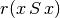 for all action x is put to the median, i.e. indeterminate value 0 in this case (see [BIS-2004]).
Graphviz drawings¶
We may have an even better insight into the Digraph object dg by looking at a graphviz drawing 1 .
1 2 3 4 | >>> dg.exportGraphViz('tutRandValDigraph')
*---- exporting a dot file for GraphViz tools ---------*
Exporting to tutRandValDigraph.dot
dot -Grankdir=BT -Tpng tutRandValDigraph.dot -o tutRandValDigraph.png
|
{kind=link}
Double links are drawn in bold black with an arrowhead at each end, whereas single asymmetric links are drawn in black with an arrowhead showing the direction of the link. Notice the undetermined relational situation (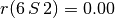) observed between nodes ‘6’ and ‘2’. The corresponding link is marked in gray with an open arrowhead in the drawing (see Fig. 3).
Asymmetric and symmetric parts¶
We may now extract both the symmetric as well as the asymmetric part of digraph dg with the help of two corresponding constructors (see Fig. 4).
1 2 3 4 5 6 | >>> from digraphs import AsymmetricPartialDigraph,
... SymmetricPartialDigraph
>>> asymDg = AsymmetricPartialDigraph(dg)
>>> asymDg.exportGraphViz()
>>> symDG = SymmetricPartialDigraph(dg)
>>> symDg.exportGraphViz()
|
{kind=link}
Note
The constructor of the partial objects asymDg and symDg puts to the indeterminate characteristic value all not-asymmetric, respectively not-symmetric links between nodes (see Fig. 4).
Here below, for illustration the source code of relation constructor of the digraphs.AsymmetricPartialDigraph class.
1 2 3 4 5 6 7 8 9 10 11 12 13 14 15 16 17 18 19 20 | def _constructRelation(self):
actions = self.actions
Min = self.valuationdomain['min']
Max = self.valuationdomain['max']
Med = self.valuationdomain['med']
relationIn = self.relation
relationOut = {}
for a in actions:
relationOut[a] = {}
for b in actions:
if a != b:
if relationIn[a][b] >= Med and relationIn[b][a] <= Med:
relationOut[a][b] = relationIn[a][b]
elif relationIn[a][b] <= Med and relationIn[b][a] >= Med:
relationOut[a][b] = relationIn[a][b]
else:
relationOut[a][b] = Med
else:
relationOut[a][b] = Med
return relationOut
|
Border and inner parts¶
We may also extract the border -the part of a digraph induced by the union of its initial and terminal prekernels (see tutorial On computing digraph kernels)- as well as, the inner part -the complement of the border- with the help of two corresponding class constructors: digraphs.GraphBorder and digraphs.GraphInner (see Listing 4 Line 1).
Let us illustrate these parts on a linear ordering obtained from the tutorial random valuation digraph dg (see Listing 4 Line 2-3) with the NetFlows ranking rule).
1 2 3 4 5 6 7 8 9 | >>> from digraphs import GraphBorder, GraphInner
>>> from linearOrders import NetFlowsOrder
>>> nf = NetFlowsOrder(dg)
>>> nf.netFlowsOrder
['6', '4', '5', '3', '2', '1', '7']
>>> bnf = GraphBorder(nf)
>>> bnf.exportGraphViz(worstChoice=['6'],bestChoice=['7'])
>>> inf = GraphInner(nf)
>>> inf.exportGraphViz(worstChoice=['6'],bestChoice=['7'])
|
{kind=link}
We may orient the graphviz drawings in Fig. 5 with the terminal node 6 (worstChoice parameter) and initial node 7 (bestChoice parameter), see Listing 4 Lines 7 and 9).
Note
The constructor of the partial digraphs bnf and inf (see Listing 4 Lines 3 and 6) puts to the indeterminate characteristic value all links not in the border, respectively not in the inner part (see Fig. 6).
Being much denser than a linear order, the actual inner part of our tutorial random valuation digraph dg is reduced to a single arc between nodes 3 and 4 (see Fig. 6).
{kind=link}
Indeed, a complete digraph on the limit has no inner part (privacy!) at all, whereas empty and indeterminate digraphs admit both, an empty border and an empty inner part.
Fusion by epistemic disjunction¶
We may recover object dg from both partial objects asymDg and symDg, or as well from the border bg and the inner part ig, with a bipolar fusion constructor, also called epistemic disjunction, available via the digraphs.FusionDigraph class (see Listing 3 Lines 12- 21).
1 2 3 4 5 6 7 8 9 10 11 12 13 14 | >>> from digraphs import FusionDigraph
>>> fusDg = FusionDigraph(asymDg,symDg,operator='o-max')
>>> # fusDg = FusionDigraph(bg,ig,operator='o-max')
>>> fusDg.showRelationTable()
* ---- Relation Table -----
r(xSy) | '1' '2' '3' '4' '5' '6' '7'
-------|------------------------------------------
'1' | 0.00 -0.48 0.70 0.86 0.30 0.38 0.44
'2' | -0.22 0.00 -0.38 0.50 0.80 -0.54 0.02
'3' | -0.42 0.08 0.00 0.70 -0.56 0.84 -1.00
'4' | 0.44 -0.40 -0.62 0.00 0.04 0.66 0.76
'5' | 0.32 -0.48 -0.46 0.64 0.00 -0.22 -0.52
'6' | -0.84 0.00 -0.40 -0.96 -0.18 0.00 -0.22
'7' | 0.88 0.72 0.82 0.52 -0.84 0.04 0.00
|
The epistemic disjunction operation o-max (see Listing 5 Line 2) works as follows.
Let r and r’ characterise two bipolar-valued epistemic situations.
o-max(r, r’ ) = max(r, r’ ) when both r and r’ are validated (positive);
o-max(r, r’ ) = min(r, r’ ) when both r and r’ are invalidated (negative);
o-max(r, r’ ) = indeterminate otherwise.
Dual, converse and codual digraphs¶
We may as readily compute the dual (negated relation 14), the converse (transposed relation) and the codual (transposed and negated relation) of the digraph instance dg.
1 2 3 4 5 6 7 8 9 10 11 12 13 14 15 16 17 18 19 20 21 22 23 24 25 26 27 28 29 30 31 32 33 34 35 36 | >>> from digraphs import DualDigraph, ConverseDigraph, CoDualDigraph
>>> ddg = DualDigraph(dg)
>>> ddg.showRelationTable()
-r(xSy) | '1' '2' '3' '4' '5' '6' '7'
--------|------------------------------------------
'1 ' | 0.00 0.48 -0.70 -0.86 -0.30 -0.38 -0.44
'2' | 0.22 0.00 0.38 -0.50 0.80 0.54 -0.02
'3' | 0.42 0.08 0.00 -0.70 0.56 -0.84 1.00
'4' | -0.44 0.40 0.62 0.00 -0.04 -0.66 -0.76
'5' | -0.32 0.48 0.46 -0.64 0.00 0.22 0.52
'6' | 0.84 0.00 0.40 0.96 0.18 0.00 0.22
'7' | 0.88 -0.72 -0.82 -0.52 0.84 -0.04 0.00
>>> cdg = ConverseDigraph(dg)
>>> cdg.showRelationTable()
* ---- Relation Table -----
r(ySx) | '1' '2' '3' '4' '5' '6' '7'
--------|------------------------------------------
'1' | 0.00 -0.22 -0.42 0.44 0.32 -0.84 0.88
'2' | -0.48 0.00 0.08 -0.40 -0.48 0.00 0.72
'3' | 0.70 -0.38 0.00 -0.62 -0.46 -0.40 0.82
'4' | 0.86 0.50 0.70 0.00 0.64 -0.96 0.52
'5' | 0.30 0.80 -0.56 0.04 0.00 -0.18 -0.84
'6' | 0.38 -0.54 0.84 0.66 -0.22 0.00 0.04
'7' | 0.44 0.02 -1.00 0.76 -0.52 -0.22 0.00
>>> cddg = CoDualDigraph(dg)
>>> cddg.showRelationTable()
* ---- Relation Table -----
-r(ySx) | '1' '2' '3' '4' '5' '6' '7'
--------|------------------------------------------
'1' | 0.00 0.22 0.42 -0.44 -0.32 0.84 -0.88
'2' | 0.48 0.00 -0.08 0.40 0.48 0.00 -0.72
'3' | -0.70 0.38 0.00 0.62 0.46 0.40 -0.82
'4' | -0.86 -0.50 -0.70 0.00 -0.64 0.96 -0.52
'5' | -0.30 -0.80 0.56 -0.04 0.00 0.18 0.84
'6' | -0.38 0.54 -0.84 -0.66 0.22 0.00 -0.04
'7' | -0.44 -0.02 1.00 -0.76 0.52 0.22 0.00
|
Computing the dual, respectively the converse, may also be done with prefixing the __neg__ (-) or the __invert__ (~) operator. The codual of a Digraph object may, hence, as well be computed with a composition (in either order) of both operations.
1 2 3 4 5 6 7 8 9 10 11 12 13 14 | >>> ddg = -dg # dual of dg
>>> cdg = ~dg # converse of dg
>>> cddg = ~(-dg) # = -(~(dg) codual of dg
>>> (-(~dg)).showRelationTable()
* ---- Relation Table -----
-r(ySx) | '1' '2' '3' '4' '5' '6' '7'
--------|------------------------------------------
'1' | 0.00 0.22 0.42 -0.44 -0.32 0.84 -0.88
'2' | 0.48 0.00 -0.08 0.40 0.48 0.00 -0.72
'3' | -0.70 0.38 0.00 0.62 0.46 0.40 -0.82
'4' | -0.86 -0.50 -0.70 0.00 -0.64 0.96 -0.52
'5' | -0.30 -0.80 0.56 -0.04 0.00 0.18 0.84
'6' | -0.38 0.54 -0.84 -0.66 0.22 0.00 -0.04
'7' | -0.44 -0.02 1.00 -0.76 0.52 0.22 0.00
|
Symmetric and transitive closures¶
Symmetric and transitive closure in-site constructors are also available (see Fig. 7). Note that it is a good idea, before going ahead with these in-site operations who irreversibly modify the original dg object, to previously make a backup version of dg. The simplest storage method, always provided by the generic digraphs.Digraph.save(), writes out in a named file the python content of the Digraph object in string representation.
1 2 3 4 | >>> dg.save('tutRandValDigraph')
>>> dg.closeSymmetric()
>>> dg.closeTransitive()
>>> dg.exportGraphViz('strongComponents')
|

Fig. 7 Symmetric and transitive closure of the tutorial random valuation digraph¶
Strong components¶
As the original digraph dg was connected (see above the result of the dg.showShort() command), both the symmetric and transitive closures operated together, will necessarily produce a single strong component, i.e. a complete digraph. We may sometimes wish to collapse all strong components in a given digraph and construct the so reduced digraph. Using the digraphs.StrongComponentsCollapsedDigraph constructor here will render a single hyper-node gathering all the original nodes.
1 2 3 4 5 6 7 8 9 10 11 12 13 14 15 16 17 18 | >>> from digraphs import StrongComponentsCollapsedDigraph
>>> sc = StrongComponentsCollapsedDigraph(dg)
>>> sc.showAll()
*----- show detail -----*
Digraph : tutRandValDigraph_Scc
*---- Actions ----*
['_7_1_2_6_5_3_4_']
* ---- Relation Table -----
S | 'Scc_1'
-------|---------
'Scc_1' | 0.00
short content
Scc_1 _7_1_2_6_5_3_4_
Neighborhoods:
Gamma :
'frozenset({'7', '1', '2', '6', '5', '3', '4'})': in => set(), out => set()
Not Gamma :
'frozenset({'7', '1', '2', '6', '5', '3', '4'})': in => set(), out => set()
|
CSV storage¶
Sometimes it is required to exchange the graph valuation data in CSV format with a statistical package like R. For this purpose it is possible to export the digraph data into a CSV file. The valuation domain is hereby normalized by default to the range [-1,1] and the diagonal put by default to the minimal value -1.
1 2 3 4 5 6 7 8 9 10 11 | >>> dg = Digraph('tutRandValDigraph')
>>> dg.saveCSV('tutRandValDigraph')
# content of file tutRandValDigraph.csv
"d","1","2","3","4","5","6","7"
"1",-1.0,0.48,-0.7,-0.86,-0.3,-0.38,-0.44
"2",0.22,-1.0,0.38,-0.5,-0.8,0.54,-0.02
"3",0.42,-0.08,-1.0,-0.7,0.56,-0.84,1.0
"4",-0.44,0.4,0.62,-1.0,-0.04,-0.66,-0.76
"5",-0.32,0.48,0.46,-0.64,-1.0,0.22,0.52
"6",0.84,0.0,0.4,0.96,0.18,-1.0,0.22
"7",-0.88,-0.72,-0.82,-0.52,0.84,-0.04,-1.0
|
It is possible to reload a Digraph instance from its previously saved CSV file content.
1 2 3 4 5 6 7 8 9 10 11 12 | >>> dgcsv = CSVDigraph('tutRandValDigraph')
>>> dgcsv.showRelationTable(ReflexiveTerms=False)
* ---- Relation Table -----
r(xSy) | '1' '2' '3' '4' '5' '6' '7'
-------|------------------------------------------------------------
'1' | - -0.48 0.70 0.86 0.30 0.38 0.44
'2' | -0.22 - -0.38 0.50 0.80 -0.54 0.02
'3' | -0.42 0.08 - 0.70 -0.56 0.84 -1.00
'4' | 0.44 -0.40 -0.62 - 0.04 0.66 0.76
'5' | 0.32 -0.48 -0.46 0.64 - -0.22 -0.52
'6' | -0.84 0.00 -0.40 -0.96 -0.18 - -0.22
'7' | 0.88 0.72 0.82 0.52 -0.84 0.04 -
|
It is as well possible to show a colored version of the valued relation table in a system browser window tab (see Fig. 8).
1 | >>> dgcsv.showHTMLRelationTable(tableTitle="Tutorial random digraph")
|
{kind=link}
Positive arcs are shown in green and negative arcs in red. Indeterminate -zero-valued- links, like the reflexive diagonal ones or the link between node 6 and node 2, are shown in gray.
Complete, empty and indeterminate digraphs¶
Let us finally mention some special universal classes of digraphs that are readily available in the digraphs module, like the digraphs.CompleteDigraph, the digraphs.EmptyDigraph and the digraphs.IndeterminateDigraph classes, which put all characteristic values respectively to the maximum, the minimum or the median indeterminate characteristic value.
1 2 3 4 5 6 7 8 9 10 11 12 13 14 15 16 17 18 19 20 21 22 23 24 25 26 27 28 29 30 31 32 33 34 35 36 37 38 39 40 41 42 43 44 45 46 47 48 49 50 51 52 53 54 55 56 57 58 59 60 61 | >>> from digraphs import CompleteDigraph,EmptyDigraph,
... IndeterminateDigraph
>>> help(CompleteDigraph)
Help on class CompleteDigraph in module digraphs:
class CompleteDigraph(Digraph)
| Parameters:
| order > 0; valuationdomain=(Min,Max).
| Specialization of the general Digraph class for generating
| temporary complete graphs of order 5 in {-1,0,1} by default.
| Method resolution order:
| CompleteDigraph
| Digraph
| builtins.object
...
>>> e = EmptyDigraph(order=5)
>>> e.showRelationTable()
* ---- Relation Table -----
S | '1' '2' '3' '4' '5'
---- -|---------------------------------------
'1' | -1.00 -1.00 -1.00 -1.00 -1.00
'2' | -1.00 -1.00 -1.00 -1.00 -1.00
'3' | -1.00 -1.00 -1.00 -1.00 -1.00
'4' | -1.00 -1.00 -1.00 -1.00 -1.00
'5' | -1.00 -1.00 -1.00 -1.00 -1.00
>>> e.showNeighborhoods()
Neighborhoods:
Gamma :
'1': in => set(), out => set()
'2': in => set(), out => set()
'5': in => set(), out => set()
'3': in => set(), out => set()
'4': in => set(), out => set()
Not Gamma :
'1': in => {'2', '4', '5', '3'}, out => {'2', '4', '5', '3'}
'2': in => {'1', '4', '5', '3'}, out => {'1', '4', '5', '3'}
'5': in => {'1', '2', '4', '3'}, out => {'1', '2', '4', '3'}
'3': in => {'1', '2', '4', '5'}, out => {'1', '2', '4', '5'}
'4': in => {'1', '2', '5', '3'}, out => {'1', '2', '5', '3'}
>>> i = IndeterminateDigraph()
* ---- Relation Table -----
S | '1' '2' '3' '4' '5'
------|--------------------------------------
'1' | 0.00 0.00 0.00 0.00 0.00
'2' | 0.00 0.00 0.00 0.00 0.00
'3' | 0.00 0.00 0.00 0.00 0.00
'4' | 0.00 0.00 0.00 0.00 0.00
'5' | 0.00 0.00 0.00 0.00 0.00
>>> i.showNeighborhoods()
Neighborhoods:
Gamma :
'1': in => set(), out => set()
'2': in => set(), out => set()
'5': in => set(), out => set()
'3': in => set(), out => set()
'4': in => set(), out => set()
Not Gamma :
'1': in => set(), out => set()
'2': in => set(), out => set()
'5': in => set(), out => set()
'3': in => set(), out => set()
'4': in => set(), out => set()
|
Note
Mind the subtle difference between the neighborhoods of an empty and the neighborhoods of an indeterminate digraph instance. In the first kind, the neighborhoods are known to be completely empty whereas, in the latter, nothing is known about the actual neighborhoods of the nodes. These two cases illustrate why in the case of a bipolar characteristic valuation domain, we need both a gamma and a notGamma function.
Back to Content Table
Computing the winner of an election¶
Linear voting profiles¶
The votingProfiles module provides resources for handling election results [ADT-L2], like the votingProfiles.LinearVotingProfile class. We consider an election involving a finite set of candidates and finite set of weighted voters, who express their voting preferences in a complete linear ranking (without ties) of the candidates. The data is internally stored in two ordered dictionaries, one for the voters and another one for the candidates. The linear ballots are stored in a standard dictionary.
1 2 3 4 5 6 7 8 9 | candidates = OrderedDict([('a1',...), ('a2',...), ('a3', ...), ...}
voters = OrderedDict([('v1',{'weight':10}), ('v2',{'weight':3}), ...}
## each voter specifies a linearly ranked list of candidates
## from the best to the worst (without ties
linearBallot = {
'v1' : ['a2','a3','a1', ...],
'v2' : ['a1','a2','a3', ...],
...
}
|
The module provides a votingProfiles.RandomLinearVotingProfile class for generating random instances of the votingProfiles.LinearVotingProfile class. In an interactive Python session we may obtain for the election of 3 candidates by 5 voters the following result.
1 2 3 4 5 6 7 8 9 10 11 12 13 14 15 16 17 | >>> from votingProfiles import RandomLinearVotingProfile
>>> v = RandomLinearVotingProfile(numberOfVoters=5,
... numberOfCandidates=3,
... RandomWeights=True)
>>> v.candidates
OrderedDict([ ('a1',{'name':'a1}), ('a2',{'name':'a2'}),
('a3',{'name':'a3'}) ])
>>> v.voters
OrderedDict([('v1',{'weight': 2}), ('v2':{'weight': 3}),
('v3',{'weight': 1}), ('v4':{'weight': 5}),
('v5',{'weight': 4})])
>>> v.linearBallot
{'v1': ['a1', 'a2', 'a3',],
'v2': ['a3', 'a2', 'a1',],
'v3': ['a1', 'a3', 'a2',],
'v4': ['a1', 'a3', 'a2',],
'v5': ['a2', 'a3', 'a1',]}
|
Notice that in this random example, the five voters are weighted (see Listing 7 Line 6-7). Their linear ballots can be viewed with the votingProfiles.LinearVotingProfile.showLinearBallots() method.
1 2 3 4 5 6 7 8 | >>> v.showLinearBallots()
voters(weight) candidates rankings
v1(2): ['a2', 'a1', 'a3']
v2(3): ['a3', 'a1', 'a2']
v3(1): ['a1', 'a3', 'a2']
v4(5): ['a1', 'a2', 'a3']
v5(4): ['a3', 'a1', 'a2']
# voters: 15
|
Editing of the linear voting profile may be achieved by storing the data in a file, edit it, and reload it again.
1 2 3 | >>> v.save(fileName='tutorialLinearVotingProfile1')
*--- Saving linear profile in file: <tutorialLinearVotingProfile1.py> ---*
>>> v = LinearVotingProfile('tutorialLinearVotingProfile1')
|
Computing the winner¶
We may easily compute uni-nominal votes, i.e. how many times a candidate was ranked first, and see who is consequently the simple majority winner(s) in this election.
1 2 3 4 | >>> v.computeUninominalVotes()
{'a2': 2, 'a1': 6, 'a3': 7}
>>> v.computeSimpleMajorityWinner()
['a3']
|
As we observe no absolute majority (8/15) of votes for any of the three candidate, we may look for the instant runoff winner instead (see [ADT-L2]).
1 2 3 4 5 6 7 8 9 10 11 12 13 14 15 16 | >>> v.computeInstantRunoffWinner(Comments=True)
Half of the Votes = 7.50
==> stage = 1
remaining candidates ['a1', 'a2', 'a3']
uninominal votes {'a1': 6, 'a2': 2, 'a3': 7}
minimal number of votes = 2
maximal number of votes = 7
candidate to remove = a2
remaining candidates = ['a1', 'a3']
==> stage = 2
remaining candidates ['a1', 'a3']
uninominal votes {'a1': 8, 'a3': 7}
minimal number of votes = 7
maximal number of votes = 8
candidate a1 obtains an absolute majority
Instant run off winner: ['a1']
|
In stage 1, no candidate obtains an absolute majority of votes. Candidate a2 obtains the minimal number of votes (2/15) and is, hence, eliminated. In stage 2, candidate a1 obtains an absolute majority of the votes (8/15) and is eventually elected (see Listing 8).
We may also follow the Chevalier de Borda’s advice and, after a rank analysis of the linear ballots, compute the Borda score -the average rank- of each candidate and hence determine the Borda winner(s).
1 2 3 4 5 6 7 8 9 | >>> v.computeRankAnalysis()
{'a2': [2, 5, 8], 'a1': [6, 9, 0], 'a3': [7, 1, 7]}
>>> v.computeBordaScores()
OrderedDict([
('a1', {'BordaScore': 24, 'averageBordaScore': 1.6}),
('a3', {'BordaScore': 30, 'averageBordaScore': 2.0}),
('a2', {'BordaScore': 36, 'averageBordaScore': 2.4}) ])
>>> v.computeBordaWinners()
['a1']
|
Candidate a1 obtains the minimal Borda score, followed by candidate a3 and finally candidate a2 (see Listing 9). The corresponding Borda rank analysis table may be printed out with a corresponding show command.
1 2 3 4 5 6 7 8 | >>> v.showRankAnalysisTable()
*---- Borda rank analysis tableau -----*
candi- | alternative-to-rank | Borda
dates | 1 2 3 | score average
-------|-------------------------------------
'a1' | 6 9 0 | 24/15 1.60
'a3' | 7 1 7 | 30/15 2.00
'a2' | 2 5 8 | 36/15 2.40
|
In our randomly generated election results, we are lucky: The instant runoff winner and the Borda winner both are candidate a1 (see Listing 8 and Listing 10). However, we could also follow the Marquis de Condorcet’s advice, and compute the majority margins obtained by voting for each individual pair of candidates.
The Condorcet winner¶
For instance, candidate a1 is ranked four times before and once behind candidate a2. Hence the corresponding majority margin M(a1,a2) is 4 - 1 = +3. These majority margins define on the set of candidates what we call the Condorcet digraph. The votingProfiles.CondorcetDigraph class (a specialization of the digraphs.Digraph class) is available for handling such kind of digraphs.
1 2 3 4 5 6 7 8 9 10 11 12 13 14 15 16 17 18 19 20 21 22 23 24 25 26 27 28 29 | >>> from votingProfiles import CondorcetDigraph
>>> cdg = CondorcetDigraph(v,hasIntegerValuation=True)
>>> cdg
*------- Digraph instance description ------*
Instance class : CondorcetDigraph
Instance name : rel_randomLinearVotingProfile1
Digraph Order : 3
Digraph Size : 3
Valuation domain : [-15.00;15.00]
Determinateness (%) : 64.44
Attributes : ['name', 'actions', 'voters',
'ballot', 'valuationdomain',
'relation', 'order',
'gamma', 'notGamma']
>>> cdg.showAll()
*----- show detail -------------*
Digraph : rel_randLinearVotingProfile1
*---- Actions ----*
['a1', 'a2', 'a3']
*---- Characteristic valuation domain ----*
{'max': Decimal('15.0'), 'med': Decimal('0'),
'min': Decimal('-15.0'), 'hasIntegerValuation': True}
* ---- majority margins -----
M(x,y) | 'a1' 'a2' 'a3'
----------|-------------------
'a1' | 0 11 1
'a2' | -11 0 -1
'a3' | -1 1 0
Valuation domain: [-15;+15]
|
Notice that in the case of linear voting profiles, majority margins always verify a zero sum property: M(x,y) + M(y,x) = 0 for all candidates x and y (see Listing 11 Lines 26-28). This is not true in general for arbitrary voting profiles. The Condorcet digraph of linear voting profiles defines in fact a weak tournament and belongs, hence, to the class of self-codual bipolar-valued digraphs (13).
Now, a candidate x, showing a positive majority margin M(x,y), is beating candidate y with an absolute majority in a pairwise voting. Hence, a candidate showing only positive terms in her row in the Condorcet digraph relation table, beats all other candidates with absolute majority of votes. Condorcet recommends to declare this candidate (is always unique, why?) the winner of the election. Here we are lucky, it is again candidate a1 who is hence the Condorcet winner (see Listing 11 Line 26).
1 2 | >>> cdg.computeCondorcetWinner()
['a1']
|
By seeing the majority margins like a bipolar-valued characteristic function of a global preference relation defined on the set of candidates, we may use all operational resources of the generic Digraph class (see Working with the Digraph3 software resources), and especially its exportGraphViz method 1, for visualizing an election result.
1 2 3 4 | >>> cdg.exportGraphViz(fileName='tutorialLinearBallots')
*---- exporting a dot file for GraphViz tools ---------*
Exporting to tutorialLinearBallots.dot
dot -Grankdir=BT -Tpng tutorialLinearBallots.dot -o tutorialLinearBallots.png
|

Fig. 9 Visualizing an election result¶
In Fig. 9 we notice that the Condorcet digraph from our example linear voting profile gives a linear order of the candidates: [‘a1’, ‘a3’, ‘a2], the same actually as given by the Borda scores (see Listing 9). This is by far not given in general. Usually, when aggregating linear ballots, there appear cyclic social preferences.
Cyclic social preferences¶
Let us consider for instance the following linear voting profile and construct the corresponding Condorcet digraph.
1 2 3 4 5 6 7 8 9 10 11 12 13 14 15 16 17 18 19 20 21 | >>> v.showLinearBallots()
voters(weight) candidates rankings
v1(1): ['a1', 'a3', 'a5', 'a2', 'a4']
v2(1): ['a1', 'a2', 'a4', 'a3', 'a5']
v3(1): ['a5', 'a2', 'a4', 'a3', 'a1']
v4(1): ['a3', 'a4', 'a1', 'a5', 'a2']
v5(1): ['a4', 'a2', 'a3', 'a5', 'a1']
v6(1): ['a2', 'a4', 'a5', 'a1', 'a3']
v7(1): ['a5', 'a4', 'a3', 'a1', 'a2']
v8(1): ['a2', 'a4', 'a5', 'a1', 'a3']
v9(1): ['a5', 'a3', 'a4', 'a1', 'a2']
>>> cdg = CondorcetDigraph(v)
>>> cdg.showRelationTable()
* ---- Relation Table -----
S | 'a1' 'a2' 'a3' 'a4' 'a5'
------|----------------------------------------
'a1' | - 0.11 -0.11 -0.56 -0.33
'a2' | -0.11 - 0.11 0.11 -0.11
'a3' | 0.11 -0.11 - -0.33 -0.11
'a4' | 0.56 -0.11 0.33 - 0.11
'a5' | 0.33 0.11 0.11 -0.11 -
|
Now, we cannot find any completely positive row in the relation table (see Listing 12 Lines 17 - ). No one of the five candidates is beating all the others with an absolute majority of votes. There is no Condorcet winner anymore. In fact, when looking at a graphviz drawing of this Condorcet digraph, we may observe cyclic preferences, like (a1 > a2 > a3 > a1) for instance (see Fig. 10).
1 2 3 4 | >>> cdg.exportGraphViz('cycles')
*---- exporting a dot file for GraphViz tools ---------*
Exporting to cycles.dot
dot -Grankdir=BT -Tpng cycles.dot -o cycles.png
|

Fig. 10 Cyclic social preferences¶
But, there may be many cycles appearing in a Condorcet digraph, and, we may detect and enumerate all minimal chordless circuits in a Digraph instance with the digraphs.Digraph.computeChordlessCircuits() method.
1 2 3 4 | >>> cdg.computeChordlessCircuits()
[(['a2', 'a3', 'a1'], frozenset({'a2', 'a3', 'a1'})),
(['a2', 'a4', 'a5'], frozenset({'a2', 'a5', 'a4'})),
(['a2', 'a4', 'a1'], frozenset({'a2', 'a1', 'a4'}))]
|
Condorcet ‘s approach for determining the winner of an election is hence not decisive in all circumstances and we need to exploit more sophisticated approaches for finding the winner of the election on the basis of the majority margins of the given linear ballots (see the tutorial on Ranking with multiple incommensurable criteria and [BIS-2008]).
Many more tools for exploiting voting results are available like the browser heat map view on voting profiles (see the technical documentation of the votingProfiles module).
1 2 | >>> v.showHTMLVotingHeatmap(rankingRule='NetFlows',
... Transposed=False)
|
{kind=link}
Notice that the importance weights of the voters are negative, which means that the preference direction of the criteria (in this case the individual voters) is decreasing, i.e. goes from lowest (best) rank to highest (worst) rank. Notice also, that the compromise NetFlows ranking [a4,a5,a2,a1,a3], shown in this heatmap (see Fig. 11) results in an optimal ordinal correlation index of +0.778 with the pairwise majority voting margins (see tutorials Ordinal correlation equals bipolar-valued relational equivalence and Ranking with multiple incommensurable criteria). The number of voters is usually much larger than the number of candidates. In that case, it is better to generate a transposed voters X candidates view (see Listing 13 Line 2)
On generating random linear voting profiles¶
By default, the votingProfiles.RandomLinearVotingProfile class generates random linear voting profiles where every candidates has the same uniform probabilities to be ranked at a certain position by all the voters. For each voter’s random linear ballot is indeed generated via a uniform shuffling of the list of candidates.
In reality, political election data appear quite different. There will usually be different favorite and marginal candidates for each political party. To simulate these aspects into our random generator, we are using two random exponentially distributed polls of the candidates and consider a bipartisan political landscape with a certain random balance (default theoretical party repartition = 0.50) between the two sets of potential party supporters (see votingProfiles.LinearVotingProfile class). A certain theoretical proportion (default = 0.1) will not support any party.
Let us generate such a linear voting profile for an election with 1000 voters and 15 candidates.
1 2 3 4 5 6 7 8 9 10 11 12 13 14 15 16 17 18 19 20 21 22 23 24 25 26 27 28 29 30 31 32 33 34 35 36 37 38 39 40 | >>> from votingProfiles import RandomLinearVotingProfile
>>> lvp = RandomLinearVotingProfile(numberOfCandidates=15,
... numberOfVoters=1000,
... WithPolls=True,
... partyRepartition=0.5,
... other=0.1,
... seed=0.9189670954954139)
>>> lvp
*------- VotingProfile instance description ------*
Instance class : RandomLinearVotingProfile
Instance name : randLinearProfile
# Candidates : 15
# Voters : 1000
Attributes : ['name', 'seed', 'candidates',
'voters', 'RandomWeights',
'sumWeights', 'poll1', 'poll2',
'bipartisan', 'linearBallot', 'ballot']
>>> lvp.showRandomPolls()
Random repartition of voters
Party_1 supporters : 460 (46.0%)
Party_2 supporters : 436 (43.6%)
Other voters : 104 (10.4%)
*---------------- random polls ---------------
Party_1(46.0%) | Party_2(43.6%)| expected
-----------------------------------------------
a06 : 19.91% | a11 : 22.94% | a06 : 15.00%
a07 : 14.27% | a08 : 15.65% | a11 : 13.08%
a03 : 10.02% | a04 : 15.07% | a08 : 09.01%
a13 : 08.39% | a06 : 13.40% | a07 : 08.79%
a15 : 08.39% | a03 : 06.49% | a03 : 07.44%
a11 : 06.70% | a09 : 05.63% | a04 : 07.11%
a01 : 06.17% | a07 : 05.10% | a01 : 05.06%
a12 : 04.81% | a01 : 05.09% | a13 : 05.04%
a08 : 04.75% | a12 : 03.43% | a15 : 04.23%
a10 : 04.66% | a13 : 02.71% | a12 : 03.71%
a14 : 04.42% | a14 : 02.70% | a14 : 03.21%
a05 : 04.01% | a15 : 00.86% | a09 : 03.10%
a09 : 01.40% | a10 : 00.44% | a10 : 02.34%
a04 : 01.18% | a05 : 00.29% | a05 : 01.97%
a02 : 00.90% | a02 : 00.21% | a02 : 00.51%
|
In this example (see Listing 14 Lines 18-), we obtain 460 Party_1 supporters (46%), 436 Party_2 supporters (43.6%) and 104 other voters (10.4%). Favorite candidates of Party_1 supporters, with more than 10%, appear to be a06 (19.91%), a07 (14.27%) and a03 (10.02%). Whereas for Party_2 supporters, favorite candidates appear to be a11 (22.94%), followed by a08 (15.65%), a04 (15.07%) and a06 (13.4%). Being first choice for Party_1 supporters and fourth choice for Party_2 supporters, this candidate a06 is a natural candidate for clearly winning this election game (see Listing 15).
1 2 3 4 5 6 | >>> lvp.computeSimpleMajorityWinner()
['a06']
>>> lvp.computeInstantRunoffWinner()
['a06']
>>> lvp.computeBordaWinners()
['a06']
|
Is it also a Condorcet winner ? To verify, we start by creating the corresponding Condorcet digraph cdg with the help of the votingProfiles.CondorcetDigraph class. The created digraph instance contains 15 actions -the candidates- and 105 oriented arcs -the positive majority margins- (see Listing 16 Lines 6-7).
1 2 3 4 5 6 7 8 9 10 11 12 13 | >>> from votingProfiles import CondorcetDigraph
>>> cdg = CondorcetDigraph(lvp)
*------- Digraph instance description ------*
Instance class : CondorcetDigraph
Instance name : rel_randLinearProfile
Digraph Order : 15
Digraph Size : 104
Valuation domain : [-1000.00;1000.00]
Determinateness (%) : 67.08
Attributes : ['name', 'actions', 'voters',
'ballot', 'valuationdomain',
'relation', 'order',
'gamma', 'notGamma']
|
We may visualize the resulting pairwise majority margins by showing the HTML formated version of the cdg relation table in a browser view.
>>> cdg.showHTMLRelationTable(tableTitle='Pairwise majority margins',
... relationName=M(x>y)')

Fig. 12 Browsing the majority margins of a Condorcet digraph¶
In Fig. 12, light green cells contain the positive majority margins, whereas light red cells contain the negative majority margins. A complete light green row reveals hence a Condorcet winner, whereas a complete light green column reveals a Condorcet looser. We recover again candidate a06 as Condorcet winner (15), whereas the obvious Condorcet looser is here candidate a02, the candidate with the lowest support in both parties (see Listing 14 Line 40).
With the same bipolar -first ranked and last ranked candidate- selection procedure, we may weakly rank the candidates (with possible ties) by iterating these first ranked and last ranked choices among the remaining candidates ([BIS-1999]).
1 2 3 4 5 6 7 8 9 10 11 12 13 14 15 16 17 18 19 20 21 22 23 24 25 26 27 28 29 30 31 32 33 34 35 36 | >>> cdg.showRankingByChoosing()
Error: You must first run
self.computeRankingByChoosing(CoDual=False(default)|True) !
>>> cdg.computeRankingByChoosing()
{'CoDual': False,
'result': [
((Decimal('475.2857142857142857142857143'), ['a06']),
(Decimal('682.8571428571428571428571429'), ['a02'])),
((Decimal('349.3333333333333333333333333'), ['a11']),
(Decimal('415.8333333333333333333333333'), ['a05'])),
((Decimal('278.4444444444444444444444444'), ['a07', 'a08']),
(Decimal('353.4'), ['a10'])),
((Decimal('265.4285714285714285714285714'), ['a03']),
(Decimal('170.5714285714285714285714286'), ['a09'])),
((Decimal('145.2'), ['a01']),
(Decimal('130.0'), ['a15'])),
((Decimal('104.0'), ['a13']),
(Decimal('104.6666666666666666666666667'), ['a14'])),
((Decimal('16.0'), ['a04']),
(Decimal('16.0'), ['a12']))]}
>>> cdg.showRankingByChoosing()
Ranking by Choosing and Rejecting
1st first ranked ['a06'] (475.29)
2nd first ranked ['a11'] (349.33)
3rd first ranked ['a07', 'a08'] (278.44)
4th first ranked ['a03'] (265.43)
5th first ranked ['a01'] (145.20)
6th first ranked ['a13'] (104.00)
7th first ranked ['a04'] (16.00)
7th last ranked ['a12'] (16.00)
6th last ranked ['a14'] (104.67)
5th last ranked ['a15'] (130.00)
4th last ranked ['a09'] (170.57)
3rd last ranked ['a10'] (353.40)
2nd last ranked ['a05'] (415.83)
1st last ranked ['a02'] (682.86)
|
Before showing the ranking-by-choosing result, we have to compute the iterated bipolar selection procedure (see Listing 17 Line 2). The first selection concerns a06 (first) and a02 (last), followed by a11 (first) opposed to a05 (last), and so on, until there remains at iteration step 7 a last pair of candidates, namely [a04, a12] (see Lines 29-30). The bracketed numbers, following the reiterated first ranked and last ranked candidates, indicate the average majority margin with which the i-th first ranked candidate(s), respectively the i-th last ranked candidate, is beating, resp. is beaten by, the remaining candidates at step i.
Notice furthermore the first ranked candidates at iteration step 3 (see Listing 17 Line 25), namely the pair [a07, a08]. Both candidates represent indeed conjointly the first ranked choice. We obtain here hence a weak ranking, i.e. a ranking with a tie.
Let us mention that the instant-run-off procedure, we used before (see Listing 15 Line 3), when operated with a Comments=True parameter setting, will deliver a more or less similar reversed linear ordering-by-rejecting result, namely [a02, a10, a14, a05, a09, a13, a12, a15, a04, a01, a08, a03, a07, a11, a06], ordered from the last to the first choice.
Remarkable about both these ranking-by-choosing or ordering-by-rejecting results is the fact that the random voting behaviour, simulated here with the help of two discrete random variables (16), defined respectively by the two party polls, is rendering a ranking that is more or less in accordance with the simulated balance of the polls: -Party_1 supporters : 460; Party_2 supporters: 436 (see Listing 17 Lines 26-40 third column). Despite a random voting behaviour per voter, the given polls apparently show a very strong incidence on the eventual election result. In order to avoid any manipulation of the election outcome, public media are therefore in some countries not allowed to publish polls during the last weeks before a general election.
Note
Mind that the specific ranking-by-choosing procedure, we use here on the Condorcet digraph, operates the selection procedure by extracting at each step initial and terminal kernels, i.e. NP-hard operational problems (see tutorial On computing digraph kernels and [BIS-1999]); A technique that does not allow in general to tackle voting profiles with much more than 20 candidates. The tutorial on Ranking with multiple incommensurable criteria provides more adequate and efficient techniques for ranking from pairwise majority margins when a larger number of potential candidates is given.
Back to Content Table
Working with the outrankingDigraphs module¶
See also the technical documentation of the outrankingDigraphs module.
Outranking digraph¶
In this Digraph3 module, the main outrankingDigraphs.BipolarOutrankingDigraph class provides a generic bipolar-valued outranking digraph model. A given object of this class consists in
a potential set of decision actions : a dictionary describing the potential decision actions or alternatives with ‘name’ and ‘comment’ attributes,
a coherent family of criteria: a dictionary of criteria functions used for measuring the performance of each potential decision action with respect to the preference dimension captured by each criterion,
the evaluations: a dictionary of performance evaluations for each decision action or alternative on each criterion function.
the digraph valuationdomain, a dictionary with three entries: the minimum (-100, means certainly no link), the median (0, means missing information) and the maximum characteristic value (+100, means certainly a link),
the outranking relation : a double dictionary defined on the Cartesian product of the set of decision alternatives capturing the credibility of the pairwise outranking situation computed on the basis of the performance differences observed between couples of decision alternatives on the given family if criteria functions.
With the help of the outrankingDigraphs.RandomBipolarOutrankingDigraph class (of type outrankingDigraphs.BipolarOutrankingDigraph) , let us generate for illustration a random bipolar-valued outranking digraph consisting of 7 decision actions denoted a01, a02, …, a07.
1 2 3 4 5 6 7 8 9 10 11 12 13 14 15 | >>> from outrankingDigraphs import RandomBipolarOutrankingDigraph
>>> odg = RandomBipolarOutrankingDigraph()
>>> odg.showActions()
*----- show digraphs actions --------------*
key: a01
name: random decision action
comment: RandomPerformanceTableau() generated.
key: a02
name: random decision action
comment: RandomPerformanceTableau() generated.
...
...
key: a07
name: random decision action
comment: RandomPerformanceTableau() generated.
|
In this example we consider furthermore a family of seven equisignificant cardinal criteria functions g01, g02, …, g07, measuring the performance of each alternative on a rational scale from 0.0 to 100.00. In order to capture the evaluation’s uncertainty and imprecision, each criterion function g1 to g7 admits three performance discrimination thresholds of 10, 20 and 80 pts for warranting respectively any indifference, preference and veto situations.
1 2 3 4 5 6 7 8 9 10 11 12 13 14 15 16 17 18 19 20 21 22 | >>> odg.showCriteria()
*---- criteria -----*
g01 'RandomPerformanceTableau() instance'
Scale = [0.0, 100.0]
Weight = 3.0
Threshold pref : 20.00 + 0.00x ; percentile: 0.28
Threshold ind : 10.00 + 0.00x ; percentile: 0.095
Threshold veto : 80.00 + 0.00x ; percentile: 1.0
g02 'RandomPerformanceTableau() instance'
Scale = [0.0, 100.0]
Weight = 3.0
Threshold pref : 20.00 + 0.00x ; percentile: 0.33
Threshold ind : 10.00 + 0.00x ; percentile: 0.19
Threshold veto : 80.00 + 0.00x ; percentile: 0.95
...
...
g07 'RandomPerformanceTableau() instance'
Scale = [0.0, 100.0]
Weight = 10.0
Threshold pref : 20.00 + 0.00x ; percentile: 0.476
Threshold ind : 10.00 + 0.00x ; percentile: 0.238
Threshold veto : 80.00 + 0.00x ; percentile: 1.0
|
The performance evaluations of each decision alternative on each criterion are gathered in a performance tableau.
1 2 3 4 5 6 7 8 9 10 11 | >>> odg.showPerformanceTableau()
*---- performance tableau -----*
criteria | 'a01' 'a02' 'a03' 'a04' 'a05' 'a06' 'a07'
---------|------------------------------------------------------
'g01' | 9.6 48.8 21.7 37.3 81.9 48.7 87.7
'g02' | 90.9 11.8 96.6 41.0 34.0 53.9 46.3
'g03' | 97.8 46.4 83.3 30.9 61.5 85.4 82.5
'g04' | 40.5 43.6 53.2 17.5 38.6 21.5 67.6
'g05' | 33.0 40.7 96.4 55.1 46.2 58.1 52.6
'g06' | 47.6 19.0 92.7 55.3 51.7 26.6 40.4
'g07' | 41.2 64.0 87.7 71.6 57.8 59.3 34.7
|
Browsing the performances¶
We may visualize the same performance tableau in a two-colors setting in the default system browser with the command.
>>> odg.showHTMLPerformanceTableau()

Fig. 13 Visualizing a performance tableau in a browser window¶
It is worthwhile noticing that green and red marked evaluations indicate best, respectively worst, performances of an alternative on a criterion. In this example, we may hence notice that alternative a03 is in fact best performing on four out of seven criteria.
We may, furthermore, rank the alternatives on the basis of the weighted marginal quintiles and visualize the same performance tableau in an even more colorful and sorted setting.
>>> odg.showHTMLPerformanceHeatmap(quantiles=5,colorLevels=5)

Fig. 14 Ranked heatmap of the performance table¶
There is no doubt that action a03, with a performance in the highest quintile in five out of seven criteria, appears definitely to be best performing. Action a05 shows a more or less average performance on most criteria, whereas action a02 appears to be the weakest alternative.
Valuation semantics¶
Considering the given performance tableau, the outrankingDigraphs.BipolarOutrankingDigraph class constructor computes the characteristic value 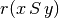 of a pairwise outranking relation “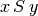” (see [BIS-2013], [ADT-L7]) in a default valuation domain [-100.0,+100.0] with the median value 0.0 acting as indeterminate characteristic value. The semantics of r(x S y) are the following.
If 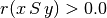 it is more True than False that x outranks y, i.e. alternative x is at least as well performing than alternative y and there is no considerable negative performance difference observed in disfavour of x,
If 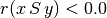 it is more False than True that x outranks y, i.e. alternative x is not at least as well performing than alternative y and there is no considerable positive performance difference observed in favour of x,
If 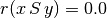 it is indeterminate whether x outranks y or not.
The resulting bipolar-valued outranking relation may be inspected with the following command.
1 2 3 4 5 6 7 8 9 10 11 12 13 14 | >>> odg.showRelationTable()
* ---- Relation Table -----
r(x S y)| 'a01' 'a02' 'a03' 'a04' 'a05' 'a06' 'a07'
--------|---------------------------------------------------------
'a01' | +0.00 +29.73 -29.73 +13.51 +48.65 +40.54 +48.65
'a02' | +13.51 +0.00 -100.00 +37.84 +13.51 +43.24 -37.84
'a03' | +83.78 +100.00 +0.00 +91.89 +83.78 +83.78 +70.27
'a04' | +24.32 +48.65 -56.76 +0.00 +24.32 +51.35 +24.32
'a05' | +51.35 +100.00 -70.27 +72.97 +0.00 +51.35 +32.43
'a06' | +16.22 +72.97 -51.35 +35.14 +32.43 +0.00 +37.84
'a07' | +67.57 +45.95 -24.32 +27.03 +27.03 +45.95 +0.00
>>> odg.valuationdomain
{'min': Decimal('-100.0'), 'max': Decimal('100.0'),
'med': Decimal('0.0')}
|
Pairwise comparisons¶
From above given semantics, we may consider that a01 outranks a02 (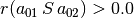), but not a03 (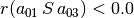). In order to comprehend the characteristic values shown in the relation table above, we may furthermore have a look at the pairwise multiple criteria comparison between alternatives a01 and a02.
1 2 3 4 5 6 7 8 9 10 11 12 13 14 | >>> odg.showPairwiseComparison('a01','a02')
*------------ pairwise comparison ----*
Comparing actions : (a01, a02)
crit. wght. g(x) g(y) diff | ind p concord |
------------------------------- ---------------------------------
g01 3.00 9.56 48.84 -39.28 | 10.00 20.00 -3.00 |
g02 3.00 90.94 11.79 +79.15 | 10.00 20.00 +3.00 |
g03 6.00 97.79 46.36 +51.43 | 10.00 20.00 +6.00 |
g04 5.00 40.53 43.61 -3.08 | 10.00 20.00 +5.00 |
g05 3.00 33.04 40.67 -7.63 | 10.00 20.00 +3.00 |
g06 7.00 47.57 19.00 +28.57 | 10.00 20.00 +7.00 |
g07 10.00 41.21 63.95 -22.74 | 10.00 20.00 -10.00 |
-----------------------------------------------------------------
Valuation in range: -37.00 to +37.00; global concordance: +11.00
|
The outranking valuation characteristic appears as majority margin resulting from the difference of the weights of the criteria in favor of the statement that alternative a01 is at least well performing as alternative a02. No considerable performance difference being observed, no veto or counter-veto situation is triggered in this pairwise comparison. Such a case is, however, observed for instance when we pairwise compare the performances of alternatives a03 and a02.
1 2 3 4 5 6 7 8 9 10 11 12 13 14 | >>> odg.showPairwiseComparison('a03','a02')
*------------ pairwise comparison ----*
Comparing actions : (a03, a02)
crit. wght. g(x) g(y) diff | ind p concord | v veto/counter-veto
-----------------------------------------------------------------------------------
g01 3.00 21.73 48.84 -27.11 | 10.00 20.00 -3.00 |
g02 3.00 96.56 11.79 +84.77 | 10.00 20.00 +3.00 | 80.00 +1.00
g03 6.00 83.35 46.36 +36.99 | 10.00 20.00 +6.00 |
g04 5.00 53.22 43.61 +9.61 | 10.00 20.00 +5.00 |
g05 3.00 96.42 40.67 +55.75 | 10.00 20.00 +3.00 |
g06 7.00 92.65 19.00 +73.65 | 10.00 20.00 +7.00 |
g07 10.00 87.70 63.95 +23.75 | 10.00 20.00 +10.00 |
-----------------------------------------------------------------------------------
Valuation in range: -37.00 to +37.00; global concordance: +31.00
|
This time, we observe a considerable out-performance of a03 against a02 on criterion g02 (see second row in the relation table above). We therefore notice a positively polarized certainly confirmed outranking situation in this case [BIS-2013].
Recoding the valuation¶
All outranking digraphs, being of root type digraphs.Digraph, inherit the methods available under this class. The characteristic valuation domain of an outranking digraph may be recoded with the digraphs.Digraph.recodeValutaion() method below to the integer range [-37,+37], i.e. plus or minus the global significance of the family of criteria considered in this example instance.
1 2 3 4 5 6 7 8 9 10 11 12 13 14 15 16 | >>> odg.recodeValuation(-37,+37)
>>> odg.valuationdomain['hasIntegerValuation'] = True
>>> Digraph.showRelationTable(odg)
* ---- Relation Table -----
* ---- Relation Table -----
S | 'a01' 'a02' 'a03' 'a04' 'a05' 'a06' 'a07'
-----|------------------------------------------------------------
'a01' | 0 +11 -11 +5 +17 +14 +17
'a02' | +5 0 -37 +13 +5 +15 -14
'a03' | +31 +37 0 +34 +31 +31 +26
'a04' | +9 +18 -21 0 +9 +19 +9
'a05' | +19 +37 -26 +27 0 +19 +12
'a06' | +6 +27 -19 +13 +12 0 +14
'a07' | +25 +17 -9 +9 +9 +17 0
Valuation domain: {'hasIntegerValuation': True, 'min': Decimal('-37'),
'max': Decimal('37'), 'med': Decimal('0.000')}
|
Note
Notice that the reflexive self comparison characteristic 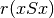 is set by default to the median indeterminate valuation value 0; the reflexive terms of binary relation being generally ignored in most of the Digraph3 resources.
The strict outranking digraph¶
From the theory (see [BIS-2013], [ADT-L7] ) we know that a bipolar-valued outranking digraph is weakly complete, i.e. if then 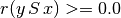 . From this property follows that a bipolar-valued outranking relation verifies the coduality principle: the dual (strict negation - 14) of the converse (inverse ~) of the outranking relation corresponds to its strict outranking part. We may visualize the codual (strict) outranking digraph with a graphviz drawing 1.
1 2 3 4 5 | >>> cdodg = -(~odg)
>>> cdodg.exportGraphViz('codualOdg')
*---- exporting a dot file for GraphViz tools ---------*
Exporting to codualOdg.dot
dot -Grankdir=BT -Tpng codualOdg.dot -o codualOdg.png
|
{kind=link}
It becomes readily clear now from the picture above that alternative a03 strictly outranks in fact all the other alternatives. Hence, a03 appears as Condorcet winner and may be recommended as best decision action in this illustrative preference modelling exercise.
XMCDA 2.0¶
As with all Digraph instances, it is possible to store permanently a copy of the outranking digraph odg. As its outranking relation is automatically generated by the outrankingDigraphs.BipolarOutrankingDigraph class constructor on the basis of a given performance tableau, it is sufficient to save only the latter. For this purpose we are using the XMCDA 2.00 XML encoding scheme of MCDA data, as provided by the Decision Deck Project (see https://www.decision-deck.org/).
1 2 3 | >>> PerformanceTableau.saveXMCDA2(odg,'tutorialPerfTab')
*----- saving performance tableau in XMCDA 2.0 format -------------*
File: tutorialPerfTab.xml saved !
|
The resulting XML file may be visualized in a browser window (other than Chrome or Chromium) with a corresponding XMCDA style sheet (see here). Hitting Ctrl U in Firefox will open a browser window showing the underlying xml encoded raw text. It is thus possible to easily edit and update as needed a given performance tableau instance. Re-instantiating again a corresponding updated odg object goes like follow.
1 2 3 4 5 6 7 8 9 10 11 12 13 | >>> pt = XMCDA2PerformanceTableau('tutorialPerfTab')
>>> odg = BipolarOutrankingDigraph(pt)
>>> odg.showRelationTable()
* ---- Relation Table -----
S | 'a01' 'a02' 'a03' 'a04' 'a05' 'a06' 'a07'
------|------------------------------------------------------------
'a01' | +0.00 +29.73 -29.73 +13.51 +48.65 +40.54 +48.65
'a02' | +13.51 +0.00 -100.00 +37.84 +13.51 +43.24 -37.84
'a03' | +83.78 +100.00 +0.00 +91.89 +83.78 +83.78 +70.27
'a04' | +24.32 +48.65 -56.76 +0.00 +24.32 +51.35 +24.32
'a05' | +51.35 +100.00 -70.27 +72.97 +0.00 +51.35 +32.43
'a06' | +16.22 +72.97 -51.35 +35.14 +32.43 +0.00 +37.84
'a07' | +67.57 +45.95 -24.32 +27.03 +27.03 +45.95 +0.00
|
We recover the original bipolar-valued outranking characteristics, and we may restart again the preference modelling process.
Many more tools for exploiting bipolar-valued outranking digraphs are available in the Digraph3 resources (see the technical documentation of the outrankingDigraphs module and the perfTabs module).
Back to Content Table
Generating random performance tableaux¶
Introduction¶
The randomPerfTabs module provides several constructors for random performance tableaux generators of different kind, mainly for the purpose of testing implemented methods and tools presented and discussed in the Algorithmic Decision Theory course at the University of Luxembourg. This tutorial concerns the four most useful generators.
1. The simplest model, called RandomPerformanceTableau, generates a set of n decision actions, a set of m real-valued performance criteria, ranging by default from 0.0 to 100.0, associated with default discrimination thresholds: 2.5 (ind.), 5.0 (pref.) and 60.0 (veto). The generated performances are Beta(2.2) distributed on each measurement scale.
2. One of the most useful random generator, called RandomCBPerformanceTableau, proposes two decision objectives, named Costs (to be minimized) respectively Benefits (to be maximized) model; its purpose being to generate more or less contradictory performances on these two, usually opposed, objectives. Low costs will randomly be coupled with low benefits, whereas high costs will randomly be coupled with high benefits.
3. Many multiple criteria decision problems concern three decision objectives which take into account economical, societal as well as environmental aspects. For this type of performance tableau model, we provide a specific generator, called Random3ObjectivesPerformanceTableau.
4. In order to study aggregation of linear orders, we provide a model called RandomRankPerformanceTableau which provides linearly ordered performances without ties on multiple criteria for a given number of decision actions.
Generating standard random performance tableaux¶
The randomPerfTabs.RandomPerformanceTableau class, the simplest of the kind, specializes the generic prefTabs.PerformanceTableau class, and takes the following parameters.
numberOfActions := nbr of decision actions.
numberOfCriteria := number performance criteria.
weightDistribution := ‘random’ (default) | ‘fixed’ | ‘equisignificant’:
If ‘random’, weights are uniformly selected randomlyfrom the given weight scale;If ‘fixed’, the weightScale must provided a corresponding weightsdistribution;If ‘equisignificant’, all criterion weights are put to unity.weightScale := [Min,Max] (default =(1,numberOfCriteria).
IntegerWeights := True (default) | False (normalized to proportions of 1.0).
commonScale := [a,b]; common performance measuring scales (default = [0.0,100.0])
commonThresholds := [(q0,q1),(p0,p1),(v0,v1)]; common indifference(q), preference (p) and considerable performance difference discrimination thresholds. For each threshold type x in {q,p,v}, the float x0 value represents a constant percentage of the common scale and the float x1 value a proportional value of the actual performance measure. Default values are [(2.5.0,0.0),(5.0,0.0),(60.0,0,0)].
commonMode := common random distribution of random performance measurements (default = (‘beta’,None,(2,2)) ):
(‘uniform’,None,None), uniformly distributed float values on the given common scales’ range [Min,Max].(‘normal’,*mu*,*sigma*), truncated Gaussian distribution, by default mu = (b-a)/2 and sigma = (b-a)/4.(‘triangular’,*mode*,*repartition*), generalized triangular distribution with a probability repartition parameter specifying the probability mass accumulated until the mode value. By default, mode = (b-a)/2 and repartition = 0.5.(‘beta’,None,(alpha,beta)), a beta generator with default alpha=2 and beta=2 parameters.valueDigits := <integer>, precision of performance measurements (2 decimal digits by default).
missingDataProbability := 0 <= float <= 1.0 ; probability of missing performance evaluation on a criterion for an alternative (default 0.025).
Code example.
1 2 3 4 5 6 7 8 9 10 11 12 13 14 15 16 17 18 19 20 21 22 23 24 25 26 27 28 29 | >>> from randomPerfTabs import RandomPerformanceTableau
>>> t = RandomPerformanceTableau(numberOfActions=21,numberOfCriteria=13,seed=100)
>>> t.actions
{'a01': {'comment': 'RandomPerformanceTableau() generated.',
'name': 'random decision action'},
'a02': { ... },
...
}
>>> t.criteria
{'g01': {'thresholds': {'ind' : (Decimal('10.0'), Decimal('0.0')),
'veto': (Decimal('80.0'), Decimal('0.0')),
'pref': (Decimal('20.0'), Decimal('0.0'))},
'scale': [0.0, 100.0],
'weight': Decimal('1'),
'name': 'digraphs.RandomPerformanceTableau() instance',
'comment': 'Arguments: ; weightDistribution=random;
weightScale=(1, 1); commonMode=None'},
'g02': { ... },
...
}
>>> t.evaluation
{'g01': {'a01': Decimal('15.17'),
'a02': Decimal('44.51'),
'a03': Decimal('-999'), # missing evaluation
...
},
...
}
>>> t.showHTMLPerformanceTableau()
|
{kind=link}
Note
Missing (NA) evaluation are registered in a performance tableau as Decimal(‘-999’) value (see Listing 18 Line 24). Best and worst performance on each criterion are marked in light green, respectively in light red.
Generating random Cost-Benefit performance tableaux¶
We provide the randomPerfTabs.RandomCBPerformanceTableau class for generating random Cost versus Benefit organized performance tableaux following the directives below:
We distinguish three types of decision actions: cheap, neutral and expensive ones with an equal proportion of 1/3. We also distinguish two types of weighted criteria: cost criteria to be minimized, and benefit criteria to be maximized; in the proportions 1/3 respectively 2/3.
Random performances on each type of criteria are drawn, either from an ordinal scale [0;10], or from a cardinal scale [0.0;100.0], following a parametric triangular law of mode: 30% performance for cheap, 50% for neutral, and 70% performance for expensive decision actions, with constant probability repartition 0.5 on each side of the respective mode.
Cost criteria use mostly cardinal scales (3/4), whereas benefit criteria use mostly ordinal scales (2/3).
The sum of weights of the cost criteria by default equals the sum weights of the benefit criteria: weighDistribution = ‘equiobjectives’.
On cardinal criteria, both of cost or of benefit type, we observe following constant preference discrimination quantiles: 5% indifferent situations, 90% strict preference situations, and 5% veto situation.
- Parameters:
If numberOfActions == None, a uniform random number between 10 and 31 of cheap, neutral or advantageous actions (equal 1/3 probability each type) actions is instantiated
If numberOfCriteria == None, a uniform random number between 5 and 21 of cost or benefit criteria (1/3 respectively 2/3 probability) is instantiated
weightDistribution = {‘equiobjectives’|’fixed’|’random’|’equisignificant’ (default = ‘equisignificant’)}
default weightScale for ‘random’ weightDistribution is 1 - numberOfCriteria
All cardinal criteria are evaluated with decimals between 0.0 and 100.0 whereas ordinal criteria are evaluated with integers between 0 and 10.
commonThresholds is obsolete. Preference discrimination is specified as percentiles of concerned performance differences (see below).
commonPercentiles = {‘ind’:5, ‘pref’:10, [‘weakveto’:90,] ‘veto’:95} are expressed in percents (reversed for vetoes) and only concern cardinal criteria.
Warning
Minimal number of decision actions required is 3 !
Example Python session
1 2 3 4 5 6 7 8 9 10 11 12 13 14 15 16 17 18 19 20 21 22 23 24 25 26 27 28 29 30 31 | >>> from randomPerfTabs import RandomCBPerformanceTableau
>>> t = RandomCBPerformanceTableau(
... numberOfActions=7,
... numberOfCriteria=5,
... weightDistribution='equiobjectives',
... commonPercentiles={'ind':5,'pref':10,'veto':95},
... seed=100)
>>> t.showActions()
*----- show decision action --------------*
key: a1
short name: a1
name: random cheap decision action
key: a2
short name: a2
name: random neutral decision action
...
key: a7
short name: a7
name: random advantageous decision action
>>> t.showCriteria()
*---- criteria -----*
g1 'random ordinal benefit criterion'
Scale = (0, 10)
Weight = 0.167
g2 'random cardinal cost criterion'
Scale = (0.0, 100.0)
Weight = 0.250
Threshold ind : 1.76 + 0.00x ; percentile: 0.095
Threshold pref : 2.16 + 0.00x ; percentile: 0.143
Threshold veto : 73.19 + 0.00x ; percentile: 0.952
...
|
In the example above, we may notice the three types of decision actions (Listing 19 Lines 10-19), as well as the two types (Lines 22-25) of criteria with either an ordinal or a cardinal performance measuring scale. In the latter case, by default about 5% of the random performance differences will be below the indifference and 10% below the preference discriminating threshold. About 5% will be considered as considerably large. More statistics about the generated performances is available as follows.
1 2 3 4 5 6 7 8 9 10 11 12 13 14 15 16 17 18 19 20 21 22 23 24 25 26 27 28 29 30 31 | >>> t.showStatistics()
*-------- Performance tableau summary statistics -------*
Instance name : randomCBperftab
#Actions : 7
#Criteria : 5
*Statistics per Criterion*
Criterion name : g1
Criterion weight : 2
criterion scale : 0.00 - 10.00
mean evaluation : 5.14
standard deviation : 2.64
maximal evaluation : 8.00
quantile Q3 (x_75) : 8.00
median evaluation : 6.50
quantile Q1 (x_25) : 3.50
minimal evaluation : 1.00
mean absolute difference : 2.94
standard difference deviation : 3.74
Criterion name : g2
Criterion weight : 3
criterion scale : -100.00 - 0.00
mean evaluation : -49.32
standard deviation : 27.59
maximal evaluation : 0.00
quantile Q3 (x_75) : -27.51
median evaluation : -35.98
quantile Q1 (x_25) : -54.02
minimal evaluation : -91.87
mean absolute difference : 28.72
standard difference deviation : 39.02
...
|
A (potentially ranked) colored heatmap with 5 color levels is also provided.
>>> t.showHTMLPerformanceHeatmap(colorLevels=5,Ranked=False)

Fig. 17 Unranked heatmap of a random Cost-Benefit performance tableau¶
Such a performance tableau may be stored and re-accessed in the XMCDA2 encoded format.
1 2 3 4 5 | >>> t.saveXMCDA2('temp')
*----- saving performance tableau in XMCDA 2.0 format -------------*
File: temp.xml saved !
>>> from perfTabs import XMCDA2PerformanceTableau
>>> t = XMCDA2PerformanceTableau('temp')
|
If needed for instance in an R session, a CSV version of the performance tableau may be created as follows.
1 2 | >>> t.saveCSV('temp')
* --- Storing performance tableau in CSV format in file temp.csv
|
1 2 3 4 5 6 7 8 9 | ...$ less temp.csv
"actions","g1","g2","g3","g4","g5"
"a1",1.00,-17.92,-33.99,26.68,3.00
"a2",8.00,-30.71,-77.77,66.35,6.00
"a3",8.00,-41.65,-69.84,53.43,8.00
"a4",2.00,-39.49,-16.99,18.62,2.00
"a5",6.00,-91.87,-74.85,83.09,7.00
"a6",7.00,-32.47,-24.91,79.24,9.00
"a7",4.00,-91.11,-7.44,48.22,7.00
|
Back to Content Table
Generating random three objectives performance tableaux¶
We provide the randomPerfTabs.Random3ObjectivesPerformanceTableau class for generating random performance tableaux concerning three preferential decision objectives which take respectively into account economical, societal as well as environmental aspects.
Each decision action is qualified randomly as performing weak (-), fair (~) or good (+) on each of the three objectives.
Generator directives are the following:
numberOfActions = 20 (default),
numberOfCriteria = 13 (default),
weightDistribution = ‘equiobjectives’ (default) | ‘random’ | ‘equisignificant’,
weightScale = (1,numberOfCriteria): only used when random criterion weights are requested,
integerWeights = True (default): False gives normalized rational weights,
commonScale = (0.0,100.0),
commonThresholds = [(5.0,0.0),(10.0,0.0),(60.0,0.0)]: Performance discrimination thresholds may be set for ‘ind’, ‘pref’ and ‘veto’,
commonMode = [‘triangular’,’variable’,0.5]: random number generators of various other types (‘uniform’,’beta’) are available,
valueDigits = 2 (default): evaluations are encoded as Decimals,
missingDataProbability = 0.05 (default): random insertion of missing values with given probability,
seed= None.
Note
If the mode of the triangular distribution is set to ‘variable’, three modes at 0.3 (-), 0.5 (~), respectively 0.7 (+) of the common scale span are set at random for each coalition and action.
Warning
Minimal number of decision actions required is 3 !
Example Python session
1 2 3 4 5 6 7 8 9 10 11 12 13 14 15 16 17 18 19 20 21 22 23 24 25 26 27 | >>> from randomPerfTabs import Random3ObjectivesPerformanceTableau
>>> t = Random3ObjectivesPerformanceTableau(
... numberOfActions=31,
... numberOfCriteria=13,
... weightDistribution='equiobjectives',
... seed=120)
>>> t.showObjectives()
*------ show objectives -------"
Eco: Economical aspect
g04 criterion of objective Eco 20
g05 criterion of objective Eco 20
g08 criterion of objective Eco 20
g11 criterion of objective Eco 20
Total weight: 80.00 (4 criteria)
Soc: Societal aspect
g06 criterion of objective Soc 16
g07 criterion of objective Soc 16
g09 criterion of objective Soc 16
g10 criterion of objective Soc 16
g13 criterion of objective Soc 16
Total weight: 80.00 (5 criteria)
Env: Environmental aspect
g01 criterion of objective Env 20
g02 criterion of objective Env 20
g03 criterion of objective Env 20
g12 criterion of objective Env 20
Total weight: 80.00 (4 criteria)
|
In Listing 20 above, we notice that 5 equisignificant criteria (g06, g07, g09, g10, g13) evaluate for instance the performance of the decision actions from the societal point of view (Lines 16-21). 4 equisignificant criteria do the same from the economical (Lines 10-14), respectively the environmental point of view (Lines 21-27). The equiobjectives directive results hence in a balanced total weight (80.00) for each decision objective.
1 2 3 4 5 6 7 8 9 10 11 12 13 14 | >>> t.showActions()
key: a01
name: random decision action Eco+ Soc- Env+
profile: {'Eco': 'good', 'Soc': 'weak', 'Env': 'good'}
key: a02
...
key: a26
name: random decision action Eco+ Soc+ Env-
profile: {'Eco': 'good', 'Soc': 'good', 'Env': 'weak'}
...
key: a30
name: random decision action Eco- Soc- Env-
profile: {'Eco': 'weak', 'Soc': 'weak', 'Env': 'weak'}
...
|
Variable triangular modes (0.3, 0.5 or 0.7 of the span of the measure scale) for each objective result in different performance status for each decision action with respect to the three objectives. Action a01 , for instance, will probably show good performances wrt the economical and environmental aspects, and weak performances wrt the societal aspect.
For testing purposes we provide a special perfTabs.PartialPerformanceTableau class for extracting a partial performance tableau from a given tableau instance. In the example blow, we construct the partial performance tableaux corresponding to each on of the three decision objectives.
1 2 3 4 5 6 7 | >>> from perfTabs import PartialPerformanceTableau
>>> teco = PartialPerformanceTableau(t,criteriaSubset=\
... t.objectives['Eco']['criteria'])
>>> tsoc = PartialPerformanceTableau(t,criteriaSubset=\
... t.objectives['Soc']['criteria'])
>>> tenv = PartialPerformanceTableau(t,criteriaSubset=\
... t.objectives['Env']['criteria'])
|
One may thus compute a partial bipolar-valued outranking digraph for each individual objective.
1 2 3 4 | >>> from outrankingDigraphs import BipolarOutrankingDigraph
>>> geco = BipolarOutrankingDigraph(teco)
>>> gsoc = BipolarOutrankingDigraph(tsoc)
>>> genv = BipolarOutrankingDigraph(tenv)
|
The three partial digraphs: geco, gsoc and genv, hence model the preferences represented in each one of the partial performance tableaux. And, we may aggregate these three outranking digraphs with an epistemic fusion operator.
1 2 3 4 5 6 7 8 9 10 11 12 13 14 15 16 17 18 19 20 21 22 23 24 25 26 27 28 | >>> from digraphs import FusionLDigraph
>>> gfus = FusionLDigraph([geco,gsoc,genv])
>>> gfus.strongComponents()
{frozenset({'a30'}),
frozenset({'a10', 'a03', 'a19', 'a08', 'a07', 'a04', 'a21', 'a20',
'a13', 'a23', 'a16', 'a12', 'a24', 'a02', 'a31', 'a29',
'a05', 'a09', 'a28', 'a25', 'a17', 'a14', 'a15', 'a06',
'a01', 'a27', 'a11', 'a18', 'a22'}),
frozenset({'a26'})}
>>> from digraphs import StrongComponentsCollapsedDigraph
>>> scc = StrongComponentsCollapsedDigraph(gfus)
>>> scc.showActions()
*----- show digraphs actions --------------*
key: frozenset({'a30'})
short name: Scc_1
name: _a30_
comment: collapsed strong component
key: frozenset({'a10', 'a03', 'a19', 'a08', 'a07', 'a04', 'a21', 'a20', 'a13',
'a23', 'a16', 'a12', 'a24', 'a02', 'a31', 'a29', 'a05', 'a09', 'a28', 'a25',
'a17', 'a14', 'a15', 'a06', 'a01', 'a27', 'a11', 'a18', 'a22'})
short name: Scc_2
name: _a10_a03_a19_a08_a07_a04_a21_a20_a13_a23_a16_a12_a24_a02_a31_\
a29_a05_a09_a28_a25_a17_a14_a15_a06_a01_a27_a11_a18_a22_
comment: collapsed strong component
key: frozenset({'a26'})
short name: Scc_3
name: _a26_
comment: collapsed strong component
|
A graphviz drawing illustrates the apparent preferential links between the strong components.
1 2 3 4 | >>> scc.exportGraphViz('scFusionObjectives')
*---- exporting a dot file for GraphViz tools ---------*
Exporting to scFusionObjectives.dot
dot -Grankdir=BT -Tpng scFusionObjectives.dot -o scFusionObjectives.png
|
{kind=link}
Decision action a26 (Eco+ Soc+ Env-) appears dominating the other decision alternatives, whereas decision action a30 (Eco- Soc- Env-) appears to be dominated by all the others.
Generating random linearly ranked performance tableaux¶
Finally, we provide the randomPerfTabs.RandomRankPerformanceTableau class for generating multiple criteria ranked performance tableaux, i.e. on each criterion, all decision action’s evaluations appear linearly ordered without ties.
This type of random performance tableau is matching the votingProfiles.RandomLinearVotingProfile class provided by the votingProfiles module.
- Parameters:
number of actions,
number of performance criteria,
weightDistribution := equisignificant | random (default, see above above)
weightScale := (1, 1 | numberOfCriteria (default when random))
integerWeights := Boolean (True = default)
commonThresholds (default) := {
‘ind’:(0,0),‘pref’:(1,0),‘veto’:(numberOfActions,0)} (default)
Back to Content Table
Ranking with multiple incommensurable criteria¶
The ranking problem¶
We need to rank without ties a set X of items (usually decision alternatives) that are evaluated on multiple incommensurable performance criteria; yet, for which we may know their pairwise bipolar-valued strict outranking characteristics, i.e.  for all x, y in X (see The strict outranking digraph and [BIS-2013]).
for all x, y in X (see The strict outranking digraph and [BIS-2013]).
Let us consider a didactic outranking digraph g generated from a random Cost-Benefit performance tableau concerning 9 decision alternatives evaluated on 13 performance criteria. We may compute the corresponding strict outranking digraph with a codual transform as follows.
1 2 3 4 5 6 7 8 9 10 11 12 13 14 15 16 17 18 | >>> from outrankingDigraphs import *
>>> t = RandomCBPerformanceTableau(numberOfActions=9,
... numberOfCriteria=13,seed=200)
>>> g = BipolarOutrankingDigraph(t,Normalized=True)
>>> gcd = ~(-g) # codual digraph
>>> gcd.showRelationTable(ReflexiveTerms=False)
* ---- Relation Table -----
r(>) | 'a1' 'a2' 'a3' 'a4' 'a5' 'a6' 'a7' 'a8' 'a9'
-----|------------------------------------------------------
'a1' | - 0.00 +0.10 -1.00 -0.13 -0.57 -0.23 +0.10 +0.00
'a2' | -1.00 - 0.00 +0.00 -0.37 -0.42 -0.28 -0.32 -0.12
'a3' | -0.10 0.00 - -0.17 -0.35 -0.30 -0.17 -0.17 +0.00
'a4' | 0.00 0.00 -0.42 - -0.40 -0.20 -0.60 -0.27 -0.30
'a5' | +0.13 +0.22 +0.10 +0.40 - +0.03 +0.40 -0.03 -0.07
'a6' | -0.07 -0.22 +0.20 +0.20 -0.37 - +0.10 -0.03 -0.07
'a7' | -0.20 +0.28 -0.03 -0.07 -0.40 -0.10 - +0.27 +1.00
'a8' | -0.10 -0.02 -0.23 -0.13 -0.37 +0.03 -0.27 - +0.03
'a9' | 0.00 +0.12 -1.00 -0.13 -0.03 -0.03 -1.00 -0.03 -
|
Some ranking rules will work on the associated Condorcet Digraph, i.e. the corresponding strict median cut polarised digraph.
1 2 3 4 5 6 7 8 9 10 11 12 13 14 15 | >>> ccd = PolarisedOutrankingDigraph(gcd,level=g.valuationdomain['med'],
... KeepValues=False,StrictCut=True)
>>> ccd.showRelationTable(ReflexiveTerms=False,IntegerValues=True)
*---- Relation Table -----
r(>)_med | 'a1' 'a2' 'a3' 'a4' 'a5' 'a6' 'a7' 'a8' 'a9'
---------|---------------------------------------------
'a1' | - 0 +1 -1 -1 -1 -1 +1 0
'a2' | -1 - +0 0 -1 -1 -1 -1 -1
'a3' | -1 0 - -1 -1 -1 -1 -1 0
'a4' | 0 0 -1 - -1 -1 -1 -1 -1
'a5' | +1 +1 +1 +1 - +1 +1 -1 -1
'a6' | -1 -1 +1 +1 -1 - +1 -1 -1
'a7' | -1 +1 -1 -1 -1 -1 - +1 +1
'a8' | -1 -1 -1 -1 -1 +1 -1 - +1
'a9' | 0 +1 -1 -1 -1 -1 -1 -1 -
|
Unfortunately, such crisp median-cut Condorcet digraphs, associated with a given strict outranking digraph, present only exceptionally a linear ordering. Usually, pairwise majority comparisons do not render even a complete or, at least, a transitive partial order. There may even frequently appear cyclic outranking situations (see the tutorial on Computing the winner of an election).
To estimate how difficult this ranking problem here may be, we can have a look at the corresponding strict outranking digraph graphviz drawing (1).
1 2 3 4 | >>> gcd.exportGraphViz('rankingTutorial')
*---- exporting a dot file for GraphViz tools ---------*
Exporting to rankingTutorial.dot
dot -Grankdir=BT -Tpng rankingTutorial.dot -o rankingTutorial.png
|
{kind=link}
The shown strict outranking digraph is apparently not transitive: for instance, alternative a8 outranks alternative a6 and alternative a6 outranks a4, however a8 does not outrank a4 (see Fig. 19). We may compute the transitivity degree of the outranking digraph, i.e. the ratio of the number of outranking arcs over the number of arcs of the transitive closure of the digraph gcd.
>>> gcd.computeTransitivityDegree(Comments=True)
Transitivity degree of graph
<converse-dual_rel_randomCBperftab>: 0.46
The strict outranking relation is hence very far from being transitive; a serious problem when a linear ordering of the decision alternatives is looked for. Let us furthermore see if there are any cyclic outrankings.
1 2 3 4 5 | >>> gcd.computeChordlessCircuits()
>>> gcd.showChordlessCircuits()
1 circuit(s).
*---- Chordless circuits ----*
1: ['a6', 'a7', 'a8'] , credibility : 0.033
|
There is one chordless circuit detected in the given strict outranking digraph gcd, namely a6 outranks a7, the latter outranks a8, and a8 outranks again a6 (see Fig. 19). Any potential linear ordering of these three alternatives will, in fact, always contradict somehow the given outranking relation.
Several heuristic ranking rules have been proposed for constructing a linear ordering which is closest in some specific sense to a given outranking relation.
The Digraph3 resources provide some of the most common of these ranking rules, like Copeland’s, Kemeny’s, Slater’s, Kohler’s, Arrow-Raynaud’s or Tideman’s ranking rule.
The Copeland ranking¶
Copeland’s rule, the most intuitive one as it works well for any strict outranking relation which models in fact a linear order, works on the median cut strict outranking digraph ccd. The rule computes for each alternative a score resulting from the sum of the differences between the crisp strict outranking characteristics 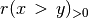 and the crisp strict outranked characteristics 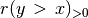 for all pairs of alternatives where y is different from x. The alternatives are ranked in decreasing order of these Copeland scores; ties, the case given, being resolved by a lexicographical rule.
1 2 3 4 5 6 7 8 9 10 11 12 13 14 | >>> from linearOrders import CopelandOrder
>>> cop = CopelandOrder(g,Comments=True)
Copeland decreasing scores
a5 : 12
a1 : 2
a6 : 2
a7 : 2
a8 : 0
a4 : -3
a9 : -3
a3 : -5
a2 : -7
Copeland Ranking:
['a5', 'a1', 'a6', 'a7', 'a8', 'a4', 'a9', 'a3', 'a2']
|
Alternative a5 obtains the best Copeland score (+12), followed by alternatives a1, a6 and a7 with same score (+2); following the lexicographic rule, a1 is hence ranked before a6 and a6 before a7. Same situation is observed for a4 and a9 with a score of -3 (see Listing 23 Lines 4-12).
Copeland’s ranking rule appears in fact invariant under the codual transform and renders a same linear order indifferently from digraphs g or gcd . The resulting ranking (see Listing 23 Line 14) is rather correlated (+0.463) with the given pairwise outranking relation in the ordinal Kendall sense (see Listing 24).
1 2 3 4 5 6 | >>> corr = g.computeRankingCorrelation(cop.copelandRanking)
>>> g.showCorrelation(corr)
Correlation indexes:
Crisp ordinal correlation : +0.463
Valued equivalalence : +0.107
Epistemic determination : 0.230
|
With an epistemic determination level of 0.230, the extended Kendall tau index (see [BIS-2012]) is in fact computed on 61.5% (100.0 x (1.0 + 0.23)/2) of the pairwise strict outranking comparisons. Furthermore, the bipolar-valued relational equivalence characteristics between the strict outranking relation and the Copeland ranking equals +0.107, i.e. a majority of 55.35% of the criteria significance supports the relational equivalence between the given strict outranking relation and the corresponding Copeland ranking.
The Copeland scores deliver actually only a unique weak ranking, i.e. a ranking with potential ties. This weak ranking may be constructed with the transitiveDigraphs.WeakCopelandOrder class.
1 2 3 4 5 6 7 8 9 10 | >>> from transitiveDigraphs import WeakCopelandOrder
>>> wcop = WeakCopelandOrder(g)
>>> wcop.showRankingByChoosing()
Ranking by Choosing and Rejecting
1st ranked ['a5'] (1.00)
2nd ranked ['a1', 'a6', 'a7'] (1.00)
3rd ranked ['a8'] (1.00)
3rd last ranked ['a4', 'a9'] (1.00)
2nd last ranked ['a3'] (1.00)
1st last ranked ['a2'] (1.00)
|
We recover in Listing 25 above, the ranking with ties delivered by the Copeland scores (see Listing 23). The bracketed numbers indicate that this weak ranking is certainly valid. We may draw its corresponding Hasse diagram (see Listing 26).
1 2 3 4 5 6 7 8 9 10 11 | >>> wcop.exportGraphViz(fileName='weakCopelandRanking')
*---- exporting a dot file for GraphViz tools ---------*
Exporting to weakCopelandRanking.dot
0 { rank = same; a5; }
1 { rank = same; a1; a7; a6; }
2 { rank = same; a8; }
3 { rank = same; a4; a9}
4 { rank = same; a3; }
5 { rank = same; a2; }
dot -Grankdir=TB -Tpng weakCopelandRanking.dot\
-o weakCopelandRanking.png
|

Fig. 20 A weak Copeland ranking¶
Let us now consider a similar ranking rule, but working directly on the bipolar-valued outranking digraph.
The NetFlows ranking¶
The valued version of the Copeland rule, called NetFlows rule, computes for each alternative x a net flow score, i.e. the sum of the differences between the strict outranking characteristics 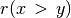 and the strict outranked characteristics  for all pairs of alternatives where y is different from x.
for all pairs of alternatives where y is different from x.
1 2 3 4 5 6 7 8 9 10 11 12 13 14 15 16 | >>> from linearOrders import NetFlowsOrder
>>> nf = NetFlowsOrder(gcd,Comments=True)
Net Flows :
a5 : 3.600
a7 : 2.800
a6 : 1.300
a3 : 0.033
a1 : -0.400
a8 : -0.567
a4 : -1.283
a9 : -2.600
a2 : -2.883
NetFlows Ranking:
['a5', 'a7', 'a6', 'a3', 'a1', 'a8', 'a4', 'a9', 'a2']
>>> cop.copelandRanking
['a5', 'a1', 'a6', 'a7', 'a8', 'a4', 'a9', 'a3', 'a2']
|
It is worthwhile noticing again, that similar to the Copeland ranking rule seen before, the NetFlows ranking rule is also invariant under the codual transform and delivers the same ranking result indifferently from digraphs g or gcd (see Listing 27 Line 14).
In our example here, the NetFlows scores deliver a ranking without ties which is rather different from the one delivered by Copeland’s rule (see Listing 27 Line 16). It may happen, however, that we obtain, as with the Copeland scores above, only a ranking with ties, which may then be resolved again by following a lexicographic rule. In such cases, it is possible to construct again a weak ranking with the corresponding transitiveDigraphs.WeakNetFlowsOrder class.
The NetFlows ranking result appears to be slightly better correlated (+0.638) with the given outranking relation than its crisp cousin, the Copeland ranking (see Listing 24 Lines 4-6).
1 2 3 4 5 6 | >>> corr = gcd.computeOrdinalCorrelation(nf)
>>> gcd.showCorrelation(corr)
Correlation indexes:
Extended Kendall tau : +0.638
Epistemic determination : 0.230
Bipolar-valued equivalence : +0.147
|
Indeed, the extended Kendall tau index of +0.638 leads to a bipolar-valued relational equivalence characteristics of +0.147, i.e. a majority of 57.35% of the criteria significance supports the relational equivalence between the given outranking digraphs g or gcd and the corresponding NetFlows ranking. This lesser ranking performance of the Copeland rule stems in this example essentially from the weakness of the actual ranking result and our subsequent arbitrary lexicographic resolution of the many ties given by the Copeland scores (see Fig. 20).
To appreciate now the absolute quality of both the Copeland and the NetFlows rankings, it is useful to consider Kemeny’s and Slater’s optimal ranking rules.
Kemeny rankings¶
A Kemeny ranking is a linear order which is closest, in the sense of the ordinal Kendall distance (see [BIS-2012]), to the given valued outranking digraphs g or gcd. The rule is indeed again invariant under the codual transform. As Kemeny’s rule proceeds by inspecting all possible permutations of the decision alternatives, it is unfortunately only computable for tiny outranking digraphs and the class constructor assumes by default that the order of the digraph does not exceed 7 (7! = 5040 permutations to inspect, see Listing 29 Line 2).
1 2 3 4 5 6 7 8 9 10 | >>> from linearOrders import KemenyOrder
>>> ke = KemenyOrder(g,orderLimit=9) # default orderLimit is 7
>>> ke.showRanking()
['a5', 'a6', 'a7', 'a3', 'a8', 'a9', 'a4', 'a1', 'a2']
>>> corr = g.computeOrdinalCorrelation(ke)
>>> g.showCorrelation(corr)
Correlation indexes:
Extended Kendall tau : +0.779
Epistemic determination : 0.230
Bipolar-valued equivalence : +0.179
|
So, +0.779 represents the highest possible ordinal correlation (fitness) any potential ranking can achieve with the given pairwise outranking digraph (see Listing 29 Lines 7-10).
A Kemeny ranking may not be unique, and the first one discovered in a brute permutation trying computation, is retained. In our example here, we obtain in fact two optimal Kemeny rankings with a same maximal Kemeny index of 12.967 .
1 2 3 4 5 | >>> ke.maximalRankings
[['a5', 'a6', 'a7', 'a3', 'a8', 'a9', 'a4', 'a1', 'a2'],
['a5', 'a6', 'a7', 'a3', 'a9', 'a4', 'a1', 'a8', 'a2']]
>>> ke.maxKemenyIndex
Decimal('12.9166667')
|
We may visualize the partial order defined by the epistemic disjunction of both optimal Kemeny rankings by using the transitiveDigraphs.RankingsFusion class as follows.
1 2 3 4 5 6 7 8 9 10 11 12 13 14 | >>> from transitiveDigraphs import RankingsFusion
>>> wke = RankingsFusion(ke,ke.maximalRankings)
>>> wke.exportGraphViz(fileName='tutorialKemeny')
*---- exporting a dot file for GraphViz tools ---------*
Exporting to tutorialKemeny.dot
0 { rank = same; a5; }
1 { rank = same; a6; }
2 { rank = same; a7; }
3 { rank = same; a3; }
4 { rank = same; a9; a8; }
5 { rank = same; a4; }
6 { rank = same; a1; }
7 { rank = same; a2; }
dot -Grankdir=TB -Tpng tutorialKemeny.dot -o tutorialKemeny.png
|

Fig. 21 Epistemic disjunction of optimal Kemeny rankings¶
It is interesting to notice in Fig. 21 and Listing 30, that both Kemeny rankings only differ in their respective positioning of alternative a8; either before or after alternatives a9, a4 and a1.
Slater rankings¶
The Slater ranking rule is identical to Kemeny’s, but it is working, instead, on the median cut polarised digraph. Slater’s ranking rule is also invariant under the codual transform and delivers again indifferently on g or gcd the following results.
1 2 3 4 5 6 7 8 9 10 11 12 13 | >>> from linearOrders import SlaterOrder
>>> sl = SlaterOrder(gcd,orderLimit=9)
# sl = KemenyOrder(ccd,orderLimit=9)
>>> sl.slaterRanking
['a5', 'a6', 'a4', 'a1', 'a3', 'a7', 'a8', 'a9', 'a2']
>>> corr = gcd.computeOrderCorrelation(sl.slaterRanking)
>>> sl.showCorrelation(corr)
Correlation indexes:
Extended Kendall tau : +0.676
Epistemic determination : 0.230
Bipolar-valued equivalence : +0.156
>>> len(sl.maximalRankings)
7
|
We notice in Listing 32 Line 7 that the first Slater ranking is a rather good fit (+0.676), slightly better apparently than the NetFlows ranking result (+638). However, there are in fact 7 such potentially optimal Slater rankings (see Listing 32 Line 11). The corresponding epistemic disjunction gives the following partial ordering.
1 2 3 4 5 6 7 8 9 10 11 12 | >>> slw = RankingsFusion(sl,sl.maximalRankings)
>>> slw.exportGraphViz(fileName='tutorialSlater')
*---- exporting a dot file for GraphViz tools ---------*
Exporting to tutorialSlater.dot
0 { rank = same; a5; }
1 { rank = same; a6; }
2 { rank = same; a7; a4; }
3 { rank = same; a1; }
4 { rank = same; a8; a3; }
5 { rank = same; a9; }
6 { rank = same; a2; }
dot -Grankdir=TB -Tpng tutorialSlater.dot -o tutorialSlater.png
|
{kind=link}
What precise ranking result should we hence adopt ? Kemeny’s and Slater’s ranking rules are furthermore computationally difficult problems and effective ranking results are only computable for tiny outranking digraphs (< 20 objects).
More efficient ranking heuristics, like the Copeland and the NetFlows rules, are therefore needed in practice. Let us finally, after these ranking-by-scoring strategies, also present two popular ranking-by-choosing strategies.
Kohler’s ranking-by-choosing rule¶
Kohler’s ranking-by-choosing rule can be formulated like this.
At step i (i goes from 1 to n) do the following:
Compute for each row of the bipolar-valued strict outranking relation table (see Listing 21) the smallest value;
Select the row where this minimum is maximal. Ties are resolved in lexicographic order;
Put the selected decision alternative at rank i;
Delete the corresponding row and column from the relation table and restart until the table is empty.
1 2 3 4 5 6 7 8 9 10 | >>> from linearOrders import KohlerOrder
>>> kocd = KohlerOrder(gcd)
>>> kocd.showRanking()
['a5', 'a7', 'a6', 'a3', 'a9', 'a8', 'a4', 'a1', 'a2']
>>> corr = gcd.computeOrdinalCorrelation(kocd)
>>> gcd.showCorrelation(corr)
Correlation indexes:
Extended Kendall tau : +0.747
Epistemic determination : 0.230
Bipolar-valued equivalence : +0.172
|
With this min-max lexicographic ranking-by-choosing strategy, we find a correlation result (+0.747) that is until now clearly the nearest to an optimal Kemeny ranking (see Listing 30). Only two adjacent pairs: [a6, a7] and [a8, a9] are actually inverted here. Notice that Kohler’s ranking rule, contrary to the previously mentioned rules, is not invariant under the codual transform and requires to work on the strict outranking digraph gcd for a better correlation result.
1 2 3 4 5 6 7 | >>> ko = KohlerOrder(g)
>>> corr = g.computeOrdinalCorrelation(ko)
>>> g.showCorrelation(corr)
Correlation indexes:
Crisp ordinal correlation : +0.483
Epistemic determination : 0.230
Bipolar-valued equivalence : +0.111
|
But Kohler’s ranking has a dual version, the prudent Arrow-Raynaud ordering-by-choosing rule, where a corresponding max-min strategy, when used on the non-strict outranking digraph g, for ordering the from last to first produces the same eventual ranking result (see [LAM-2009], [DIA-2010]).
Noticing that the NetFlows score of an alternative x represents in fact a bipolar-valued characteristic of the assertion ‘alternative x is ranked first’, we may enhance Kohler’s or Arrow-Raynaud’s rules by replacing the min-max, respectively the max-min, strategy with an iterated maximal, respectively its dual minimal, Netflows score selection.
For a ranking (resp. an ordering) result, at step i (i goes from 1 to n) do the following:
Compute for each row of the bipolar-valued outranking relation table (see Listing 21) the corresponding net flow score ;
Select the row where this score is maximal (resp. minimal); ties being resolved by lexicographic order;
Put the corresponding decision alternative at rank (resp. order) i;
Delete the corresponding row and column from the relation table and restart until the table is empty.
A first advantage is that the so modified Kohler’s and Arrow-Raynaud’s rules become invariant under the codual transform. And we may get both the ranking-by-choosing as well as the ordering-by-choosing results with the linearOrders.IteratedNetFlowsRanking class constructor (see Listing 35 Lines 12-13).
1 2 3 4 5 6 7 8 9 10 11 12 13 14 15 16 17 18 19 20 21 22 23 24 25 26 27 28 29 30 31 32 | >>> from linearOrders import IteratedNetFlowsRanking
>>> inf = IteratedNetFlowsRanking(g)
>>> inf
*------- Digraph instance description ------*
Instance class : IteratedNetFlowsRanking
Instance name : rel_randomCBperftab_ranked
Digraph Order : 9
Digraph Size : 36
Valuation domain : [-1.00;1.00]
Determinateness (%) : 100.00
Attributes : ['valuedRanks', 'valuedOrdering',
'iteratedNetFlowsRanking',
'iteratedNetFlowsOrdering',
'name', 'actions', 'order',
'valuationdomain', 'relation',
'gamma', 'notGamma']
>>> inf.iteratedNetFlowsOrdering
['a2', 'a9', 'a1', 'a4', 'a3', 'a8', 'a7', 'a6', 'a5']
>>> corr = g.computeOrderCorrelation(inf.iteratedNetFlowsOrdering)
>>> g.showCorrelation(corr)
Correlation indexes:
Crisp ordinal correlation : +0.751
Epistemic determination : 0.230
Bipolar-valued equivalence : +0.173
>>> inf.iteratedNetFlowsRanking
['a5', 'a7', 'a6', 'a3', 'a4', 'a1', 'a8', 'a9', 'a2']
>>> corr = g.computeRankingCorrelation(inf.iteratedNetFlowsRanking)
>>> g.showCorrelation(corr)
Correlation indexes:
Crisp ordinal correlation : +0.743
Epistemic determination : 0.230
Bipolar-valued equivalence : +0.171
|
The iterated NetFlows ranking and its dual, the iterated NetFlows ordering, do not usually deliver both the same result (Listing 35 Lines 18 and 26). With our example outranking digraph g for instance, it is the ordering-by-choosing result that obtains a slightly better correlation with the given outranking digraph g (+0.751), a result that is also slightly better than Kohler’s original result (+0.747, see Listing 34 Line 8).
With different ranking-by-choosing and ordering-by-choosing results, it may be useful to fuse now, similar to what we have done before with Kemeny’s and Slaters’s optimal rankings (see Listing 31 and Listing 33), both, the iterated NetFlows ranking and ordering into a partial ranking. But we are hence back to the practical problem of what linear ranking should we eventually adaopt ?
Let us finally mention a Last interesting ranking-by-choosing approach.
Tideman’s ranked-pairs rule¶
A further ranking-by-choosing heuristic, the RankedPairs rule, working best this time on the non strict outranking digraph g, is based on a prudent incremental construction of linear orders that avoids on the fly any cycling outrankings (see [LAM-2009]). The ranking rule may be formulated as follows:
Rank the ordered pairs
 of alternatives in decreasing order of the outranking characteristic values 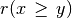;
of alternatives in decreasing order of the outranking characteristic values 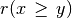;Consider the pairs in that order (ties are resolved by a lexicographic rule):
if the next pair does not create a circuit with the pairs already blocked, block this pair;
if the next pair creates a circuit with the already blocked pairs, skip it.
With our didactic outranking digraph g, we get the following result.
1 2 3 4 | >>> from linearOrders import RankedPairsOrder
>>> rp = RankedPairsOrder(g)
>>> rp.showRanking()
['a5', 'a6', 'a7', 'a3', 'a8', 'a9', 'a4', 'a1', 'a2']
|
The RankedPairs ranking rule renders in our example here luckily one of the two optimal Kemeny ranking, as we may verify below.
1 2 3 4 5 6 7 8 9 | >>> ke.maximalRankings
[['a5', 'a6', 'a7', 'a3', 'a8', 'a9', 'a4', 'a1', 'a2'],
['a5', 'a6', 'a7', 'a3', 'a9', 'a4', 'a1', 'a8', 'a2']]
>>> corr = g.computeOrdinalCorrelation(rp)
>>> g.computeCorrelation(corr)
Correlation indexes:
Extended Kendall tau : +0.779
Epistemic determination : 0.230
Bipolar-valued equivalence : +0.179
|
Similar to Kohler’s rule, the RankedPairs rule has also a prudent dual version, the Dias-Lamboray ordering-by-choosing rule, which produces, when working this time on the codual strict outranking digraph gcd, the same ranking result (see [LAM-2009], [DIA-2010]).
Besides of not providing a unique linear ranking, the ranking-by-choosing rules, as well as their dual ordering-by-choosing rules, are unfortunately not scalable to outranking digraphs of larger orders (> 100). For such bigger outranking digraphs, with several hundred or thousands of alternatives, only the Copeland, the NetFlows ranking-by-scoring rules, with a polynomial complexity of  , where n is the order of the outranking digraph, remain in fact computationally tractable.
, where n is the order of the outranking digraph, remain in fact computationally tractable.
Ranking big performance tableaux¶
However, none of the previous ranking heuristics, using essentially only the information given by the pairwise outranking characteristics, are scalable for big outranking digraphs gathering millions of pairwise outranking situations. We may notice, however, that a given outranking digraph -the association of a set of decision alternatives and an outranking relation- is, following the methodological requirements of the outranking approach, necessarily associated with a corresponding performance tableau. And, we may use this underlying performance data for linearly decomposing big sets of decision alternatives into ordered quantiles equivalence classes. This decomposition will lead to a pre-ranked sparse outranking digraph.
In the coding example in Listing 37, we generate for instance, by using multiprocessing techniques, first (Lines 2-3), a cost benefit performance tableau of 100 decision alternatives and, secondly (Lines 4-5), we construct a pre-ranked sparse outranking digraph instance called bg. Notice by the way the BigData flag (Line 3) used here for generating a parsimonious performance tableau.
1 2 3 4 5 6 7 8 9 10 11 12 13 14 15 16 17 18 19 20 21 22 23 24 25 | >>> from sparseOutrankingDigraphs import PreRankedOutrankingDigraph
>>> tp = RandomCBPerformanceTableau(numberOfActions=100,
... BigData=True,seed=100)
>>> bg = PreRankedOutrankingDigraph(tp,quantiles=10,LowerClosed=False,
... minimalComponentSize=1)
>>> bg
*----- show short --------------*
Instance name : randomCBperftab_mp
# Actions : 100
# Criteria : 7
Sorting by : 10-Tiling
Ordering strategy : average
Ranking rule : Copeland
# Components : 20
Minimal order : 1
Maximal order : 20
Average order : 5.0
fill rate : 10.061%
*---- Constructor run times (in sec.) ----*
Total time : 0.17790
QuantilesSorting : 0.09019
Preordering : 0.00043
Decomposing : 0.08522
Ordering : 0.00000
<class 'sparseOutrankingDigraphs.PreRankedOutrankingDigraph'> instance
|
The total run time of the sparseOutrankingDigraphs.PreRankedOutrankingDigraph constructor is less than a fifth of a second. The corresponding multiple criteria deciles sorting leads to 20 quantiles equivalence classes. The corresponding pre-ranked decomposition may be visualized as follows.
1 2 3 4 5 6 7 8 9 10 11 12 13 14 15 16 17 18 19 20 21 22 23 24 | >>> bg.showDecomposition()
*--- quantiles decomposition in decreasing order---*
0. ]0.80-0.90] : [49, 10, 52]
1. ]0.70-0.90] : [45]
2. ]0.70-0.80] : [18, 84, 86, 79]
3. ]0.60-0.80] : [41, 70]
4. ]0.50-0.80] : [44]
5. ]0.60-0.70] : [2, 35, 68, 37, 7, 8, 75, 12, 80, 21, 55, 90, 30, 95]
6. ]0.50-0.70] : [19]
7. ]0.40-0.70] : [69]
8. ]0.50-0.60] : [96, 1, 66, 67, 38, 33, 72, 73, 71, 13, 77, 16, 82,
85, 22, 25, 88, 57, 87, 91]
9. ]0.30-0.70] : [42]
10. ]0.40-0.60] : [47]
11. ]0.30-0.60] : [0, 32, 48]
12. ]0.40-0.50] : [34, 5, 31, 83, 76, 78, 15, 51, 14, 54, 56, 27, 60,
29, 94, 63]
13. ]0.30-0.50] : [4, 50, 92, 39]
14. ]0.20-0.50] : [43]
15. ]0.30-0.40] : [97, 99, 36, 6, 89, 61, 93]
16. ]0.20-0.40] : [65, 20, 46, 62]
17. ]0.20-0.30] : [64, 81, 3, 53, 24, 40, 74, 28, 26, 58]
18. ]0.10-0.30] : [17, 98, 11]
19. ]0.10-0.20] : [9, 59, 23]
|
The best decile (]80%-90%]) gathers decision alternatives 49, 10, and 52. Worst decile (]10%-20%]) gathers alternatives 9, 59, and 23 (see Listing 38 Lines 3 and 24).
Each one of these 20 ordered components may now be locally ranked by using a suitable ranking rule. Best operational results, both in run times and quality, are more or less equally given with the Copeland and the NetFlows rules. The eventually obtained linear ordering (from the worst to best) is the following.
1 2 3 4 5 6 7 8 9 | >>> bg.boostedOrder
[59, 9, 23, 17, 11, 98, 26, 81, 40, 64, 3, 74,
28, 53, 24, 58, 65, 62, 46, 20, 93, 89, 97, 61,
99, 6, 36, 43, 4, 50, 39, 92, 94, 60, 14, 76, 63,
51, 56, 34, 5, 54, 27, 78, 15, 29, 31, 83, 32, 0,
48, 47, 42, 16, 1, 66, 72, 71, 38, 57, 33, 73, 88,
85, 82, 22, 96, 91, 67, 87, 13, 77, 25, 69, 19, 21,
95, 35, 80, 37, 7, 12, 68, 2, 90, 55, 30, 75, 8, 44,
41, 70, 79, 86, 84, 18, 45, 49, 10, 52]
|
Alternative 52 appears first ranked, whereas alternative 59 is last ranked. The quality of this ranking result may be assessed by computing its ordinal correlation with the corresponding standard outranking relation.
1 2 3 4 5 6 7 | >>> g = BipolarOutrankingDigraph(tp,Normalized=True,Threading=True)
>>> corr = g.computeOrderCorrelation(bg.boostedOrder)
>>> g.showCorrelation(corr)
Correlation indexes:
Extended Kendall tau : +0.749
Epistemic determination : 0.417
Bipolar-valued equivalence : +0.312
|
The Copeland as well as the NetFlows ranking heuristics are readily scalable with ad hoc HPC tuning to several millions of decision alternatives (see [BIS-2016]).
Back to Content Table
HPC ranking with big outranking digraphs¶
C-compiled Python modules¶
The Digraph3 collection provides cythonized 6, i.e. C-compiled and optimised versions of the main python modules for tackling multiple criteria decision problems facing very large sets of decision alternatives ( > 10000 ). Such problems appear usually with a combinatorial organisation of the potential decision alternatives, as is frequently the case in bioinformatics for instance. If HPC facilities with nodes supporting numerous cores (> 20) and big RAM (> 50GB) are available, ranking up to several millions of alternatives (see [BIS-2016]) becomes effectively tractable.
Four cythonized Digraph3 modules, prefixed with the letter c and taking a pyx extension, are provided with their corresponding setup tools in the Digraph3/cython directory, namely
cRandPerfTabs.pyx
cIntegerOutrankingDigraphs.pyx
cIntegerSortingDigraphs.pyx
cSparseIntegerOutrankingDigraphs.pyx
Their automatic compilation and installation, alongside the standard Digraph3 python3 modules, requires the cython compiler 6 ( …$ pip3 install cython ) and a C compiler (…$ sudo apt install gcc on Ubuntu).
Big Data performance tableaux¶
In order to efficiently type the C variables, the cRandPerfTabs module provides the usual random performance tableau models, but, with integer action keys, float performance evaluations, integer criteria weights and float discrimination thresholds. And, to limit as much as possible memory occupation of class instances, all the usual verbose comments are dropped from the description of the actions and criteria dictionaries.
1 2 3 4 5 6 7 8 9 10 11 12 13 14 15 16 17 18 19 20 21 22 23 24 25 26 27 28 29 30 31 32 33 34 35 36 37 38 39 40 41 42 43 44 45 | >>> from cRandPerfTabs import *
>>> t = cRandomPerformanceTableau(numberOfActions=4,numberOfCriteria=2)
>>> t
*------- PerformanceTableau instance description ------*
Instance class : cRandomPerformanceTableau
Seed : None
Instance name : cRandomperftab
# Actions : 4
# Criteria : 2
Attributes : ['randomSeed', 'name', 'actions', 'criteria',
'evaluation', 'weightPreorder']
>>> t.actions
OrderedDict([(1, {'name': '#1'}), (2, {'name': '#2'}),
(3, {'name': '#3'}), (4, {'name': '#4'})])
>>> t.criteria
OrderedDict([
('g1', {'name': 'RandomPerformanceTableau() instance',
'comment': 'Arguments: ; weightDistribution=equisignificant;
weightScale=(1, 1); commonMode=None',
'thresholds': {'ind': (10.0, 0.0),
'pref': (20.0, 0.0),
'veto': (80.0, 0.0)},
'scale': (0.0, 100.0),
'weight': 1,
'preferenceDirection': 'max'}),
('g2', {'name': 'RandomPerformanceTableau() instance',
'comment': 'Arguments: ; weightDistribution=equisignificant;
weightScale=(1, 1); commonMode=None',
'thresholds': {'ind': (10.0, 0.0),
'pref': (20.0, 0.0),
'veto': (80.0, 0.0)},
'scale': (0.0, 100.0),
'weight': 1,
'preferenceDirection': 'max'})])
>>> t.evaluation
{'g1': {1: 35.17, 2: 56.4, 3: 1.94, 4: 5.51},
'g2': {1: 95.12, 2: 90.54, 3: 51.84, 4: 15.42}}
>>> t.showPerformanceTableau()
Criteria | 'g1' 'g2'
Actions | 1 1
---------|---------------
'#1' | 91.18 90.42
'#2' | 66.82 41.31
'#3' | 35.76 28.86
'#4' | 7.78 37.64
|
Conversions from the Big Data model to the standard model and vice versa are provided.
1 2 3 4 5 6 7 8 9 10 11 12 | >>> t1 = t.convert2Standard()
>>> t1.convertWeight2Decimal()
>>> t1.convertEvaluation2Decimal()
>>> t1
*------- PerformanceTableau instance description ------*
Instance class : PerformanceTableau
Seed : None
Instance name : std_cRandomperftab
# Actions : 4
# Criteria : 2
Attributes : ['name', 'actions', 'criteria', 'weightPreorder',
'evaluation', 'randomSeed']
|
C-implemented integer-valued outranking digraphs¶
The C compiled version of the bipolar-valued digraph models takes integer relation characteristic values.
1 2 3 4 5 6 7 8 9 10 11 12 13 14 15 16 17 18 19 20 21 22 23 | >>> t = cRandomPerformanceTableau(numberOfActions=1000,numberOfCriteria=2)
>>> from cIntegerOutrankingDigraphs import *
>>> g = IntegerBipolarOutrankingDigraph(t,Threading=True,nbrCores=4)
>>> g
*------- Object instance description ------*
Instance class : IntegerBipolarOutrankingDigraph
Instance name : rel_cRandomperftab
# Actions : 1000
# Criteria : 2
Size : 465024
Determinateness : 56.877
Valuation domain : {'min': -2, 'med': 0, 'max': 2,
'hasIntegerValuation': True}
---- Constructor run times (in sec.) ----
Total time : 4.23880
Data input : 0.01203
Compute relation : 3.60788
Gamma sets : 0.61889
#Threads : 4
Attributes : ['name', 'actions', 'criteria', 'totalWeight',
'valuationdomain', 'methodData', 'evaluation',
'order', 'runTimes', 'nbrThreads', 'relation',
'gamma', 'notGamma']
|
On a classic intel-i7 equipped PC with four single threaded cores, the cIntegerOutrankingDigraphs.IntegerBipolarOutrankingDigraph constructor takes about four seconds for computing a million pairwise outranking characteristic values. In a similar setting, the standard outrankingDigraphs.BipolarOutrankingDigraph class constructor operates more than two times slower.
1 2 3 4 5 6 7 8 9 10 11 12 13 14 15 16 17 18 19 20 | >>> from outrankingDigraphs import BipolarOutrankingDigraph
>>> g1 = BipolarOutrankingDigraph(t1,Threading=True,nbrCores=4)
>>> g1
*------- Object instance description ------*
Instance class : BipolarOutrankingDigraph
Instance name : rel_std_cRandomperftab
# Actions : 1000
# Criteria : 2
Size : 465024
Determinateness : 56.817
Valuation domain : {'min': Decimal('-100.0'),
'med': Decimal('0.0'),
'max': Decimal('100.0'),
'precision': Decimal('0')}
---- Constructor run times (in sec.) ----
Total time : 8.63340
Data input : 0.01564
Compute relation : 7.52787
Gamma sets : 1.08987
#Threads : 4
|
By far, most of the run time is in each case needed for computing the individual pairwise outranking characteristic values. Notice also below the memory occupations of both outranking digraph instances.
1 2 3 4 5 6 7 8 9 | >>> from digraphsTools import total_size
>>> total_size(g)
108662777
>>> total_size(g1)
212679272
>>> total_size(g.relation)/total_size(g)
0.34
>>> total_size(g.gamma)/total_size(g)
0.45
|
About 103MB for g and 202MB for g1. The standard Decimal valued BipolarOutrankingDigraph instance g1 thus nearly doubles the memory occupation of the corresponding IntegerBipolarOutrankingDigraph g instance (see Line 3 and 5 above). 3/4 of this memory occupation is due to the g.relation (34%) and the g.gamma (45%) dictionaries. And these ratios quadratically grow with the digraph order. To limit the object sizes for really big outranking digraphs, we need to abandon the complete implementation of adjacency tables and gamma functions.
The sparse outranking digraph implementation¶
The idea is to first decompose the complete outranking relation into an ordered collection of equivalent quantile performance classes. Let us consider for this illustration a random performance tableau with 100 decision alternatives evaluated on 7 criteria.
1 2 3 | >>> from cRandPerfTabs import *
>>> t = cRandomPerformanceTableau(numberOfActions=100,
... numberOfCriteria=7,seed=100)
|
We sort the 100 decision alternatives into overlapping quartile classes and rank with respect to the average quantile limits.
1 2 3 4 5 6 7 8 9 10 11 12 13 14 15 16 17 18 19 20 21 22 23 24 25 26 27 28 29 30 31 32 | >>> from cSparseIntegerOutrankingDigraphs import *
>>> sg = SparseIntegerOutrankingDigraph(t,quantiles=4)
>>> sg
*----- Object instance description --------------*
Instance class : SparseIntegerOutrankingDigraph
Instance name : cRandomperftab_mp
# Actions : 100
# Criteria : 7
Sorting by : 4-Tiling
Ordering strategy : average
Ranking rule : Copeland
# Components : 6
Minimal order : 1
Maximal order : 35
Average order : 16.7
fill rate : 24.970%
*---- Constructor run times (in sec.) ----
Nbr of threads : 1
Total time : 0.08212
QuantilesSorting : 0.01481
Preordering : 0.00022
Decomposing : 0.06707
Ordering : 0.00000
Attributes : ['runTimes', 'name', 'actions', 'criteria',
'evaluation', 'order', 'dimension',
'sortingParameters', 'nbrOfCPUs',
'valuationdomain', 'profiles', 'categories',
'sorting', 'minimalComponentSize',
'decomposition', 'nbrComponents', 'nd',
'components', 'fillRate',
'maximalComponentSize', 'componentRankingRule',
'boostedRanking']
|
We obtain in this example here a decomposition into 6 linearly ordered components with a maximal component size of 35 for component c3.
1 2 3 4 5 6 7 8 9 10 11 12 | >>> sg.showDecomposition()
*--- quantiles decomposition in decreasing order---*
c1. ]0.75-1.00] : [3, 22, 24, 34, 41, 44, 50, 53, 56, 62, 93]
c2. ]0.50-1.00] : [7, 29, 43, 58, 63, 81, 96]
c3. ]0.50-0.75] : [1, 2, 5, 8, 10, 11, 20, 21, 25, 28, 30, 33,
35, 36, 45, 48, 57, 59, 61, 65, 66, 68, 70,
71, 73, 76, 82, 85, 89, 90, 91, 92, 94, 95, 97]
c4. ]0.25-0.75] : [17, 19, 26, 27, 40, 46, 55, 64, 69, 87, 98, 100]
c5. ]0.25-0.50] : [4, 6, 9, 12, 13, 14, 15, 16, 18, 23, 31, 32,
37, 38, 39, 42, 47, 49, 51, 52, 54, 60, 67, 72,
74, 75, 77, 78, 80, 86, 88, 99]
c6. ]<-0.25] : [79, 83, 84]
|
A restricted outranking relation is stored for each component with more than one alternative. The resulting global relation map of the first ranked 75 alternatives looks as follows.
>>> sg.showRelationMap(toIndex=75)

Fig. 23 Sparse quartiles-sorting decomposed outranking relation (extract).¶
- Legend:
outranking for certain ( ┬ )
outranked for certain ( ┴ )
more or less outranking (+ )
more or less outranked (-)
indeterminate ( )
With a fill rate of 25%, the memory occupation of this sparse outranking digraph sg instance takes now only 769kB, compared to the 1.7MB required by a corresponding standard IntegerBipolarOutrankingDigraph instance.
>>> print('%.0fkB' % (total_size(sg)/1024) )
769kB
For sparse outranking digraphs, the adjacency table is implemented as a dynamic self.relation(x,y) function instead of a double dictionary self.relation[x][y].
1 2 3 4 5 6 7 8 9 10 11 12 13 14 15 16 17 18 19 20 21 22 23 24 25 26 27 28 29 30 31 32 33 | def relation(self, int x, int y):
"""
*Parameters*:
* x (int action key),
* y (int action key).
Dynamic construction of the global outranking
characteristic function *r(x S y)*.
"""
cdef int Min, Med, Max, rx, ry
Min = self.valuationdomain['min']
Med = self.valuationdomain['med']
Max = self.valuationdomain['max']
if x == y:
return Med
cx = self.actions[x]['component']
cy = self.actions[y]['component']
#print(self.components)
rx = self.components[cx]['rank']
ry = self.components[cy]['rank']
if rx == ry:
try:
rxpg = self.components[cx]['subGraph'].relation
return rxpg[x][y]
except AttributeError:
componentRanking = self.components[cx]['componentRanking']
if componentRanking.index(x) < componentRanking.index(x):
return Max
else:
return Min
elif rx > ry:
return Min
else:
return Max
|
Ranking big sets of decision alternatives¶
We may now rank the complete set of 100 decision alternatives by locally ranking with the Copeland or the NetFlows rule, for instance, all these individual components.
1 2 3 4 5 6 7 8 | >>> sg.boostedRanking
[22, 53, 3, 34, 56, 62, 24, 44, 50, 93, 41, 63, 29, 58,
96, 7, 43, 81, 91, 35, 25, 76, 66, 65, 8, 10, 1, 11, 61,
30, 48, 45, 68, 5, 89, 57, 59, 85, 82, 73, 33, 94, 70,
97, 20, 92, 71, 90, 95, 21, 28, 2, 36, 87, 40, 98, 46, 55,
100, 64, 17, 26, 27, 19, 69, 6, 38, 4, 37, 60, 31, 77, 78,
47, 99, 18, 12, 80, 54, 88, 39, 9, 72, 86, 42, 13, 23, 67,
52, 15, 32, 49, 51, 74, 16, 14, 75, 79, 83, 84]
|
When actually computing linear rankings of a set of alternatives, the local outranking relations are of no practical usage, and we may furthermore reduce the memory occupation of the resulting digraph by
refining the ordering of the quantile classes by taking into account how well an alternative is outranking the lower limit of its quantile class, respectively the upper limit of its quantile class is not outranking the alternative;
dropping the local outranking digraphs and keeping for each quantile class only a locally ranked list of alternatives.
We provide therefore the cSparseIntegerOutrankingDigraphs.cQuantilesRankingDigraph class.
1 2 3 4 5 6 7 8 9 10 11 12 13 14 15 16 17 18 19 20 21 22 23 24 25 26 27 28 29 | >>> qr = cQuantilesRankingDigraph(t,4)
>>> qr
*----- Object instance description --------------*
Instance class : cQuantilesRankingDigraph
Instance name : cRandomperftab_mp
# Actions : 100
# Criteria : 7
Sorting by : 4-Tiling
Ordering strategy : optimal
Ranking rule : Copeland
# Components : 47
Minimal order : 1
Maximal order : 10
Average order : 2.1
fill rate : 2.566%
*---- Constructor run times (in sec.) ----*
Nbr of threads : 1
Total time : 0.03702
QuantilesSorting : 0.01785
Preordering : 0.00022
Decomposing : 0.01892
Ordering : 0.00000
Attributes : ['runTimes', 'name', 'actions', 'order',
'dimension', 'sortingParameters', 'nbrOfCPUs',
'valuationdomain', 'profiles', 'categories',
'sorting', 'minimalComponentSize',
'decomposition', 'nbrComponents', 'nd',
'components', 'fillRate', 'maximalComponentSize',
'componentRankingRule', 'boostedRanking']
|
With this optimised quantile ordering strategy, we obtain now 47 performance equivalence classes.
1 2 3 4 5 6 7 8 9 10 11 12 13 14 15 16 17 18 19 20 21 22 23 24 25 26 27 28 29 30 31 | >>> qr.components
OrderedDict([
('c01', {'rank': 1,
'lowQtileLimit': ']0.75',
'highQtileLimit': '1.00]',
'componentRanking': [53]}),
('c02', {'rank': 2,
'lowQtileLimit': ']0.75',
'highQtileLimit': '1.00]',
'componentRanking': [3, 23, 63, 50]}),
('c03', {'rank': 3,
'lowQtileLimit': ']0.75',
'highQtileLimit': '1.00]',
'componentRanking': [34, 44, 56, 24, 93, 41]}),
...
...
...
('c45', {'rank': 45,
'lowQtileLimit': ']0.25',
'highQtileLimit': '0.50]',
'componentRanking': [49]}),
('c46', {'rank': 46,
'lowQtileLimit': ']0.25',
'highQtileLimit': '0.50]',
'componentRanking': [52, 16, 86]}),
('c47', {'rank': 47,
'lowQtileLimit': ']<',
'highQtileLimit': '0.25]',
'componentRanking': [79, 83, 84]})])
>>> print('%.0fkB' % (total_size(qr)/1024) )
208kB
|
We observe an even more considerably less voluminous memory occupation: 208kB compared to the 769kB of the SparseIntegerOutrankingDigraph instance. It is opportune, however, to measure the loss of quality of the resulting Copeland ranking when working with sparse outranking digraphs.
1 2 3 4 5 6 7 8 9 10 11 12 13 14 | >>> from cIntegerOutrankingDigraphs import *
>>> ig = IntegerBipolarOutrankingDigraph(t)
>>> print('Complete outranking : %+.4f'\
... % (ig.computeOrderCorrelation(ig.computeCopelandOrder())\
... ['correlation']))
Complete outranking : +0.7474
>>> print('Sparse 4-tiling : %+.4f'\
... % (ig.computeOrderCorrelation(\
... list(reversed(sg.boostedRanking)))['correlation']))
Sparse 4-tiling : +0.7172
>>> print('Optimzed sparse 4-tiling: %+.4f'\
... % (ig.computeOrderCorrelation(\
... list(reversed(qr.boostedRanking)))['correlation']))
Optimzed sparse 4-tiling: +0.7051
|
The best ranking correlation with the pairwise outranking situations (+0.75) is naturally given when we apply the Copeland rule to the complete outranking digraph. When we apply the same rule to the sparse 4-tiled outranking digraph, we get a correlation of +0.72, and when applying the Copeland rule to the optimised 4-tiled digraph, we still obtain a correlation of +0.71. These results actually depend on the number of quantiles we use as well as on the given model of random performance tableau. In case of Random3ObjectivesPerformanceTableau instances, for instance, we would get in a similar setting a complete outranking correlation of +0.86, a sparse 4-tiling correlation of +0.82, and an optimzed sparse 4-tiling correlation of +0.81.
HPC quantiles ranking records¶
Following from the separability property of the q-tiles sorting of each action into each q-tiles class, the q-sorting algorithm may be safely split into as much threads as are multiple processing cores available in parallel. Furthermore, the ranking procedure being local to each diagonal component, these procedures may as well be safely processed in parallel threads on each component restricted outrankingdigraph.
Using the HPC platform of the University of Luxembourg (https://hpc.uni.lu/), the following run times for very big ranking problems could be achieved both:
by running the cythonized python modules in an Intel compiled virtual Python 3.6.5 environment [GCC Intel(R) 17.0.1 –enable-optimizations c++ gcc 6.3 mode] on Debian 8 Linux.

Fig. 24 HPC-UL Ranking Performance Records (Spring 2018)¶
Example python session on the HPC-UL Iris-126 -skylake node 7
1 2 3 4 5 | (myPy365ICC) [rbisdorff@iris-126 Test]$ python
Python 3.6.5 (default, May 9 2018, 09:54:28)
[GCC Intel(R) C++ gcc 6.3 mode] on linux
Type "help", "copyright", "credits" or "license" for more information.
>>>
|
1 2 3 4 5 6 7 8 9 10 11 12 13 14 15 16 17 18 19 20 21 22 23 24 25 26 27 28 29 30 31 32 33 34 35 36 37 38 39 | >>> from cRandPerfTabs import\
... cRandom3ObjectivesPerformanceTableau as cR3ObjPT
>>> pt = cR3ObjPT(numberOfActions=1000000,
... numberOfCriteria=21,
... weightDistribution='equiobjectives',
... commonScale = (0.0,1000.0),
... commonThresholds = [(2.5,0.0),(5.0,0.0),(75.0,0.0)],
... commonMode = ['beta','variable',None],
... missingDataProbability=0.05,
... seed=16)
>>> import cSparseIntegerOutrankingDigraphs as iBg
>>> qr = iBg.cQuantilesRankingDigraph(pt,quantiles=10,
... quantilesOrderingStrategy='optimal',
... minimalComponentSize=1,
... componentRankingRule='NetFlows',
... LowerClosed=False,
... Threading=True,
... tempDir='/tmp',
... nbrOfCPUs=28)
>>> qr
*----- Object instance description --------------*
Instance class : cQuantilesRankingDigraph
Instance name : random3ObjectivesPerfTab_mp
# Actions : 1000000
# Criteria : 21
Sorting by : 10-Tiling
Ordering strategy : optimal
Ranking rule : NetFlows
# Components : 233645
Minimal order : 1
Maximal order : 153
Average order : 4.3
fill rate : 0.001%
*---- Constructor run times (in sec.) ----*
Nbr of threads : 28
Total time : 177.02770
QuantilesSorting : 99.55377
Preordering : 5.17954
Decomposing : 72.29356
|
On this 2x14c Intel Xeon Gold 6132 @ 2.6 GHz equipped HPC node with 132GB RAM 7, deciles sorting and locally ranking a million decision alternatives evaluated on 21 incommensurable criteria, by balancing an economic, an environmental and a societal decision objective, takes us about 3 minutes (see Lines 37-42 above); with 1.5 minutes for the deciles sorting and, a bit more than one minute, for the local ranking of the individual components.
The optimised deciles sorting leads to 233645 components (see Lines 32-36 above) with a maximal order of 153. The fill rate of the adjacency table is reduced to 0.001%. Of the potential trillion (10^12) pairwise outrankings, we effectively keep only 10 millions (10^7). This high number of components results from the high number of involved performance criteria (21), leading in fact to a very refined epistemic discrimination of majority outranking margins.
A non-optimised deciles sorting would instead give at most 110 components with inevitably very big intractable local digraph orders. Proceeding with a more detailed quantiles sorting, for reducing the induced decomposing run times, leads however quickly to intractable quantiles sorting times. A good compromise is given when the quantiles sorting and decomposing steps show somehow equivalent run times; as is the case in our example session: 99.6 versus 77.3 seconds (see Lines 40 and 42 above).
Let us inspect the 21 marginal performances of the five best-ranked alternatives listed below.
1 2 3 4 5 6 7 8 9 10 11 12 13 14 15 16 17 18 19 20 21 22 23 24 25 26 27 | >>> pt.showPerformanceTableau(\
... actionsSubset=qr.boostedRanking[:5],\
... Transposed=True)
*---- performance tableau -----*
criteria | weights | #773909 #668947 #567308 #578560 #426464
---------|-------------------------------------------------------
'Ec01' | 42 | 969.81 844.71 917.00 NA 808.35
'So02' | 48 | NA 891.52 836.43 NA 899.22
'En03' | 56 | 687.10 NA 503.38 873.90 NA
'So04' | 48 | 455.05 845.29 866.16 800.39 956.14
'En05' | 56 | 809.60 846.87 939.46 851.83 950.51
'Ec06' | 42 | 919.62 802.45 717.39 832.44 974.63
'Ec07' | 42 | 889.01 722.09 606.11 902.28 574.08
'So08' | 48 | 862.19 699.38 907.34 571.18 943.34
'En09' | 56 | 857.34 817.44 819.92 674.60 376.70
'Ec10' | 42 | NA 874.86 NA 847.75 739.94
'En11' | 56 | NA 824.24 855.76 NA 953.77
'Ec12' | 42 | 802.18 871.06 488.76 841.41 599.17
'En13' | 56 | 827.73 839.70 864.48 720.31 877.23
'So14' | 48 | 943.31 580.69 827.45 815.18 461.04
'En15' | 56 | 794.57 801.44 924.29 938.70 863.72
'Ec16' | 42 | 581.15 599.87 949.84 367.34 859.70
'So17' | 48 | 881.55 856.05 NA 796.10 655.37
'Ec18' | 42 | 863.44 520.24 919.75 865.14 914.32
'So19' | 48 | NA NA NA 790.43 842.85
'Ec20' | 42 | 582.52 831.93 820.92 881.68 864.81
'So21' | 48 | 880.87 NA 628.96 746.67 863.82
|
The given ranking problem involves 8 criteria assessing the economic performances, 7 criteria assessing the societal performances and 6 criteria assessing the environmental performances of the decision alternatives. The sum of criteria significance weights (336) is the same for all three decision objectives. The five best-ranked alternatives are, in decreasing order: #773909, #668947, #567308, #578560 and #426464.
Their random performance evaluations were obviously drawn on all criteria with a good (+) performance profile, i.e. a Beta(alpha = 5.8661, beta = 2.62203) law (see the tutorial Generating random performance tableaux).
1 2 3 4 5 6 7 8 | >>> for x in qr.boostedRanking[:5]:
... print(pt.actions[x]['name'],\
... pt.actions[x]['profile'])
#773909 {'Eco': '+', 'Soc': '+', 'Env': '+'}
#668947 {'Eco': '+', 'Soc': '+', 'Env': '+'}
#567308 {'Eco': '+', 'Soc': '+', 'Env': '+'}
#578560 {'Eco': '+', 'Soc': '+', 'Env': '+'}
#426464 {'Eco': '+', 'Soc': '+', 'Env': '+'}
|
We consider now a partial performance tableau best10, consisting only, for instance, of the ten best-ranked alternatives, with which we may compute a corresponding integer outranking digraph valued in the range (-1008, +1008).
1 2 3 4 5 6 7 8 9 10 11 12 13 14 15 16 17 18 19 20 21 22 23 24 25 26 | >>> best10 = cPartialPerformanceTableau(pt,qr.boostedRanking[:10])
>>> from cIntegerOutrankingDigraphs import *
>>> g = IntegerBipolarOutrankingDigraph(best10)
>>> g.valuationdomain
{'min': -1008, 'med': 0, 'max': 1008, 'hasIntegerValuation': True}
>>> g.showRelationTable(ReflexiveTerms=False)
* ---- Relation Table -----
r(x>y) | #773909 #668947 #567308 #578560 #426464 #298061 #155874 #815552 #279729 #928564
--------|-----------------------------------------------------------------------------------
#773909 | - +390 +90 +270 -50 +340 +220 +60 +116 +222
#668947 | +78 - +42 +250 -22 +218 +56 +172 +74 +64
#567308 | +70 +418 - +180 +156 +174 +266 +78 +256 +306
#578560 | -4 +78 +28 - -12 +100 -48 +154 -110 -10
#426464 | +202 +258 +284 +138 - +416 +312 +382 +534 +278
#298061 | -48 +68 +172 +32 -42 - +54 +48 +248 +374
#155874 | +72 +378 +322 +174 +274 +466 - +212 +308 +418
#815552 | +78 +126 +272 +318 +54 +194 +172 - -14 +22
#279729 | +240 +230 -110 +290 +72 +140 +388 +62 - +250
#928564 | +22 +228 -14 +246 +36 +78 +56 +110 +318 -
r(x>y) image range := [-1008;+1008]
>>> g.condorcetWinners()
[155874, 426464, 567308]
>>> g.computeChordlessCircuits()
[]
>>> g.computeTransitivityDegree()
Decimal('0.78')
|
Three alternatives -#155874, #426464 and #567308- qualify as Condorcet winners, i.e. they each positively outrank all the other nine alternatives. No chordless outranking circuits are detected, yet the transitivity of the apparent outranking relation is not given. And, no clear ranking alignment hence appears when inspecting the strict outranking digraph (i.e. the codual ~(-g) of g) shown in Fig. 25.
1 2 3 4 | >>> (~(-g)).exportGraphViz()
*---- exporting a dot file dor GraphViz tools ---------*
Exporting to converse-dual_rel_best10.dot
dot -Tpng converse-dual_rel_best10.dot -o converse-dual_rel_best10.png
|
{kind=link}
Restricted to these ten best-ranked alternatives, the Copeland, the NetFlows as well as the Kemeny ranking rule will all rank alternative #426464 first and alternative #578560 last. Otherwise the three ranking rules produce in this case more or less different rankings.
1 2 3 4 5 6 7 8 | >>> g.computeCopelandRanking()
[426464, 567308, 155874, 279729, 773909, 928564, 668947, 815552, 298061, 578560]
>>> g.computeNetFlowsRanking()
[426464, 155874, 773909, 567308, 815552, 279729, 928564, 298061, 668947, 578560]
>>> from linearOrders import *
>>> ke = KemenyOrder(g,orderLimit=10)
>>> ke.kemenyRanking
[426464, 773909, 155874, 815552, 567308, 298061, 928564, 279729, 668947, 578560]
|
Note
It is therefore important to always keep in mind that, based on pairwise outranking situations, there does not exist any unique optimal ranking; especially when we face such big data problems. Changing the number of quantiles, the component ranking rule, the optimised quantile ordering strategy, all this will indeed produce, sometimes even substantially, diverse global ranking results.
Back to Content Table
Computing a best choice recommendation¶
See also the lecture 7 notes from the MICS Algorithmic Decision Theory course: [ADT-L7].
What site to choose ?¶
A SME, specialized in printing and copy services, has to move into new offices, and its CEO has gathered seven potential office sites.
address
ID
Comment
Avenue de la liberté
A
High standing city center
Bonnevoie
B
Industrial environment
Cessange
C
Residential suburb location
Dommeldange
D
Industrial suburb environment
Esch-Belval
E
New and ambitious urbanization far from the city
Fentange
F
Out in the countryside
Avenue de la Gare
G
Main town shopping street
Three decision objectives are guiding the CEO’s choice:
minimize the yearly costs induced by the moving,
maximize the future turnover of the SME,
maximize the new working conditions.
The decision consequences to take into account for evaluating the potential new office sites with respect to each of the three objectives are modelled by the following family of criteria.
Objective
ID
Name
Comment
Yearly costs
C
Costs
Annual rent, charges, and cleaning
Future turnover
St
Standing
Image and presentation
Future turnover
V
Visibility
Circulation of potential customers
Future turnover
Pr
Proximity
Distance from town center
Working conditions
W
Space
Working space
Working conditions
Cf
Comfort
Quality of office equipment
Working conditions
P
Parking
Available parking facilities
The evaluation of the seven potential sites on each criterion are gathered in the following performance tableau.
Criterion
weight
A
B
C
D
E
F
G
Costs
3.0
35.0K€
17.8K€
6.7K€
14.1K€
34.8K€
18.6K€
12.0K€
Stan
1.0
100
10
0
30
90
70
20
Visi
1.0
60
80
70
50
60
0
100
Prox
1.0
100
20
80
70
40
0
60
Wksp
1.0
75
30
0
55
100
0
50
Wkcf
1.0
0
100
10
30
60
80
50
Park
1.0
90
30
100
90
70
0
80
Except the Costs criterion, all other criteria admit for grading a qualitative satisfaction scale from 0% (worst) to 100% (best). We may thus notice that site A is the most expensive, but also 100% satisfying the Proximity as well as the Standing criterion. Whereas the site C is the cheapest one; providing however no satisfaction at all on both the Standing and the Working Space criteria.
All qualitative criteria, supporting their respective objective, are considered to be equi-significant (weights = 1.0). As a consequence, the three objectives are considered equally important (total weight = 3.0 each).
Concerning annual costs, we notice that the CEO is indifferent up to a performance difference of 1000€, and he actually prefers a site if there is at least a positive difference of 2500€. The grades observed on the six qualitative criteria (measured in percentages of satisfaction) are very subjective and rather imprecise. The CEO is hence indifferent up to a satisfaction difference of 10%, and he claims a significant preference when the satisfaction difference is at least of 20%. Furthermore, a satisfaction difference of 80% represents for him a considerably large performance difference, triggering a veto situation the case given (see [BIS-2013]).
In view of this performance tableau, what is now the office site we may recommend to the CEO as best choice ?
Performance tableau¶
The XMCDA 2.0 encoded version of this performance tableau is available for downloading here officeChoice.xml.
We may inspect the performance tableau data with the computing resources provided by the perfTabs module module.
1 2 3 4 5 6 7 8 9 10 11 12 13 14 | >>> from perfTabs import *
>>> t = XMCDA2PerformanceTableau('officeChoice')
>>> help(t) # for discovering all the methods available
>>> t.showPerformanceTableau()
*---- performance tableau -----*
criteria | weights | 'A' 'B' 'C' 'D' 'E' 'F' 'G'
---------|---------------------------------------------------------------------------------
'C' | 3.00 | -35000.00 -17800.00 -6700.00 -14100.00 -34800.00 -18600.00 -12000.00
'Cf' | 1.00 | 0.00 100.00 10.00 30.00 60.00 80.00 50.00
'P' | 1.00 | 90.00 30.00 100.00 90.00 70.00 0.00 80.00
'Pr' | 1.00 | 100.00 20.00 80.00 70.00 40.00 0.00 60.00
'St' | 1.00 | 100.00 10.00 0.00 30.00 90.00 70.00 20.00
'V' | 1.00 | 60.00 80.00 70.00 50.00 60.00 0.00 100.00
'W' | 1.00 | 75.00 30.00 0.00 55.00 100.00 0.00 50.00
|
We thus recover all the input data. To measure the actual preference discrimination we observe on each criterion, we may use the perfTabs.PerformanceTableau.showCriteria() method.
1 2 3 4 5 6 7 8 9 10 11 12 13 14 | >>> t.showCriteria()
*---- criteria -----*
C 'Costs'
Scale = (Decimal('0.00'), Decimal('50000.00'))
Weight = 0.333
Threshold ind : 1000.00 + 0.00x ; percentile: 0.095
Threshold pref : 2500.00 + 0.00x ; percentile: 0.143
Cf 'Comfort'
Scale = (Decimal('0.00'), Decimal('100.00'))
Weight = 0.111
Threshold ind : 10.00 + 0.00x ; percentile: 0.095
Threshold pref : 20.00 + 0.00x ; percentile: 0.286
Threshold veto : 80.00 + 0.00x ; percentile: 0.905
...
|
On the Costs criterion, 9.5% of the performance differences are considered insignificant and 14.3% below the preference discrimination threshold (lines 6-7). On the qualitative Comfort criterion, we observe again 9.5% of insignificant performance differences (line 11). Due to the imprecision in the subjective grading, we notice here 28.6% of performance differences below the preference discrimination threshold (Line 12). Furthermore, 100.0 - 90.5 = 9.5% of the performance differences are judged considerably large (Line 13); 80% and more of satisfaction differences triggering in fact a veto situation. Same information is available for all the other criteria.
A colorful comparison of all the performances is shown by the heatmap statistics, illustrating the respective quantile class of each performance. As the set of potential alternatives is tiny, we choose here a classification into performance quintiles.
>>> t.showHTMLPerformanceHeatmap(colorLevels=5)

Fig. 26 heatmap of the office choice performance tableau¶
Site A shows extreme and contradictory performances: highest Costs and no Working Comfort on one hand, and total satisfaction with respect to Standing, Proximity and Parking facilities on the other hand. Similar, but opposite, situation is given for site C: unsatisfactory Working Space, no Standing and no Working Comfort on the one hand, and lowest Costs, best Proximity and Parking facilities on the other hand. Contrary to these contradictory alternatives, we observe two appealing compromise decision alternatives: sites D and G. Finally, site F is clearly the less satisfactory alternative of all.
Outranking digraph¶
To help now the CEO choosing the best site, we are going to compute pairwise outrankings (see [BIS-2013]) on the set of potential sites. For two sites x and y, the situation “x outranks y”, denoted (x S y), is given if there is:
a significant majority of criteria concordantly supporting that site x is at least as satisfactory as site y, and
no considerable counter-performance observed on any discordant criterion.
The credibility of each pairwise outranking situation (see [BIS-2013]), denoted r(x S y), is measured in a bipolar significance valuation [-100.00, 100.00], where positive terms r(x S y) > 0.0 indicate a validated, and negative terms r(x S y) < 0.0 indicate a non-validated outrankings; whereas the median value r(x S y) = 0.0 represents an indeterminate situation (see [BIS-2004]).

Fig. 27 The office choice outranking digraph¶
For computing such a bipolar-valued outranking digraph from the given performance tableau t, we use the BipolarOutrankingDigraph constructor from the outrankingDigraphs module module. The Digraph.showHTMLRelationTable method shows here the resulting bipolar-valued adjacency matrix in a system browser window (see Fig. 27).
1 2 3 | >>> from outrankingDigraphs import BipolarOutrankingDigraph
>>> g = BipolarOutrankingDigraph(t)
>>> g.showHTMLRelationTable()
|
We may notice that Alternative D is positively outranking all other potential office sites (a Condorcet winner). Yet, alternatives A (the most expensive) and C (the cheapest) are not outranked by any other site; they are in fact weak Condorcet winners.
1 2 3 4 | >>> g.condorcetWinners()
['D']
>>> g.weakCondorcetWinners()
['A', 'C', 'D']
|
We may get even more insight in the apparent outranking situations when looking at the Condorcet digraph (see Fig. 28).
1 2 3 4 | >>> g.exportGraphViz('officeChoice')
*---- exporting a dot file for GraphViz tools ---------*
Exporting to officeChoice.dot
dot -Grankdir=BT -Tpng officeChoice.dot -o officeChoice.png
|

Fig. 28 The office choice outranking digraph¶
One may check that the outranking digraph g does not admit in fact a cyclic strict preference situation.
1 2 3 4 5 6 | >>> g.computeChordlessCircuits()
[]
>>> g.showChordlessCircuits()
No circuits observed in this digraph.
*---- Chordless circuits ----*
0 circuits.
|
Rubis best choice recommendations¶
Following the Rubis outranking method (see [BIS-2008]), potential best choice recommendations are determined by the outranking prekernels –weakly independent and strictly outranking choices– of the outranking digraph (see the tutorial on On computing digraph kernels). The case given, we previously need to break open all chordless circuits at their weakest link. As we observe no such chordless circuits here, we may directly compute the prekernels of g.
1 2 3 4 5 6 7 8 9 10 11 12 13 14 15 16 17 18 19 20 21 22 23 24 25 26 27 28 29 30 31 32 33 34 35 | >>> g.showPreKernels()
*--- Computing preKernels ---*
Dominant preKernels :
['D']
independence : 100.0
dominance : 11.111
absorbency : -100.0
covering : 1.000
['B', 'E', 'C']
independence : 0.00
dominance : 11.111
absorbency : -100.0
covering : 0.500
['A', 'G']
independence : 0.00
dominance : 55.556
absorbency : 0.00
covering : 0.700
Absorbent preKernels :
['F', 'A']
independence : 0.00
dominance : 0.00
absorbency : 100.0
covering : 0.700
*----- statistics -----
graph name: rel_officeChoice.xml
number of solutions
dominant kernels : 3
absorbent kernels: 1
cardinality frequency distributions
cardinality : [0, 1, 2, 3, 4, 5, 6, 7]
dominant kernel : [0, 1, 1, 1, 0, 0, 0, 0]
absorbent kernel: [0, 0, 1, 0, 0, 0, 0, 0]
Execution time : 0.00018 sec.
Results in sets: dompreKernels and abspreKernels.
|
We notice three potential best choice recommendations: the Condorcet winner D (Line 4), the triplet B, C and E (Line 9), and finally the pair A and G (Line 14). The Rubis best choice recommendation is given by the most determined prekernel; the one supported by the most significant criteria coalition. This result is shown with the following command.
1 2 3 4 5 6 7 8 9 10 11 12 13 14 15 16 17 18 19 20 21 22 23 24 25 26 27 28 29 30 31 32 33 34 35 36 37 38 | >>> g.showBestChoiceRecommendation(CoDual=False)
*****************************************
Rubis best choice recommendation(s) (BCR)
(in decreasing order of determinateness)
Credibility domain: [-100.00,100.00]
=== >> potential best choice(s)
* choice : ['D']
independence : 100.00
dominance : 11.11
absorbency : -100.00
covering (%) : 100.00
determinateness (%) : 55.56
- most credible action(s) = { 'D': 2.07, }
=== >> potential best choice(s)
* choice : ['A', 'G']
independence : 0.00
dominance : 55.56
absorbency : 0.00
covering (%) : 70.00
determinateness (%) : 50.00
- most credible action(s) = { }
=== >> potential best choice(s)
* choice : ['B', 'C', 'E']
independence : 0.00
dominance : 11.11
absorbency : -100.00
covering (%) : 50.00
determinateness (%) : 50.00
- most credible action(s) = { }
=== >> potential worst choice(s)
* choice : ['A', 'F']
independence : 0.00
dominance : 0.00
absorbency : 100.00
covered (%) : 70.00
determinateness (%) : 50.00
- most credible action(s) = { }
Execution time: 0.014 seconds
|
We notice in Line 6 above that the most significantly supported best choice recommendation is indeed the Condorcet winner D with a majority of 56% of the criteria significance (see Line 12). Both other potential best choice recommendations, as well as the potential worst choice recommendation, are not positively validated as best, resp. worst choices. They may or may not be considered so. Alternative A, with extreme contradictory performances, appears both, in a best and a worst choice recommendation (see Lines 27 and 37) and seams hence not actually comparable to its competitors.
Computing strict best choice recommendations¶
When comparing now the performances of alternatives D and G on a pairwise perspective (see below), we notice that, with the given preference discrimination thresholds, alternative G is actually certainly at least as good as alternative D ( r(G outranks D) = 100.0).
1 2 3 4 5 6 7 8 9 10 11 12 13 14 | >>> g.showPairwiseComparison('G','D')
*------------ pairwise comparison ----*
Comparing actions : (G, D)
crit. wght. g(x) g(y) diff. | ind pref concord |
=========================================================================
C 3.00 -12000.00 -14100.00 +2100.00 | 1000.00 2500.00 +3.00 |
Cf 1.00 50.00 30.00 +20.00 | 10.00 20.00 +1.00 |
P 1.00 80.00 90.00 -10.00 | 10.00 20.00 +1.00 |
Pr 1.00 60.00 70.00 -10.00 | 10.00 20.00 +1.00 |
St 1.00 20.00 30.00 -10.00 | 10.00 20.00 +1.00 |
V 1.00 100.00 50.00 +50.00 | 10.00 20.00 +1.00 |
W 1.00 50.00 55.00 -5.00 | 10.00 20.00 +1.00 |
=========================================================================
Valuation in range: -9.00 to +9.00; global concordance: +9.00
|
However, we must as well notice that the cheapest alternative C is in fact strictly outranking alternative G.
1 2 3 4 5 6 7 8 9 10 11 12 13 14 | >>> g.showPairwiseComparison('C','G')
*------------ pairwise comparison ----*
Comparing actions : (C, G)/(G, C)
crit. wght. g(x) g(y) diff. | ind. pref. (C,G)/(G,C) |
=============================================================================
C 3.00 -6700.00 -12000.00 +5300.00 | 1000.00 2500.00 +3.00/-3.00 |
Cf 1.00 10.00 50.00 -40.00 | 10.00 20.00 -1.00/+1.00 |
P 1.00 100.00 80.00 +20.00 | 10.00 20.00 +1.00/-1.00 |
Pr 1.00 80.00 60.00 +20.00 | 10.00 20.00 +1.00/-1.00 |
St 1.00 0.00 20.00 -20.00 | 10.00 20.00 -1.00/+1.00 |
V 1.00 70.00 100.00 -30.00 | 10.00 20.00 -1.00/+1.00 |
W 1.00 0.00 50.00 -50.00 | 10.00 20.00 -1.00/+1.00 |
=========================================================================
Valuation in range: -9.00 to +9.00; global concordance: +1.00/-1.00
|
To model these strict outranking situations, we may compute the Rubis best choice recommendation on the codual, the converse (~) of the dual (-) 14, of the outranking digraph instance g (see [BIS-2013]), as follows.
1 2 3 4 5 6 7 8 9 10 11 12 13 14 15 16 17 18 19 20 21 22 23 24 | >>> g.showBestChoiceRecommendation(CoDual=True,ChoiceVector=True)
* --- Best and worst choice recommendation(s) ---*
(in decreasing order of determinateness)
Credibility domain: {'min':-100.0, 'max': 100.0', 'med':0.0'}
=== >> potential best choice(s)
* choice : ['A', 'C', 'D']
independence : 0.00
dominance : 11.11
absorbency : 0.00
covering (%) : 41.67
determinateness (%) : 53.17
characteristic vector :
{ 'D': 11.11, 'A': 0.00, 'C': 0.00, 'G': 0.00,
'B': -11.11, 'E': -11.11, 'F': -11.11 }
=== >> potential worst choice(s)
* choice : ['A', 'F']
independence : 0.00
dominance : -55.56
absorbency : 100.00
covered (%) : 50.00
determinateness (%) : 50.00
characteristic vector :
{'A': 0.00, 'B': 0.00, 'C': 0.00, 'D': 0.00,
'E': 0.00, 'F': 0.00, 'G': 0.00, }
|
It is interesting to notice that the strict best choice recommendation consists in the set of weak Condorcet winners: ‘A’, ‘C’ and ‘D’ (see Line 6). In the corresponding characteristic vector (see Line 14-15), representing the bipolar credibility degree with which each alternative may indeed be considered a best choice (see [BIS-2006a], [BIS-2006b]), we find confirmed that alternative D is the only positively validated one, whereas both extreme alternatives - A (the most expensive) and C (the cheapest) - stay in an indeterminate situation. They may be potential best choice candidates besides D. Notice furthermore that compromise alternative G, while not actually included in the crisp best choice recommendation, shows as well an indeterminate situation with respect to being or not a potential best choice candidate.
We may also notice (see Line 17 and Line 21) that both alternatives A and F are reported as certainly outranked choices, hence a potential worst choice recommendation . This confirms again the global incomparability status of alternative A.
Weakly ordering the outranking digraph¶
To get a more complete insight in the overall strict outranking situations, we may use the transitiveDigraphs.RankingByChoosingDigraph constructor imported from the transitiveDigraphs module, for computing a ranking-by-choosing result from the strict outranking digraph instance gcd.
1 2 3 4 5 6 7 8 9 10 11 12 13 14 15 16 17 18 19 | >>> from tranditiveDigraphs import RankingByChoosingDigraph
>>> gcd = ~(-g)
>>> rbc = RankingByChoosingDigraph(gcd)
Threading ... ## multiprocessing if 2 cores are available
Exiting computing threads
>>> rbc.showRankingByChoosing()
Ranking by Choosing and Rejecting
1st ranked ['D'] (0.28)
2nd ranked ['C', 'G'] (0.17)
2nd last ranked ['B', 'C', 'E'] (0.22)
1st last ranked ['A', 'F'] (0.50)
>>> rbc.exportGraphViz('officeChoiceRanking')
*---- exporting a dot file for GraphViz tools ---------*
Exporting to officeChoiceRanking.dot
0 { rank = same; A; C; D; }
1 { rank = same; G; }
2 { rank = same; E; B; }
3 { rank = same; F; }
dot -Grankdir=TB -Tpng officeChoiceRanking.dot -o officeChoiceRanking.png
|

Fig. 29 Ranking-by-choosing from the office choice outranking digraph¶
In this ranking-by-choosing method, where we operate the epistemic fusion of iterated (strict) best and worst choices, compromise alternative D is indeed ranked before compromise alternative G. If the computing node supports multiple processor cores, best and worst choosing iterations are run in parallel. The overall partial ordering result shows again the important fact that the most expensive site A, and the cheapest site C, both appear incomparable with most of the other alternatives, as is apparent from the Hasse diagram (see above) of the ranking-by-choosing relation.
The best choice recommendation appears hence depending on the very importance the CEO is attaching to each of the three objectives he is considering. In the setting here, where he considers all three objectives to be equally important (minimize costs = 3.0, maximize turnover = 3.0, and maximize working conditions = 3.0), site D represents actually the best compromise. However, if Costs do not play much a role, it would be perhaps better to decide to move to the most advantageous site A; or if, on the contrary, Costs do matter a lot, moving to the cheapest alternative C could definitely represent a more convincing recommendation.
It might be worth, as an exercise, to modify on the one hand this importance balance in the XMCDA data file by lowering the significance of the Costs criterion; all criteria are considered equi-significant (weight = 1.0) for instance. It may as well be opportune, on the other hand, to rank the importance of the three objectives as follows: minimize costs (weight = 9.0) > maximize turnover (weight = 3 x 2.0) > maximize working conditions (weight = 3 x 1.0). What will become the best choice recommendation under both working hypotheses?
For further reading about the Rubis Best Choice on may consult the following real decision aid case study about choosing a best poster in a scientific conference [BIS-2015] .
Back to Content Table
Rating with learned quantile norms¶
Introduction¶
In this tutorial we address the problem of rating multiple criteria performances of a set of potential decision alternatives with respect to empirical order statistics, i.e. performance quantiles learned from historical performance data gathered from similar decision alternatives observed in the past (see [CPSTAT-L5]).
To illustrate the decision problem we face, consider for a moment that, in a given decision aid study, we observe, for instance in the Table below, the multi-criteria performances of two potential decision alternatives, named a1001 and a1010, marked on 7 incommensurable preference criteria: 2 costs criteria c1 and c2 (to minimize) and 6 benefits criteria b1 to b5 (to maximize).
Criterion
b1
b2
b3
b4
b5
c1
c2
weight
2
2
2
2
2
5
5
a1001
37.0
2
2
61.0
31.0
-4
-40.0
a1010
32.0
9
6
55.0
51.0
-4
-35.0
The performances on benefits criteria b1, b4 and b5 are measured on a cardinal scale from 0.0 (worst) to 100.0 (best) whereas, the performances on the benefits criteria b2 and b3 and on the cost criterion c1 are measured on an ordinal scale from 0 (worst) to 10 (best), respectively -10 (worst) to 0 (best). The performances on the cost criterion c2 are again measured on a cardinal negative scale from -100.00 (worst) to 0.0 (best).
The importance (sum of weights) of the costs criteria is equal to the importance (sum of weights) of the benefits criteria taken all together.
The non trivial decision problem we now face here, is to decide, how the multiple criteria performances of a1001, respectively a1010, may be rated (excellent ? good ?, or fair ?; perhaps even, weak ? or very weak ?) in an order statistical sense, when compared with all potential similar multi-criteria performances one has already encountered in the past.
To solve this absolute rating decision problem, first, we need to estimate multi-criteria performance quantiles from historical records.
Incremental learning of historical performance quantiles¶
See also the technical documentation of the performanceQuantiles module.
Suppose that we see flying in random multiple criteria performances from a given model of random performance tableau (see the randomPerfTabs module). The question we address here is to estimate empirical performance quantiles on the basis of so far observed performance vectors. For this task, we are inspired by [CHAM-2006] and [NR3-2007], who present an efficient algorithm for incrementally updating a quantile-binned cumulative distribution function (CDF) with newly observed CDFs.
The performanceQuantiles.PerformanceQuantiles class implements such a performance quantiles estimation based on a given performance tableau. Its main components are:
Ordered objectives and a criteria dictionaries from a valid performance tableau instance;
A list quantileFrequencies of quantile frequencies like quartiles [0.0, 0.25, 05, 0.75,1.0], quintiles [0.0, 0.2, 0.4, 0.6, 0.8, 1.0] or deciles [0.0, 0.1, 0.2, … 1.0] for instance;
An ordered dictionary limitingQuantiles of so far estimated lower (default) or upper quantile class limits for each frequency per criterion;
An ordered dictionary historySizes for keeping track of the number of evaluations seen so far per criterion. Missing data may make these sizes vary from criterion to criterion.
Below, an example Python session concerning 900 decision alternatives randomly generated from a Cost-Benefit Performance tableau model from which are also drawn the performances of alternatives a1001 and a1010 above.
1 2 3 4 5 6 7 8 9 10 11 12 13 14 | >>> from performanceQuantiles import PerformanceQuantiles
>>> from randomPerfTabs import RandomCBPerformanceTableau
>>> nbrActions=900
>>> nbrCrit = 7
>>> seed = 100
>>> tp = RandomCBPerformanceTableau(numberOfActions=nbrActions,\
... numberOfCriteria=nbrCrit,seed=seed)
>>> pq = PerformanceQuantiles(tp,\
... numberOfBins = 'quartiles',\
... LowerClosed=True)
>>> pq.__dict__.keys()
dict_keys(['objectives', 'LowerClosed', 'name',
'quantilesFrequencies', 'criteria', 'historySizes',
'limitingQuantiles', ... ])
|
The performanceQuantiles.PerformanceQuantiles class parameter numberOfBins (see Line 9 above), choosing the wished number of quantile frequencies, may be either quartiles (4 bins), quintiles (5 bins), deciles (10 bins) , dodeciles (20 bins) or any other integer number of quantile bins. The quantile bins may be either lower closed (default) or upper-closed.
1 2 3 4 5 6 7 8 9 10 11 12 13 14 15 16 | >>> # Printing out the estimated quartile limits
>>> pq.showLimitingQuantiles(ByObjectives=True)
---- Historical performance quantiles -----*
Costs
criteria | weights | '0.00' '0.25' '0.50' '0.75' '1.00'
---------|-------------------------------------------------------
'c1' | 5 | -10 -7 -5 -3 0
'c2' | 5 | -96.37 -70.65 -50.10 -30.00 -1.43
Benefits
criteria | weights | '0.00' '0.25' '0.50' '0.75' '1.00'
---------|-------------------------------------------------------
'b1' | 2 | 1.99 29.82 49,44 70.73 99.83
'b2' | 2 | 0 3 5 7 10
'b3' | 2 | 0 3 5 7 10
'b4' | 2 | 3.27 30.10 50.82 70.89 98.05
'b5' | 2 | 0.85 29.08 48.55 69.98 97.56
|
Both objectives are equi-important; the sum of weights (10) of the costs criteria balance the sum of weights (10) of the benefits criteria (see column 2). The preference direction of the costs criteria c1 and c2 is negative; the lesser the costs the better it is, whereas all the benefits criteria b1 to b5 show positive preference directions, i.e. the higher the benefits the better it is. The columns entitled ‘0.0’, resp. ‘1.0’ show the quartile Q0, resp. Q4, i.e. the worst, resp. best performance observed so far on each criterion. Column ‘0.5’ shows the median (Q2) observed on the criteria.
New decision alternatives with random multiple criteria performance vectors from the same random performance tableau model may now be generated with ad hoc random performance generators. We provide for experimental purpose, in the randomPerfTabs module, three such generators: one for the standard randomPerfTabs.RandomPerformanceTableau model, one the for the two objectives randomPerfTabs.RandomCBPerformanceTableau Cost-Benefit model, and one for the randomPerfTabs.Random3ObjectivesPerformanceTableau model with three objectives concerning respectively economic, environmental or social aspects.
Given a new Performance Tableau with 100 new decision alternatives, the so far estimated historical quantile limits may be updated as follows:
1 2 3 4 5 6 | >>> # generate 100 new random decision alternatives
>>> from randomPerfTabs import RandomPerformanceGenerator
>>> rpg = RandomPerformanceGenerator(tp,seed=seed)
>>> newTab = rpg.randomPerformanceTableau(100)
>>> # Updating the quartile norms shown above
>>> pq.updateQuantiles(newTab,historySize=None)
|
Parameter historySize (see Line 6) of the performanceQuantiles.PerformanceQuantiles.updateQuantiles() method allows to balance the new evaluations against the historical ones. With historySize = None (the default setting), the balance in the example above is 900/1000 (90%, weight of historical data) against 100/1000 (10%, weight of the new incoming observations). Putting historySize = 0, for instance, will ignore all historical data (0/100 against 100/100) and restart building the quantile estimation with solely the new incoming data. The updated quantile limits may be shown in a browser view (see Fig. 30).
1 2 | >>> # showing the updated quantile limits in a browser view
>>> pq.showHTMLLimitingQuantiles(Transposed=True)
|

Fig. 30 Showing the updated quartiles limits¶
Rating new performances with quantile norms¶
For absolute rating of a newly given set of decision alternatives with the help of empirical performance quantiles estimated from historical data, we provide the sortingDigraphs.NormedQuantilesRatingDigraph class, a specialisation of the sortingDigraphs.QuantilesSortingDigraph class.
The constructor requires a valid performanceQuantiles.PerformanceQuantiles instance.
Note
It is important to notice that the sortingDigraphs.NormedQuantilesRatingDigraph class, contrary to the generic outrankingDigraphs.OutrankingDigraph class, does not inherit from the generic perfTabs.PerformanceTableau class, but instead from the performanceQuantiles.PerformanceQuantiles class. The actions in such a sortingDigraphs.NormedQuantilesRatingDigraph class instance contain not only the newly given decision alternatives, but also the historical quantile profiles obtained from a given performanceQuantiles.PerformanceQuantiles class instance, i.e. estimated quantile bins’ performance limits from historical performance data.
We reconsider the PerformanceQuantiles object instance pq as computed in the previous section. Let newActions be a list of 10 new decision alternatives generated with the same random performance tableau model and including the two decision alternatives a1001 and a1010 mentioned at the beginning.
1 2 3 4 5 6 7 8 9 10 11 12 13 14 15 16 17 18 19 20 21 22 23 24 25 26 27 28 29 | >>> from sortingDigraphs import NormedQuantilesRatingDigraph
>>> newActions = rpg.randomActions(10)
>>> nqr = NormedQuantilesRatingDigraph(pq,newActions,rankingRule='best')
>>> print(nqr)
*---- Object instance description
Instance class : NormedQuantilesRatingDigraph
Instance name : normedRatingDigraph
# Criteria : 7
# Quantile profiles : 4
# New actions : 10
Size : 93
Determinateness (%) : 52.17
Attributes: ['runTimes','objectives','criteria',
'LowerClosed','quantilesFrequencies','limitingQuantiles',
'historySizes','cdf','name','newActions','evaluation',
'categories','criteriaCategoryLimits','profiles','profileLimits',
'hasNoVeto','actions','completeRelation','relation',
'concordanceRelation','valuationdomain','order','gamma',
'notGamma','rankingRule','rankingCorrelation','rankingScores',
'actionsRanking','ratingCategories','ratingRelation',
'relationOrig','rankingByBestChoosing']
*---- Constructor run times (in sec.)
#Threads : 1
Total time : 0.01636
Data input : 0.00051
Quantile classes : 0.00006
Compute profiles : 0.00005
Compute relation : 0.01420
Compute rating : 0.00154
|
Data input to the sortingDigraphs.NormedQuantilesRatingDigraph class constructor (see Line 3) are a valid PerformanceQuantiles object pq and a compatible list newActions of new decision alternatives generated from the same random origin.
Let us have a look at the digraph’s nodes, here called newActions.
1 2 3 4 5 6 7 8 9 10 11 | >>> nqr.showPerformanceTableau(actionsSubset=nqr.newActions)
*---- performance tableau -----*
criteria | a1001 a1002 a1003 a1004 a1005 a1006 a1007 a1008 a1009 a1010
---------|-------------------------------------------------------------
'b1' | 37.0 27.0 24.0 16.0 42.0 33.0 39.0 64.0 42.0 32.0
'b2' | 2.0 5.0 8.0 3.0 3.0 3.0 6.0 5.0 4.0 9.0
'b3' | 2.0 4.0 2.0 1.0 6.0 3.0 2.0 6.0 6.0 6.0
'b4' | 61.0 54.0 74.0 25.0 28.0 20.0 20.0 49.0 44.0 55.0
'b5' | 31.0 63.0 61.0 48.0 30.0 39.0 16.0 96.0 57.0 51.0
'c1' | -4.0 -6.0 -8.0 -5.0 -1.0 -5.0 -1.0 -6.0 -6.0 -4.0
'c2' | -40.0 -23.0 -37.0 -37.0 -24.0 -27.0 -73.0 -43.0 -94.0 -35.0
|
Among the 10 new incoming decision alternatives (see below), we recognize alternatives a1001 (see column 2) and a1010 (see last column) we have mentioned in our introduction.
The NormedQuantilesRatingDigraphdigraph instance’s actions dictionary also contains the closed lower limits of the four quartile classes: m1 = [0.0- [, m2 = [0.25- [, m3 = [0.5- [, m4 = [0.75 - [.
1 2 3 4 5 6 7 8 9 10 11 | >>> nqr.showPerformanceTableau(actionsSubset=nqr.profiles)
*---- Quartiles limit profiles -----*
criteria | 'm1' 'm2' 'm3' 'm4'
---------|----------------------------
'b1' | 2.0 28.8 49.6 75.3
'b2' | 0.0 2.9 4.9 6.7
'b3' | 0.0 2.9 4.9 8.0
'b4' | 3.3 35.9 58.6 72.0
'b5' | 0.8 32.8 48.1 69.7
'c1' | -10.0 -7.4 -5.4 -3.4
'c2' | -96.4 -72.2 -52.3 -34.0
|
The main run time (see Lines 23-29 of the object description above) is spent by the class constructor in computing a bipolar-valued outranking relation on the extended actions set including both the new alternatives as well as the quartile class limits. In case of large volumes, i.e. many new decision alternatives and centile classes for instance, a multi-threading version may be used when multiple processing cores are available (see the technical description of the sortingDigraphs.NormedQuantilesRatingDigraph class).
The actual rating procedure will rely on a complete ranking of the new decision alternatives as well as the quantile class limits obtained from the corresponding bipolar-valued outranking digraph. Two efficient and scalable ranking rules, the Copeland and its valued version, the Netflows rule may be used for this purpose. The rankingRule parameter allows to choose one of both. With rankingRule=’best’ (see Line 2 above) the NormedQuantilesRatingDigraph constructor will choose the ranking rule that results in the highest ordinal correlation with the given outranking relation (see [BIS-2012]).
In this rating example, the NetFlows rule appears to be the more appropriate ranking rule.
1 2 3 4 5 6 7 8 9 10 | >>> print('Ranking rule :', nqr.rankingRule)
Ranking rule : NetFlows
>>> print('Actions ranking :', nqr.actionsRanking)
Actions ranking :
['m4', 'a1005', 'a1010', 'a1008', 'a1002', 'a1006',
'm3', 'a1003', 'a1001', 'a1007', 'a1004', 'a1009',
'm2', 'm1']
>>> print('Ranking correlation : %+.2f' %\
... (nqr.rankingCorrelation['correlation']) )
Ranking correlation : +0.938
|
We achieve here a linear ranking without ties (from best to worst) of the digraph’s actions, i.e. including the new decision alternatives as well as the quartile limits m1 to m4, which is very close in an ordinal sense (tau = 0.94) to the underlying valued outranking relation.
The eventual rating procedure is based on the lower quantile limits, such that we may collect the quartile classes’ contents in increasing order of the quartiles lower limits.
1 2 3 4 | >>> print('Rating categories:', nqr.ratingCategories)
Rating categories: OrderedDict([
('m2', ['a1003', 'a1001', 'a1007', 'a1004', 'a1009']),
('m3', ['a1005', 'a1010', 'a1008', 'a1002', 'a1006'])])
|
We notice above that no new decision alternative is rated in the lowest [0.0-0.25[, respectively highest [0.75- [ quartile class. Indeed, the rating result is shown, in descending order, as follows:
1 2 3 4 | >>> nqr.showQuantilesRating()
*-------- Quartiles rating result ---------
[0.50 - 0.75[ ['a1005', 'a1010', 'a1008', 'a1002', 'a1006']
[0.25 - 0.50[ ['a1003', 'a1001', 'a1007', 'a1004', 'a1009']
|
The same result may even more conveniently be consulted in a browser view via a specialised rating heatmap format ( see perfTabs:PerformanceTableau.showHTMLPerformanceHeatmap() method (see Fig. 31).
1 2 | >>> nqr.showHTMLRatingHeatmap(pageTitle='Heatmap of Quartiles Rating',
... Correlations=True,colorLevels=5)
|

Fig. 31 heatmap of normed quartiles ranking¶
Using furthermore a specialised version of the transitiveDigraphs.TransitiveDigraph.exportGraphViz() method allows drawing the same rating result in a Hasse diagram format (see Fig. 32).
1 2 3 4 | >>> nqr.exportRatingGraphViz('normedRatingDigraph')
*---- exporting a dot file for GraphViz tools ---------*
Exporting to normedRatingDigraph.dot
dot -Grankdir=TB -Tpng normedRatingDigraph.dot -o normedRatingDigraph.png
|

Fig. 32 Normed quartiles rating digraph¶
We may now answer the normed rating decision problem stated at the beginning. Decision alternative a1001 is rated in quartile Q2 and alternative a1010 in quartile Q3 (see Table below). Indeed, the performances of decision alternative a1001 were generated with a triangular law at a low mode, i.e. low costs but also low benefits, whereas the performances of alternative a1010 were generated with a median mode.
Rating
Criterion
b1
b2
b3
b4
b5
c1
c2
quartiles
weight
2
2
2
2
2
5
5
Q2
a1001
37.0
2
2
61.0
31.0
-4
-40.0
Q3
a1010
32.0
9
6
55.0
51.0
-4
-35.0
A more precise rating result may be achieved when we use deciles instead of quartiles for estimating the historical cumulative distribution functions.
1 2 3 4 5 6 7 8 9 | >>> pq1 = PerformanceQuantiles(tp, numberOfBins = 'deciles',\
... LowerClosed=True)
>>> nqr1 = NormedQuantilesRatingDigraph(pq1,newActions,rankingRule='best')
>>> nqr1.showQuantilesRating()
*-------- Deciles rating result ---------
[0.60 - 0.70[ ['a1005', 'a1010', 'a1008', 'a1002']
[0.50 - 0.60[ ['a1006', 'a1001', 'a1003']
[0.40 - 0.50[ ['a1007', 'a1004']
[0.30 - 0.40[ ['a1009']
|
Compared with the quartiles rating result, we notice that the five alternatives (a1002, a1005, a1006, a1008, and a1010), rated before into the third quartile class [0.50-0.75[, are now divided up: alternatives a1002, a1005, a1008 and a1010 attain the 7th decile class [0.6-0.7[, whereas alternative a1006 attains only the the 6th decile class [0.5-0.6[. Of the five Q2 [0.25-0.50[ rated alternatives (a1001, a1003, a1004, a1006 and a1007), alternatives a1001 and a1003 are now rated in the 6th decile class [0.5 - 0.6[, whereas a1004 and a1007 are rated the 5th decile class [0.4-0.5[ and a1009 is lowest rated in the 4th decile class [0.3 - 0.4[.
A browser view may again more conveniently illustrate this preciser deciles rating result (see Fig. 33).
1 2 | >>> nqr1.showHTMLRatingHeatmap(pageTitle='Heatmap of the deciles rating',\
... colorLevels=5,Correlations=True)
|

Fig. 33 heatmap of mormed deciles rating¶
In this preciser deciles rating, decision alternatives a1001 and a1010 are now rated in the 6th decile (D6), respectively in the 7th decile (D7).
More generally, in the case of industrial production monitoring problems, for instance, where large volumes of historical performance data may be available, it may be of interest to estimate even more precisely the marginal cumulative distribution functions with dodeciles or even centiles. Especially if tail rating results, i.e. distinguishing very best, or very worst multiple criteria performances, becomes a critical purpose. Similarly, the historySize parameter may be used for monitoring on the fly unstable random multiple criteria performance data.
Back to Content Table
Working with the graphs module¶
See also the technical documentation of the graphs module.
Structure of a Graph object¶
In the graphs module, the root graphs.Graph class provides a generic simple graph model, without loops and multiple links. A given object of this class consists in:
the graph vertices : a dictionary of vertices with ‘name’ and ‘shortName’ attributes,
the graph valuationDomain , a dictionary with three entries: the minimum (-1, means certainly no link), the median (0, means missing information) and the maximum characteristic value (+1, means certainly a link),
the graph edges : a dictionary with frozensets of pairs of vertices as entries carrying a characteristic value in the range of the previous valuation domain,
and its associated gamma function : a dictionary containing the direct neighbors of each vertex, automatically added by the object constructor.
See the technical documentation of the graphs module.
Example Python3 session
1 2 3 | >>> from graphs import Graph
>>> g = Graph(numberOfVertices=7,edgeProbability=0.5)
>>> g.save(fileName='tutorialGraph')
|
The saved Graph instance named tutorialGraph.py is encoded in python3 as follows:
.. code-block:: python
# Graph instance saved in Python format vertices = { ‘v1’: {‘shortName’: ‘v1’, ‘name’: ‘random vertex’}, ‘v2’: {‘shortName’: ‘v2’, ‘name’: ‘random vertex’}, ‘v3’: {‘shortName’: ‘v3’, ‘name’: ‘random vertex’}, ‘v4’: {‘shortName’: ‘v4’, ‘name’: ‘random vertex’}, ‘v5’: {‘shortName’: ‘v5’, ‘name’: ‘random vertex’}, ‘v6’: {‘shortName’: ‘v6’, ‘name’: ‘random vertex’}, ‘v7’: {‘shortName’: ‘v7’, ‘name’: ‘random vertex’}, } valuationDomain = {‘min’:-1,’med’:0,’max’:1} edges = { frozenset([‘v1’,’v2’]) : -1, frozenset([‘v1’,’v3’]) : -1, frozenset([‘v1’,’v4’]) : -1, frozenset([‘v1’,’v5’]) : 1, frozenset([‘v1’,’v6’]) : -1, frozenset([‘v1’,’v7’]) : -1, frozenset([‘v2’,’v3’]) : 1, frozenset([‘v2’,’v4’]) : 1, frozenset([‘v2’,’v5’]) : -1, frozenset([‘v2’,’v6’]) : 1, frozenset([‘v2’,’v7’]) : -1, frozenset([‘v3’,’v4’]) : -1, frozenset([‘v3’,’v5’]) : -1, frozenset([‘v3’,’v6’]) : -1, frozenset([‘v3’,’v7’]) : -1, frozenset([‘v4’,’v5’]) : 1, frozenset([‘v4’,’v6’]) : -1, frozenset([‘v4’,’v7’]) : 1, frozenset([‘v5’,’v6’]) : 1, frozenset([‘v5’,’v7’]) : -1, frozenset([‘v6’,’v7’]) : -1, }
The stored graph can be recalled and plotted with the generic graphs.Graph.exportGraphViz() 1 method as follows.
1 2 3 4 5 | >>> g = Graph('tutorialGraph')
>>> g.exportGraphViz()
*---- exporting a dot file for GraphViz tools ---------*
Exporting to tutorialGraph.dot
fdp -Tpng tutorialGraph.dot -o tutorialGraph.png
|

Fig. 34 Tutorial graph instance¶
Properties, like the gamma function and vertex degrees and neighbourhood depths may be shown with a graphs.Graph.showShort() method.
1 2 3 4 5 6 7 8 9 10 11 12 13 14 15 16 17 | >>> g.showShort()
*---- short description of the graph ----*
Name : 'tutorialGraph'
Vertices : ['v1', 'v2', 'v3', 'v4', 'v5', 'v6', 'v7']
Valuation domain : {'min': -1, 'med': 0, 'max': 1}
Gamma function :
v1 -> ['v5']
v2 -> ['v6', 'v4', 'v3']
v3 -> ['v2']
v4 -> ['v5', 'v2', 'v7']
v5 -> ['v1', 'v6', 'v4']
v6 -> ['v2', 'v5']
v7 -> ['v4']
degrees : [0, 1, 2, 3, 4, 5, 6]
distribution : [0, 3, 1, 3, 0, 0, 0]
nbh depths : [0, 1, 2, 3, 4, 5, 6, 'inf.']
distribution : [0, 0, 1, 4, 2, 0, 0, 0]
|
A Graph instance corresponds bijectively to a symmetric Digraph instance and we may easily convert from one to the other with the graphs.Graph.graph2Digraph(), and vice versa with the digraphs.Digraph.digraph2Graph() method. Thus, all resources of the digraphs.Digraph class, suitable for symmetric digraphs, become readily available, and vice versa.
1 2 3 4 5 6 7 8 9 10 11 12 13 14 15 16 17 18 19 20 21 22 23 24 25 26 27 28 29 30 | >>> dg = g.graph2Digraph()
>>> dg.showRelationTable(ndigits=0,ReflexiveTerms=False)
* ---- Relation Table -----
S | 'v1' 'v2' 'v3' 'v4' 'v5' 'v6' 'v7'
-----|------------------------------------------
'v1' | - -1 -1 -1 1 -1 -1
'v2' | -1 - 1 1 -1 1 -1
'v3' | -1 1 - -1 -1 -1 -1
'v4' | -1 1 -1 - 1 -1 1
'v5' | 1 -1 -1 1 - 1 -1
'v6' | -1 1 -1 -1 1 - -1
'v7' | -1 -1 -1 1 -1 -1 -
>>> g1 = dg.digraph2Graph()
>>> g1.showShort()
*---- short description of the graph ----*
Name : 'tutorialGraph'
Vertices : ['v1', 'v2', 'v3', 'v4', 'v5', 'v6', 'v7']
Valuation domain : {'med': 0, 'min': -1, 'max': 1}
Gamma function :
v1 -> ['v5']
v2 -> ['v3', 'v6', 'v4']
v3 -> ['v2']
v4 -> ['v5', 'v7', 'v2']
v5 -> ['v6', 'v1', 'v4']
v6 -> ['v5', 'v2']
v7 -> ['v4']
degrees : [0, 1, 2, 3, 4, 5, 6]
distribution : [0, 3, 1, 3, 0, 0, 0]
nbh depths : [0, 1, 2, 3, 4, 5, 6, 'inf.']
distribution : [0, 0, 1, 4, 2, 0, 0, 0]
|
q-coloring of a graph¶
A 3-coloring of the tutorial graph g may for instance be computed and plotted with the graphs.Q_Coloring class as follows.
1 2 3 4 5 6 7 8 9 10 11 12 13 14 15 16 | >>> from graphs import Q_Coloring
>>> qc = Q_Coloring(g)
Running a Gibbs Sampler for 42 step !
The q-coloring with 3 colors is feasible !!
>>> qc.showConfiguration()
v5 lightblue
v3 gold
v7 gold
v2 lightblue
v4 lightcoral
v1 gold
v6 lightcoral
>>> qc.exportGraphViz('tutorial-3-coloring')
*---- exporting a dot file for GraphViz tools ---------*
Exporting to tutorial-3-coloring.dot
fdp -Tpng tutorial-3-coloring.dot -o tutorial-3-coloring.png
|

Fig. 35 3-Coloring of the tutorial graph¶
Actually, with the given tutorial graph instance, a 2-coloring is already feasible.
1 2 3 4 5 6 7 8 9 10 11 12 13 14 | >>> qc = Q_Coloring(g,colors=['gold','coral'])
Running a Gibbs Sampler for 42 step !
The q-coloring with 2 colors is feasible !!
>>> qc.showConfiguration()
v5 gold
v3 coral
v7 gold
v2 gold
v4 coral
v1 coral
v6 coral
>>> qc.exportGraphViz('tutorial-2-coloring')
Exporting to tutorial-2-coloring.dot
fdp -Tpng tutorial-2-coloring.dot -o tutorial-2-coloring.png
|

Fig. 36 2-coloring of the tutorial graph¶
MIS and clique enumeration¶
2-colorings define independent sets of vertices that are maximal in cardinality; for short called a MIS. Computing such MISs in a given Graph instance may be achieved by the graphs.Graph.showMIS() method.
1 2 3 4 5 6 7 8 9 10 11 12 13 14 15 16 17 18 19 20 | >>> g = Graph('tutorialGraph')
>>> g.showMIS()
*--- Maximal Independent Sets ---*
['v2', 'v5', 'v7']
['v3', 'v5', 'v7']
['v1', 'v2', 'v7']
['v1', 'v3', 'v6', 'v7']
['v1', 'v3', 'v4', 'v6']
number of solutions: 5
cardinality distribution
card.: [0, 1, 2, 3, 4, 5, 6, 7]
freq.: [0, 0, 0, 3, 2, 0, 0, 0]
execution time: 0.00032 sec.
Results in self.misset
>>> g.misset
[frozenset({'v7', 'v2', 'v5'}),
frozenset({'v3', 'v7', 'v5'}),
frozenset({'v1', 'v2', 'v7'}),
frozenset({'v1', 'v6', 'v7', 'v3'}),
frozenset({'v1', 'v6', 'v4', 'v3'})]
|
A MIS in the dual of a graph instance g (its negation -g 14), corresponds to a maximal clique, i.e. a maximal complete subgraph in g. Maximal cliques may be directly enumerated with the graphs.Graph.showCliques() method.
1 2 3 4 5 6 7 8 9 10 11 12 13 14 15 16 17 18 19 20 | >>> g.showCliques()
*--- Maximal Cliques ---*
['v2', 'v3']
['v4', 'v7']
['v2', 'v4']
['v4', 'v5']
['v1', 'v5']
['v2', 'v6']
['v5', 'v6']
number of solutions: 7
cardinality distribution
card.: [0, 1, 2, 3, 4, 5, 6, 7]
freq.: [0, 0, 7, 0, 0, 0, 0, 0]
execution time: 0.00049 sec.
Results in self.cliques
>>> g.cliques
[frozenset({'v2', 'v3'}), frozenset({'v4', 'v7'}),
frozenset({'v2', 'v4'}), frozenset({'v4', 'v5'}),
frozenset({'v1', 'v5'}), frozenset({'v6', 'v2'}),
frozenset({'v6', 'v5'})]
|
Line graphs and maximal matchings¶
The module also provides a graphs.LineGraph constructor. A line graph represents the adjacencies between edges of the given graph instance. We may compute for instance the line graph of the 5-cycle graph.
1 2 3 4 5 6 7 8 9 10 11 12 13 14 15 16 17 18 19 20 21 22 23 24 25 26 27 28 29 30 31 32 33 34 35 36 | >>> g = CycleGraph(order=5)
>>> g
*------- Graph instance description ------*
Instance class : CycleGraph
Instance name : cycleGraph
Graph Order : 5
Graph Size : 5
Valuation domain : [-1.00; 1.00]
Attributes : ['name', 'order', 'vertices', 'valuationDomain',
'edges', 'size', 'gamma']
>>> lg = LineGraph(g)
>>> lg
*------- Graph instance description ------*
Instance class : LineGraph
Instance name : line-cycleGraph
Graph Order : 5
Graph Size : 5
Valuation domain : [-1.00; 1.00]
Attributes : ['name', 'graph', 'valuationDomain', 'vertices',
'order', 'edges', 'size', 'gamma']
>>> lg.showShort()
*---- short description of the graph ----*
Name : 'line-cycleGraph'
Vertices : [frozenset({'v1', 'v2'}), frozenset({'v1', 'v5'}), frozenset({'v2', 'v3'}),
frozenset({'v3', 'v4'}), frozenset({'v4', 'v5'})]
Valuation domain : {'min': Decimal('-1'), 'med': Decimal('0'), 'max': Decimal('1')}
Gamma function :
frozenset({'v1', 'v2'}) -> [frozenset({'v2', 'v3'}), frozenset({'v1', 'v5'})]
frozenset({'v1', 'v5'}) -> [frozenset({'v1', 'v2'}), frozenset({'v4', 'v5'})]
frozenset({'v2', 'v3'}) -> [frozenset({'v1', 'v2'}), frozenset({'v3', 'v4'})]
frozenset({'v3', 'v4'}) -> [frozenset({'v2', 'v3'}), frozenset({'v4', 'v5'})]
frozenset({'v4', 'v5'}) -> [frozenset({'v4', 'v3'}), frozenset({'v1', 'v5'})]
degrees : [0, 1, 2, 3, 4]
distribution : [0, 0, 5, 0, 0]
nbh depths : [0, 1, 2, 3, 4, 'inf.']
distribution : [0, 0, 5, 0, 0, 0]
|
Iterated line graph constructions are usually expanding, except for chordless cycles, where the same cycle is repeated, and for non-closed paths, where iterated line graphs progressively reduce one by one the number of vertices and edges and become eventually an empty graph.
Notice that the MISs in the line graph provide maximal matchings - maximal sets of independent edges - of the original graph.
1 2 3 4 5 6 7 8 9 10 11 12 13 14 15 16 17 18 19 20 21 | >>> c8 = CycleGraph(order=8)
>>> lc8 = LineGraph(c8)
>>> lc8.showMIS()
*--- Maximal Independent Sets ---*
[frozenset({'v3', 'v4'}), frozenset({'v5', 'v6'}), frozenset({'v1', 'v8'})]
[frozenset({'v2', 'v3'}), frozenset({'v5', 'v6'}), frozenset({'v1', 'v8'})]
[frozenset({'v8', 'v7'}), frozenset({'v2', 'v3'}), frozenset({'v5', 'v6'})]
[frozenset({'v8', 'v7'}), frozenset({'v2', 'v3'}), frozenset({'v4', 'v5'})]
[frozenset({'v7', 'v6'}), frozenset({'v3', 'v4'}), frozenset({'v1', 'v8'})]
[frozenset({'v2', 'v1'}), frozenset({'v8', 'v7'}), frozenset({'v4', 'v5'})]
[frozenset({'v2', 'v1'}), frozenset({'v7', 'v6'}), frozenset({'v4', 'v5'})]
[frozenset({'v2', 'v1'}), frozenset({'v7', 'v6'}), frozenset({'v3', 'v4'})]
[frozenset({'v7', 'v6'}), frozenset({'v2', 'v3'}), frozenset({'v1', 'v8'}),
frozenset({'v4', 'v5'})]
[frozenset({'v2', 'v1'}), frozenset({'v8', 'v7'}), frozenset({'v3', 'v4'}),
frozenset({'v5', 'v6'})]
number of solutions: 10
cardinality distribution
card.: [0, 1, 2, 3, 4, 5, 6, 7, 8]
freq.: [0, 0, 0, 8, 2, 0, 0, 0, 0]
execution time: 0.00029 sec.
|
The two last MISs of cardinality 4 (see Lines 13-16 above) give isomorphic perfect maximum matchings of the 8-cycle graph. Every vertex of the cycle is adjacent to a matching edge. Odd cycle graphs do not admit any perfect matching.
1 2 3 4 5 6 7 8 | >>> maxMatching = c8.computeMaximumMatching()
>>> c8.exportGraphViz(fileName='maxMatchingcycleGraph',
... matching=maxMatching)
*---- exporting a dot file for GraphViz tools ---------*
Exporting to maxMatchingcyleGraph.dot
Matching: {frozenset({'v1', 'v2'}), frozenset({'v5', 'v6'}),
frozenset({'v3', 'v4'}), frozenset({'v7', 'v8'}) }
circo -Tpng maxMatchingcyleGraph.dot -o maxMatchingcyleGraph.png
|
{kind=link}
Grids and the Ising model¶
Special classes of graphs, like n x m rectangular or triangular grids (graphs.GridGraph and graphs.IsingModel) are available in the graphs module. For instance, we may use a Gibbs sampler again for simulating an Ising Model on such a grid.
1 2 3 4 5 6 7 8 9 10 11 12 13 14 | >>> from graphs import GridGraph, IsingModel
>>> g = GridGraph(n=15,m=15)
>>> g.showShort()
*----- show short --------------*
Grid graph : grid-6-6
n : 6
m : 6
order : 36
>>> im = IsingModel(g,beta=0.3,nSim=100000,Debug=False)
Running a Gibbs Sampler for 100000 step !
>>> im.exportGraphViz(colors=['lightblue','lightcoral'])
*---- exporting a dot file for GraphViz tools ---------*
Exporting to grid-15-15-ising.dot
fdp -Tpng grid-15-15-ising.dot -o grid-15-15-ising.png
|

Fig. 38 Ising model of the 15x15 grid graph¶
Simulating Metropolis random walks¶
Finally, we provide the graphs.MetropolisChain class, a specialization of the graphs.Graph class, for implementing a generic Metropolis MCMC (Monte Carlo Markov Chain) sampler for simulating random walks on a given graph following a given probability probs = {‘v1’: x, ‘v2’: y, ...} for visiting each vertex (see Lines 14-22).
1 2 3 4 5 6 7 8 9 10 11 12 13 14 15 16 17 18 19 20 21 22 23 24 25 26 27 28 29 30 31 32 33 34 35 36 37 38 39 | >>> from graphs import MetropolisChain
>>> g = Graph(numberOfVertices=5,edgeProbability=0.5)
>>> g.showShort()
*---- short description of the graph ----*
Name : 'randomGraph'
Vertices : ['v1', 'v2', 'v3', 'v4', 'v5']
Valuation domain : {'max': 1, 'med': 0, 'min': -1}
Gamma function :
v1 -> ['v2', 'v3', 'v4']
v2 -> ['v1', 'v4']
v3 -> ['v5', 'v1']
v4 -> ['v2', 'v5', 'v1']
v5 -> ['v3', 'v4']
>>> probs = {} # initialize a potential stationary probability vector
>>> n = g.order # for instance: probs[v_i] = n-i/Sum(1:n) for i in 1:n
>>> i = 0
>>> verticesList = [x for x in g.vertices]
>>> verticesList.sort()
>>> for v in verticesList:
... probs[v] = (n - i)/(n*(n+1)/2)
... i += 1
>>> met = MetropolisChain(g,probs)
>>> frequency = met.checkSampling(verticesList[0],nSim=30000)
>>> for v in verticesList:
... print(v,probs[v],frequency[v])
v1 0.3333 0.3343
v2 0.2666 0.2680
v3 0.2 0.2030
v4 0.1333 0.1311
v5 0.0666 0.0635
>>> met.showTransitionMatrix()
* ---- Transition Matrix -----
Pij | 'v1' 'v2' 'v3' 'v4' 'v5'
-----|-------------------------------------
'v1' | 0.23 0.33 0.30 0.13 0.00
'v2' | 0.42 0.42 0.00 0.17 0.00
'v3' | 0.50 0.00 0.33 0.00 0.17
'v4' | 0.33 0.33 0.00 0.08 0.25
'v5' | 0.00 0.00 0.50 0.50 0.00
|
The checkSampling() method (see Line 23) generates a random walk of nSim=30000 steps on the given graph and records by the way the observed relative frequency with which each vertex is passed by. In this example, the stationary transition probability distribution, shown by the showTransitionMatrix() method above (see Lines 31-), is quite adequately simulated.
For more technical information and more code examples, look into the technical documentation of the graphs module. For the readers interested in algorithmic applications of Markov Chains we may recommend consulting O. Häggström’s 2002 book: [FMCAA].
Back to Content Table
Computing the non isomorphic MISs of the 12-cycle graph¶
Introduction¶
Due to the public success of our common 2008 publication with Jean-Luc Marichal [ISOMIS-08] , we present in this tutorial an example Python session for computing the non isomorphic maximal independent sets (MISs) from the 12-cycle graph, i.e. a digraphs.CirculantDigraph class instance of order 12 and symmetric circulants 1 and -1.
1 2 3 4 5 6 7 8 9 10 11 12 13 | >>> from digraphs import CirculantDigraph
>>> c12 = CirculantDigraph(order=12,circulants=[1,-1])
>>> c12 # 12-cycle digraph instance
*------- Digraph instance description ------*
Instance class : CirculantDigraph
Instance name : c12
Digraph Order : 12
Digraph Size : 24
Valuation domain : [-1.0, 1.0]
Determinateness : 100.000
Attributes : ['name', 'order', 'circulants', 'actions',
'valuationdomain', 'relation', 'gamma',
'notGamma']
|
Such n-cycle graphs are also provided as undirected graph instances by the graphs.CycleGraph class.
1 2 3 4 5 6 7 8 9 10 11 12 | >>> from graphs import CycleGraph
>>> cg12 = CycleGraph(order=12)
>>> cg12
*------- Graph instance description ------*
Instance class : CycleGraph
Instance name : cycleGraph
Graph Order : 12
Graph Size : 12
Valuation domain : [-1.0, 1.0]
Attributes : ['name', 'order', 'vertices', 'valuationDomain',
'edges', 'size', 'gamma']
>>> cg12.exportGraphViz('cg12')
|

Fig. 39 The 12-cycle graph¶
Computing the maximal independent sets (MISs)¶
A non isomorphic MIS corresponds in fact to a set of isomorphic MISs, i.e. an orbit of MISs under the automorphism group of the 12-cycle graph. We are now first computing all maximal independent sets that are detectable in the 12-cycle digraph with the digraphs.Digraph.showMIS() method.
1 2 3 4 5 6 7 | >>> c12.showMIS(withListing=False)
*--- Maximal independent choices ---*
number of solutions: 29
cardinality distribution
card.: [0, 1, 2, 3, 4, 5, 6, 7, 8, 9, 10, 11, 12]
freq.: [0, 0, 0, 0, 3, 24, 2, 0, 0, 0, 0, 0, 0]
Results in c12.misset
|
In the 12-cycle graph, we observe 29 labelled MISs: – 3 of cardinality 4, 24 of cardinality 5, and 2 of cardinality 6. In case of n-cycle graphs with n > 20, as the cardinality of the MISs becomes big, it is preferable to use the shell perrinMIS command compiled from C and installed 3 along with all the Digraphs3 python modules for computing the set of MISs observed in the graph.
1 2 3 4 5 6 7 8 9 10 11 12 13 14 15 16 17 18 19 20 21 22 23 24 25 26 27 28 29 30 31 32 33 34 35 | ...$ echo 12 | /usr/local/bin/perrinMIS
# -------------------------------------- #
# Generating MIS set of Cn with the #
# Perrin sequence algorithm. #
# Temporary files used. #
# even versus odd order optimised. #
# RB December 2006 #
# Current revision Dec 2018 #
# -------------------------------------- #
Input cycle order ? <-- 12
mis 1 : 100100100100
mis 2 : 010010010010
mis 3 : 001001001001
...
...
...
mis 27 : 001001010101
mis 28 : 101010101010
mis 29 : 010101010101
Cardinalities:
0 : 0
1 : 0
2 : 0
3 : 0
4 : 3
5 : 24
6 : 2
7 : 0
8 : 0
9 : 0
10 : 0
11 : 0
12 : 0
Total: 29
execution time: 0 sec. and 2 millisec.
|
Reading in the result of the perrinMIS shell command, stored in a file called by default curd.dat, may be operated with the digraphs.Digraph.readPerrinMisset() method.
1 2 3 4 5 6 7 8 9 10 11 12 | >>> c12.readPerrinMisset(file='curd.dat')
>>> c12.misset
{frozenset({'5', '7', '10', '1', '3'}),
frozenset({'9', '11', '5', '2', '7'}),
frozenset({'7', '2', '4', '10', '12'}),
...
...
...
frozenset({'8', '4', '10', '1', '6'}),
frozenset({'11', '4', '1', '9', '6'}),
frozenset({'8', '2', '4', '10', '12', '6'})
}
|
Computing the automorphism group¶
For computing the corresponding non isomorphic MISs, we actually need the automorphism group of the c12-cycle graph. The digraphs.Digraph class therefore provides the digraphs.Digraph.automorphismGenerators() method which adds automorphism group generators to a digraphs.Digraph class instance with the help of the external shell <dreadnaut> command from the nauty software package 2.
1 2 3 4 5 6 7 8 9 10 11 | >>> c12.automorphismGenerators()
...
Permutations
{'1': '1', '2': '12', '3': '11', '4': '10', '5':
'9', '6': '8', '7': '7', '8': '6', '9': '5', '10':
'4', '11': '3', '12': '2'}
{'1': '2', '2': '1', '3': '12', '4': '11', '5': '10',
'6': '9', '7': '8', '8': '7', '9': '6', '10': '5',
'11': '4', '12': '3'}
>>> print('grpsize = ', c12.automorphismGroupSize)
grpsize = 24
|
The 12-cycle graph automorphism group is generated with both the permutations above and has group size 24.
Computing the isomorphic MISs¶
The command digraphs.Digraph.showOrbits() renders now the labelled representatives of each of the four orbits of isomorphic MISs observed in the 12-cycle graph (see Lines 7-10).
1 2 3 4 5 6 7 8 9 10 11 12 13 | >>> c12.showOrbits(c12.misset,withListing=False)
...
*---- Global result ----
Number of MIS: 29
Number of orbits : 4
Labelled representatives and cardinality:
1: ['2','4','6','8','10','12'], 2
2: ['2','5','8','11'], 3
3: ['2','4','6','9','11'], 12
4: ['1','4','7','9','11'], 12
Symmetry vector
stabilizer size: [1, 2, 3, ..., 8, 9, ..., 12, 13, ...]
frequency : [0, 2, 0, ..., 1, 0, ..., 1, 0, ...]
|
The corresponding group stabilizers’ sizes and frequencies – orbit 1 with 12 symmetry axes, orbit 2 with 8 symmetry axes, and orbits 3 and 4 both with one symmetry axis (see Lines 11-13), are illustrated in the corresponding unlabelled graphs of Fig. 40 below.

Fig. 40 The symmetry axes of the four non isomorphic MISs of the 12-cycle graph¶
The non isomorphic MISs in the 12-cycle graph represent in fact all the ways one may write the number 12 as the circular sum of ‘2’s and ‘3’s without distinguishing opposite directions of writing. The first orbit corresponds to writing six times a ‘2’; the second orbit corresponds to writing four times a ‘3’. The third and fourth orbit correspond to writing two times a ‘3’ and three times a ‘2’. There are two non isomorphic ways to do this latter circular sum. Either separating the ‘3’s by one and two ‘2’s, or by zero and three ‘2’s (see Bisdorff & Marichal [ISOMIS-08] ).
Back to Content Table
On computing digraph kernels¶
What is a graph kernel ?¶
We call choice in a graph, respectively a digraph, a subset of its vertices, resp. of its nodes or actions. A choice Y is called internally stable or independent when there exist no links (edges) or relations (arcs) between its members. Furthermore, a choice Y is called externally stable when for each vertex, node or action x not in Y, there exists at least a member y of Y such that x is linked or related to y. Now, an internally and externally stable choice is called a kernel.
A first trivial example is immediately given by the maximal independent vertices sets (MISs) of the n-cycle graph (see Computing the non isomorphic MISs of the 12-cycle graph). Indeed, each MIS in the n-cycle graph is by definition independent, i.e. internally stable, and each non selected vertex in the n-cycle graph is in relation with either one or even two members of the MIS. See, for instance, the four non isomorphic MISs of the 12-cycle graph as shown in Fig. 40.
In all graph or symmetric digraph, the maximality condition imposed on the internal stability is equivalent to the external stability condition. Indeed, if there would exist a vertex or node not related to any of the elements of a choice, then we may safely add this vertex or node to the given choice without violating its internal stability. All kernels must hence be maximal independent choices. In fact, in a topological sense, they correspond to maximal holes in the given graph.
We may illustrate this coincidence between MISs and kernels in graphs and symmetric digraphs with the following random 3-regular graph instance (see Fig. 41).
1 2 3 4 5 6 | >>> from graphs import RandomRegularGraph
>>> g = RandomRegularGraph(order=12,degree=3,seed=100)
>>> g.exportGraphViz('random3RegularGraph')
*---- exporting a dot file for GraphViz tools ---------*
Exporting to random3RegularGraph.dot
fdp -Tpng random3RegularGraph.dot -o random3RegularGraph.png
|

Fig. 41 A random 3-regular graph instance¶
A random MIS in this graph may be computed for instance by using the graphs.MISModel class.
1 2 3 4 5 6 7 8 9 | >>> from graphs import MISModel
>>> mg = MISModel(g)
Iteration: 1
Running a Gibbs Sampler for 660 step !
{'a06', 'a02', 'a12', 'a10'} is maximal !
>>> mg.exportGraphViz('random3RegularGraph_mis')
*---- exporting a dot file for GraphViz tools ---------*
Exporting to random3RegularGraph-mis.dot
fdp -Tpng random3RegularGraph-mis.dot -o random3RegularGraph-mis.png
|

Fig. 42 A random MIS colored in the random 3-regular graph¶
It is easily verified in Fig. 42 above, that the computed MIS renders indeed a valid kernel of the given graph. The complete set of kernels of this 3-regular graph instance coincides hence with the set of its MISs.
1 2 3 4 5 6 7 8 9 10 11 12 13 14 15 16 17 18 19 20 21 22 23 24 25 26 27 28 29 30 31 32 33 34 35 36 37 38 39 | >>> g.showMIS()
*--- Maximal Independent Sets ---*
['a01', 'a02', 'a03', 'a07']
['a01', 'a04', 'a05', 'a08']
['a04', 'a05', 'a08', 'a09']
['a01', 'a04', 'a05', 'a10']
['a04', 'a05', 'a09', 'a10']
['a02', 'a03', 'a07', 'a12']
['a01', 'a03', 'a07', 'a11']
['a05', 'a08', 'a09', 'a11']
['a03', 'a07', 'a11', 'a12']
['a07', 'a09', 'a11', 'a12']
['a08', 'a09', 'a11', 'a12']
['a04', 'a05', 'a06', 'a08']
['a04', 'a05', 'a06', 'a10']
['a02', 'a04', 'a06', 'a10']
['a02', 'a03', 'a06', 'a12']
['a02', 'a06', 'a10', 'a12']
['a01', 'a02', 'a04', 'a07', 'a10']
['a02', 'a04', 'a07', 'a09', 'a10']
['a02', 'a07', 'a09', 'a10', 'a12']
['a01', 'a03', 'a05', 'a08', 'a11']
['a03', 'a05', 'a06', 'a08', 'a11']
['a03', 'a06', 'a08', 'a11', 'a12']
number of solutions: 22
cardinality distribution
card.: [0, 1, 2, 3, 4, 5, 6, 7, 8, 9, 10, 11, 12]
freq.: [0, 0, 0, 0, 16, 6, 0, 0, 0, 0, 0, 0, 0]
execution time: 0.00045 sec.
Results in self.misset
>>> g.misset
[frozenset({'a02', 'a01', 'a07', 'a03'}),
frozenset({'a04', 'a01', 'a08', 'a05'}),
frozenset({'a09', 'a04', 'a08', 'a05'}),
...
...
frozenset({'a06', 'a02', 'a12', 'a10'}),
frozenset({'a06', 'a11', 'a08', 'a03', 'a05'}),
frozenset({'a03', 'a06', 'a11', 'a12', 'a08'})]
|
We cannot resist in looking in this 3-regular graph for non isomorphic kernels (MISs, see previous tutorial). To do so we must first, convert the given graph instance into a digraph instance. Then, compute its automorphism generators, and finally, identify the isomorphic kernel orbits.
1 2 3 4 5 6 7 8 9 10 11 12 13 14 15 16 17 18 19 20 21 22 23 24 25 26 27 28 29 30 31 32 33 34 35 36 37 38 39 40 41 42 43 44 45 46 47 48 49 50 51 | >>> dg = g.graph2Digraph()
>>> dg.automorphismGenerators()
*----- saving digraph in nauty dre format -------------*
Actions index:
1 : a01
2 : a02
3 : a03
4 : a04
5 : a05
6 : a06
7 : a07
8 : a08
9 : a09
10 : a10
11 : a11
12 : a12
{'1': 'a01', '2': 'a02', '3': 'a03', '4': 'a04', '5': 'a05',
'6': 'a06', '7': 'a07', '8': 'a08', '9': 'a09', '10': 'a10',
'11': 'a11', '12': 'a12'}
# automorphisms extraction from dre file #
# Using input file: randomRegularGraph.dre
echo '<randomRegularGraph.dre -m p >randomRegularGraph.auto x' | dreadnaut
# permutation = 1['1', '11', '7', '5', '4', '9', '3', '10', '6', '8', '2', '12']
>>> dg.showOrbits(g.misset)
*--- Isomorphic reduction of choices
...
current representative: frozenset({'a09', 'a11', 'a12', 'a08'})
length : 4
number of isomorph choices 2
isormorph choices
['a06', 'a02', 'a12', 'a10'] # <<== the random MIS shown above
['a09', 'a11', 'a12', 'a08']
----------------------------
*---- Global result ----
Number of choices: 22
Number of orbits : 11
Labelled representatives:
['a06', 'a04', 'a10', 'a05']
['a09', 'a07', 'a10', 'a04', 'a02']
['a06', 'a11', 'a12', 'a08', 'a03']
['a04', 'a01', 'a10', 'a05']
['a07', 'a02', 'a12', 'a03']
['a09', 'a11', 'a12', 'a07']
['a06', 'a04', 'a08', 'a05']
['a06', 'a04', 'a02', 'a10']
['a01', 'a11', 'a07', 'a03']
['a01', 'a11', 'a08', 'a03', 'a05']
['a09', 'a11', 'a12', 'a08']
Symmetry vector
stabilizer size : [1, 2]
frequency : [11, 0]
|
In our random 3-regular graph instance (see Fig. 41), we may thus find eleven non isomorphic kernels with orbit sizes equal to two. We illustrate below the isomorphic twin of the random MIS example shown in Fig. 42 .

Fig. 43 Two isomorphic kernels of the random 3-regular graph instance¶
All graphs and symmetric digraphs admit MISs, hence also kernels.
It is worthwhile noticing that the maximal matchings of a graph correspond bijectively to its line graph’s kernels (see the graphs.LineGraph class).
1 2 3 4 5 6 7 8 9 10 | >>> from graphs import CycleGraph
>>> c8 = CycleGraph(order=8)
>>> maxMatching = c8.computeMaximumMatching()
>>> c8.exportGraphViz(fileName='maxMatchingcycleGraph',
... matching=maxMatching)
*---- exporting a dot file for GraphViz tools ---------*
Exporting to maxMatchingcyleGraph.dot
Matching: {frozenset({'v1', 'v2'}), frozenset({'v5', 'v6'}),
frozenset({'v3', 'v4'}), frozenset({'v7', 'v8'}) }
circo -Tpng maxMatchingcyleGraph.dot -o maxMatchingcyleGraph.png
|
Fig. 44 Perfect maximum matching in the 8-cycle graph¶
In the context of digraphs, i.e. oriented graphs, the kernel concept gets much richer and separates from the symmetric MIS concept.
Initial and terminal kernels¶
In an oriented graph context, the internal stability condition of the kernel concept remains untouched; however, the external stability condition gets indeed split up by the orientation into two lateral cases:
A dominant stability condition, where each non selected node is dominated by at least one member of the kernel;
An absorbent stability condition, where each non selected node is absorbed by at least one member of the kernel.
A both internally and dominant, resp. absorbent stable choice is called a dominant or initial, resp. an absorbent or terminal kernel. From a topological perspective, the initial kernel concept looks from the outside of the digraph into its interior, whereas the terminal kernel looks from the interior of a digraph toward its outside. From an algebraic perspective, the initial kernel is a prefix operand, and the terminal kernel is a postfix operand in the Berge kernel equation systems.
Furthermore, as the kernel concept involves conjointly a positive logical refutation (the internal stability) and a positive logical affirmation (the external stability), it appeared rather quickly necessary in our operational developments to adopt a bipolar characteristic [-1,1] valuation domain, modelling negation by change of numerical sign and including explicitly a third median logical value (0) expressing logical indeterminateness (neither positive, nor negative, see [BIS-2000] and [BIS-2004]).
In such a bipolar-valued context, we call prekernel a choice which is externally stable and for which the internal stability condition is valid or indeterminate. We say that the independence condition is in this case only weakly validated. Notice that all kernels are hence prekernels, but not vice-versa.
In graphs or symmetric digraphs, where there is essentially no apparent ‘ laterality ‘, all kernels are initial and terminal at the same time. They correspond to what we call holes in the graph. An universal example is given by the complete digraph.
1 2 3 4 5 6 7 8 9 10 11 12 13 14 15 16 17 18 19 20 21 22 23 24 25 26 27 28 29 30 31 32 33 34 35 | >>> from digraphs import CompleteDigraph
>>> u = CompleteDigraph(order=5)
>>> u
*------- Digraph instance description ------*
Instance class : CompleteDigraph
Instance name : complete
Digraph Order : 5
Digraph Size : 20
Valuation domain : [-1.00 ; 1.00]
---------------------------------
>>> u.showPreKernels()
*--- Computing preKernels ---*
Dominant kernels :
['1'] independence: 1.0; dominance : 1.0; absorbency : 1.0
['2'] independence: 1.0; dominance : 1.0; absorbency : 1.0
['3'] independence: 1.0; dominance : 1.0; absorbency : 1.0
['4'] independence: 1.0; dominance : 1.0; absorbency : 1.0
['5'] independence: 1.0; dominance : 1.0; absorbency : 1.0
Absorbent kernels :
['1'] independence: 1.0; dominance : 1.0; absorbency : 1.0
['2'] independence: 1.0; dominance : 1.0; absorbency : 1.0
['3'] independence: 1.0; dominance : 1.0; absorbency : 1.0
['4'] independence: 1.0; dominance : 1.0; absorbency : 1.0
['5'] independence: 1.0; dominance : 1.0; absorbency : 1.0
*----- statistics -----
graph name: complete
number of solutions
dominant kernels : 5
absorbent kernels: 5
cardinality frequency distributions
cardinality : [0, 1, 2, 3, 4, 5]
dominant kernel : [0, 5, 0, 0, 0, 0]
absorbent kernel: [0, 5, 0, 0, 0, 0]
Execution time : 0.00004 sec.
Results in sets: dompreKernels and abspreKernels.
|
In a complete digraph, each single node is indeed both an initial and a terminal kernel candidate and there is no definite begin or end of the digraph to be detected. Laterality is here entirely relative to a specific singleton chosen as reference point of view. The same absence of laterality is apparent in two other universal digraph models, the empty and the indeterminate digraph.
1 2 3 4 5 6 7 8 9 10 11 12 13 14 | >>> ed = EmptyDigraph(order=5)
>>> ed.showPreKernels()
*--- Computing preKernels ---*
Dominant kernel :
['1', '2', '3', '4', '5']
independence : 1.0
dominance : 1.0
absorbency : 1.0
Absorbent kernel :
['1', '2', '3', '4', '5']
independence : 1.0
dominance : 1.0
absorbency : 1.0
...
|
In the empty digraph, the whole set of nodes gives indeed at the same time the unique initial and terminal kernel. Similarly, for the indeterminate digraph.
1 2 3 4 5 6 7 8 9 10 11 12 13 14 | >>> from digraphs import IndeterminateDigraph
>>> id = IndeterminateDigraph(order=5)
>>> id.showPreKernels()
*--- Computing preKernels ---*
Dominant prekernel :
['1', '2', '3', '4', '5']
independence : 0.0 # <<== indeterminate
dominance : 1.0
absorbency : 1.0
Absorbent prekernel :
['1', '2', '3', '4', '5']
independence : 0.0 # <<== indeterminate
dominance : 1.0
absorbency : 1.0
|
Both these results make sense, as in a completely empty or indeterminate digraph, there is no interior of the digraph defined, only a border which is hence at the same time an initial and terminal kernel. Notice however, that in the latter indeterminate case, the complete set of nodes verifies only weakly the internal stability condition (see above).
Other common digraph models, although being clearly oriented, may show nevertheless no apparent laterality, like odd chordless circuits, i.e. holes surrounded by an oriented cycle -a circuit- of odd length. They do not admit in fact any initial or terminal kernel.
1 2 3 4 5 6 7 8 | >>> from digraphs import CirculantDigraph
>>> c5 = CirculantDigraph(order=5,circulants=[1])
>>> c5.showPreKernels()
*----- statistics -----
digraph name: c5
number of solutions
dominant prekernels : 0
absorbent prekernels: 0
|
Chordless circuits of even length 2 x k, with k > 1, contain however two isomorphic kernels of cardinality k which qualify conjointly as initial and terminal candidates.
1 2 3 4 5 6 7 8 9 | >>> c6 = CirculantDigraph(order=6,circulants=[1])
>>> c6.showPreKernels()
*--- Computing preKernels ---*
Dominant preKernels :
['1', '3', '5'] independence: 1.0, dominance: 1.0, absorbency: 1.0
['2', '4', '6'] independence: 1.0, dominance: 1.0, absorbency: 1.0
Absorbent preKernels :
['1', '3', '5'] independence: 1.0, dominance: 1.0, absorbency: 1.0
['2', '4', '6'] independence: 1.0, dominance: 1.0, absorbency: 1.0
|
Chordless circuits of even length may thus be indifferently oriented along two opposite directions. Notice by the way that the duals of all chordless circuits of odd or even length, i.e. filled circuits also called anti-holes (see Fig. 45), never contain any potential kernel candidates.
1 2 3 4 5 6 7 8 9 10 11 | >>> dc6 = -c6 # dc6 = DualDigraph(c6)
>>> dc6.showPreKernels()
*----- statistics -----
graph name: dual_c6
number of solutions
dominant prekernels : 0
absorbent prekernels: 0
>>> dc6.exportGraphViz(fileName='dualChordlessCircuit')
*---- exporting a dot file dor GraphViz tools ---------*
Exporting to dualChordlessCircuit.dot
circo -Tpng dualChordlessCircuit.dot -o dualChordlessCircuit.png
|
{kind=link}
We call weak, a chordless circuit with indeterminate inner part. The digraphs.CirculantDigraph class provides a parameter for constructing such a kind of weak chordless circuits.
1 2 | >>> c6 = CirculantDigraph(order=6, circulants=[1],
... IndeterminateInnerPart=True)
|
It is worth noticing that the dual version (14) of a weak circuit corresponds to its converse version, i.e. -c6 = ~c6 (see Fig. 46).
1 2 3 4 5 6 7 8 | >>> (-c6).exportGraphViz()
*---- exporting a dot file dor GraphViz tools ---------*
Exporting to dual_c6.dot
circo -Tpng dual_c6.dot -o dual_c6.png
>>> (~c6).exportGraphViz()
*---- exporting a dot file dor GraphViz tools ---------*
Exporting to converse_c6.dot
circo -Tpng converse_c6.dot -o converse_c6.png
|

Fig. 46 Dual and converse of the weak 6-circuit¶
It immediately follows that weak chordless circuits are part of the class of digraphs that are invariant under the codual transform, cn = - (~ cn ) = ~ ( -cn ) 13. In the case, now, of an odd weak chordless circuit, neither the weak chordless circuit, nor its dual, converse, or codual versions will admit any initial or terminal prekernels.
Kernels in lateralized digraphs¶
Humans do live in an apparent physical space of plain transitive lateral orientation, fully empowered in finite geometrical 3D models with linear orders, where first, resp. last ranked, nodes deliver unique initial, resp. terminal, kernels. Similarly, in finite preorders, the first, resp. last, equivalence classes deliver the unique initial, resp. unique terminal, kernels. More generally, in finite partial orders, i.e. asymmetric and transitive digraphs, topological sort algorithms will easily reveal on the first, resp. last, level all unique initial, resp. terminal, kernels.
In genuine random digraphs, however, we may need to check for each of its MISs, whether one, both, or none of the lateralized external stability conditions may be satisfied. Consider, for instance, the following random digraph instance of order 7 and generated with an arc probability of 30%.
1 2 3 4 5 6 | >>> from randomDigraphs import RandomDigraph
>>> rd = RandomDigraph(order=7,arcProbability=0.3,seed=5)
>>> rd.exportGraphViz('randomLaterality')
*---- exporting a dot file dor GraphViz tools ---------*
Exporting to randomLaterality.dot
dot -Grankdir=BT -Tpng randomLaterality.dot -o randomLaterality.png
|
{kind=link}
The random digraph shown in Fig. 47 above has no apparent special properties, except from being connected.
1 2 3 4 5 6 7 8 | >>> rd.showComponents()
*--- Connected Components ---*
1: ['a1', 'a2', 'a3', 'a4', 'a5', 'a6', 'a7']
>>> rd.computeChordlessCircuits()
[] # no chordless circuits detected
>>> print('Transitivity degree: %.2f%%' %\
... (rd.computeTransitivityDegree()*100))
Transitivity degree: 48.39%
|
The given digraph instance is neither asymmetric (a3 <–> a6) nor symmetric (a2 –> a1, a1 -/> a2); there are no chordless circuits (see Line 5 above); and, the digraph is not transitive (a5 -> a2 -> a1, but a5 -/> a1). More than half of the required transitive closures are missing (see Line 8).
Now, we know that its potential prekernels must be among its set of maximal independent choices.
1 2 3 4 5 6 7 8 9 10 11 12 13 14 15 16 17 18 19 20 21 22 23 24 25 26 27 28 29 30 31 32 33 34 | >>> rd.showMIS()
*--- Maximal independent choices ---*
['a2', 'a4', 'a6']
['a6', 'a1']
['a5', 'a1']
['a3', 'a1']
['a4', 'a3']
['a7']
------
>>> rd.showPreKernels()
*--- Computing preKernels ---*
Dominant preKernels :
['a2', 'a4', 'a6']
independence : 1.0
dominance : 1.0
absorbency : -1.0
covering : 0.500
['a4', 'a3']
independence : 1.0
dominance : 1.0
absorbency : -1.0
covering : 0.600 # <<==
Absorbent preKernels :
['a3', 'a1']
independence : 1.0
dominance : -1.0
absorbency : 1.0
covering : 0.500
['a6', 'a1']
independence : 1.0
dominance : -1.0
absorbency : 1.0
covering : 0.600 # <<==
...
|
Among the six MISs contained in this random digraph (see above Lines 3-8) we discover two initial and two terminal kernels (Lines 12-34). Notice by the way the covering values (between 0.0 and 1.0) shown by the digraphs.Digraph.showPreKernels() method (Lines 17, 22, 28 and 33). The higher this value, the more the corresponding kernel candidate makes apparent the digraph’s laterality. We may hence redraw the same digraph in Fig. 48 by looking into its interior via the best covering initial kernel candidate: the dominant choice {‘a3’,’4a’} (coloured in yellow), and looking out of it via the best covered terminal kernel candidate: the absorbent choice {‘a1’,’a6’} (coloured in blue).
1 2 3 4 5 6 | >>> rd.exportGraphViz(fileName='orientedLaterality',\
... bestChoice=set(['a3', 'a4']),\
... worstChoice=set(['a1', 'a6']))
*---- exporting a dot file dor GraphViz tools ---------*
Exporting to orientedLaterality.dot
dot -Grankdir=BT -Tpng orientedLaterality.dot -o orientedLaterality.png
|

Fig. 48 A random digraph oriented by best covering initial and best covered terminal kernel¶
In algorithmic decision theory, initial and terminal prekernels may provide convincing best, resp. worst, choice recommendations (see Computing a best choice recommendation).
Computing good and bad choice recommendations¶
To illustrate this idea, let us finally compute good and bad choice recommendations in the following random bipolar-valued outranking digraph.
1 2 3 4 5 6 7 8 9 10 11 12 | >>> from outrankingDigraphs import *
>>> g = RandomBipolarOutrankingDigraph(seed=5)
>>> g
*------- Object instance description ------*
Instance class : RandomBipolarOutrankingDigraph
Instance name : randomOutranking
# Actions : 7
# Criteria : 7
Size : 26
Determinateness : 34.275
Valuation domain : {'min': -100.0, 'med': 0.0, 'max': 100.0}
>>> g.showHTMLPerformanceTableau()
|

Fig. 49 The performance tableau of a random outranking digraph instance¶
The underlying random performance tableau (see Fig. 49) shows the performance grading of 7 potential decision actions with respect to 7 decision criteria supporting each an increasing performance scale from 0 to 100. Notice the missing performance data concerning decision actions ‘a2’ and ‘a5’. The resulting strict outranking - i.e. a weighted majority supported - better than without considerable counter-performance - digraph is shown in Fig. 50 below.
1 2 3 4 5 | >>> gcd = ~(-g) # Codual: the converse of the negation
>>> gcd.exportGraphViz(fileName='tutOutRanking')
*---- exporting a dot file dor GraphViz tools ---------*
Exporting to tutOutranking.dot
dot -Grankdir=BT -Tpng tutOutranking.dot -o tutOutranking.png
|

Fig. 50 A random strict outranking digraph instance¶
All decision actions appear strictly better performing than action ‘a7’. We call it a Condorcet looser and it is an evident terminal prekernel candidate. On the other side, three actions: ‘a1’, ‘a2’ and ‘a4’ are not dominated. They give together an initial prekernel candidate.
1 2 3 4 5 6 7 8 9 10 11 12 13 14 | >>> gcd.showPreKernels()
*--- Computing preKernels ---*
Dominant preKernels :
['a1', 'a2', 'a4']
independence : 0.00
dominance : 6.98
absorbency : -48.84
covering : 0.667
Absorbent preKernels :
['a3', 'a7']
independence : 0.00
dominance : -74.42
absorbency : 16.28
covered : 0.800
|
With such unique disjoint initial and terminal prekernels (see Line 4 and 10), the given digraph instance is hence clearly lateralized. Indeed, these initial and terminal prekernels of the codual outranking digraph reveal best, resp. worst, choice recommendations one may formulate on the basis of a given outranking digraph instance.
1 2 3 4 5 6 7 8 9 10 11 12 13 14 15 16 17 18 19 20 21 | >>> g.showBestChoiceRecommendation()
***********************
Rubis best choice recommendation(s) (BCR)
(in decreasing order of determinateness)
Credibility domain: [-100.00,100.00]
=== >> potential best choice(s)
* choice : ['a1', 'a2', 'a4']
independence : 0.00
dominance : 6.98
absorbency : -48.84
covering (%) : 66.67
determinateness (%) : 57.97
- most credible action(s) = { 'a4': 20.93, 'a2': 20.93, }
=== >> potential worst choice(s)
* choice : ['a3', 'a7']
independence : 0.00
dominance : -74.42
absorbency : 16.28
covered (%) : 80.00
determinateness (%) : 64.62
- most credible action(s) = { 'a7': 48.84, }
|
Notice that solving the valued Berge kernel equations (see the Pearls of bipolar-valued epistemic logic) provides furthermore a positive characterization of the most credible decision actions in each respective choice recommendation (see Lines 14 and 23 above). Actions ‘a2’ and ‘a4’ are equivalent candidates for a unique best choice, and action ‘a7’ is clearly confirmed as the worst choice.
In Fig. 51 below, we orient the drawing of the strict outranking digraph instance with the help of these best and worst choice recommendations.
1 2 3 4 5 | >>> gcd.exportGraphViz(fileName='bestWorstOrientation',
... bestChoice=['a2','a4'], worstChoice=['a7'])
*---- exporting a dot file dor GraphViz tools ---------*
Exporting to bestWorstOrientation.dot
dot -Grankdir=BT -Tpng bestWorstOrientation.dot -o bestWorstOrientation.png
|

Fig. 51 The strict outranking digraph oriented by its best and worst choice recommendations¶
The gray arrows in Fig. 51, like the one between actions ‘a4’ and ‘a1’, represent indeterminate preferential situations. Action ‘a1’ appears hence to be rather incomparable to all the other, except action ‘a7’. It may be interesting to compare this result with a Copeland ranking of the underlying performance tableau (see Ranking with multiple incommensurable criteria).
1 2 | >>> g.showHTMLPerformanceHeatmap(colorLevels=5, ndigits=0,
... Correlations=True, rankingRule='Copeland')
|

Fig. 52 heatmap with Copeland ranking of the performance tableau¶
In the resulting linear ranking (see Fig. 52), action ‘a4’ is set at first rank, followed by action ‘a2’. This makes sense as ‘a4’ shows three performances in the first quintile, whereas ‘a2’ is only partially evaluated and shows only two such excellent performances. But ‘a4’ also shows a very weak performance in the first quintile. Both decision actions, hence, don’t show eventually a performance profile that would make apparent a clear preference situation in favour of one or the other. In this sense, the prekernels based best choice recommendations may appear more faithful with respect to the actually definite strict outranking relation than any ‘forced’ linear ranking result as shown in Fig. 52 above.
Tractability¶
Finally, let us give some hints on the tractability of kernel computations. Detecting all (pre)kernels in a digraph is a famously NP-hard computational problem. Checking external stability conditions for an independent choice is equivalent to checking its maximality and may be done in the linear complexity of the order of the digraph. However, checking all independent choices contained in a digraph may get hard already for tiny sparse digraphs of order n > 20 (see [BIS-2006b]). Indeed, the worst case is given by an empty or indeterminate digraph where the set of all potential independent choices to check is in fact the power set of the vertices.
1 2 3 4 5 6 7 8 9 | >>> e = EmptyDigraph(order=20)
>>> e.showMIS() # by visiting all 2^20 independent choices
*--- Maximal independent choices ---*
[ '1', '2', '3', '4', '5', '6', '7', '8', '9', '10',
'11', '12', '13', '14', '15', '16', '17', '18', '19', '20']
number of solutions: 1
execution time: 1.47640 sec. # <<== !!!
>>> 2**20
1048576
|
Now, there exist more efficient specialized algorithms for directly enumerating MISs and dominant or absorbent kernels contained in specific digraph models without visiting all independent choices (see [BIS-2006b]). Alain Hertz provided kindly such a MISs enumeration algorithm for the Digraph3 project (see digraphs.Digraph.showMIS_AH()). When the number of independent choices is big compared to the actual number of MISs, like in very sparse or empty digraphs, the performance difference may be dramatic (see Line 7 above and Line 15 below).
1 2 3 4 5 6 7 8 9 10 11 12 13 14 15 16 | >>> e.showMIS_AH() # by visiting only maximal independent choices
*-----------------------------------*
* Python implementation of Hertz's *
* algorithm for generating all MISs *
* R.B. version 7(6)-25-Apr-2006 *
*-----------------------------------*
===>>> Initial solution :
[ '1', '2', '3', '4', '5', '6', '7', '8', '9', '10',
'11', '12', '13', '14', '15', '16', '17', '18', '19', '20']
*---- results ----*
[ '1', '2', '3', '4', '5', '6', '7', '8', '9', '10',
'11', '12', '13', '14', '15', '16', '17', '18', '19', '20']
*---- statistics ----*
mis solutions : 1
execution time : 0.00026 sec. # <<== !!!
iteration history: 1
|
For more or less dense strict outranking digraphs of modest order, as facing usually in algorithmic decision theory applications, enumerating all independent choices remains however in most cases tractable, especially by using a very efficient Python generator (see digraphs.Digraph.independentChoices() below).
1 2 3 4 5 6 7 8 9 10 11 12 13 14 15 16 17 18 19 20 21 | def independentChoices(self,U):
"""
Generator for all independent choices with associated
dominated, absorbed and independent neighborhoods
of digraph instance self.
Initiate with U = self.singletons().
Yields [(independent choice, domnb, absnb, indnb)].
"""
if U == []:
yield [(frozenset(),set(),set(),set(self.actions))]
else:
x = list(U.pop())
for S in self.independentChoices(U):
yield S
if x[0] <= S[0][3]:
Sxgamdom = S[0][1] | x[1]
Sxgamabs = S[0][2] | x[2]
Sxindep = S[0][3] & x[3]
Sxchoice = S[0][0] | x[0]
Sx = [(Sxchoice,Sxgamdom,Sxgamabs,Sxindep)]
yield Sx
|
And, checking maximality of independent choices via the external stability conditions during their enumeration (see digraphs.Digraph.computePreKernels() below) provides the effective advantage of computing all initial and terminal prekernels in a single loop (see Line 10 and [BIS-2006b]).
1 2 3 4 5 6 7 8 9 10 11 12 13 14 15 16 17 | def computePreKernels(self):
"""
computing dominant and absorbent preKernels:
Result in self.dompreKernels and self.abspreKernels
"""
actions = set(self.actions)
n = len(actions)
dompreKernels = set()
abspreKernels = set()
for choice in self.independentChoices(self.singletons()):
restactions = actions - choice[0][0]
if restactions <= choice[0][1]:
dompreKernels.add(choice[0][0])
if restactions <= choice[0][2]:
abspreKernels.add(choice[0][0])
self.dompreKernels = dompreKernels
self.abspreKernels = abspreKernels
|
Back to Content Table
About split, interval and permutation graphs¶
A multiply perfect graph¶
Following Martin Golumbic (see [GOL-2004] p. 149), we call a given graph g:
Comparability graph when g is transitively orientable;
Triangulated graph when g does not contain any chordless cycle of length 4 and more;
Interval graph when g is triangulated and its dual -g is a comparability graph;
Permutation graph when g and its dual -g are both comparability graphs;
Split graph when g and its dual -g are both triangulated graphs.
To illustrate these perfect graph classes, we will generate from 8 intervals, randomly chosen in the default integer range [0,10], a graphs.RandomIntervalIntersectionsGraph instance g (see Line 2 below).
1 2 3 4 5 6 7 8 9 10 11 12 13 14 15 | >>> from graphs import RandomIntervalIntersectionsGraph
>>> g = RandomIntervalIntersectionsGraph(order=8,seed=100)
>>> g
*------- Graph instance description ------*
Instance class : RandomIntervalIntersectionsGraph
Instance name : randIntervalIntersections
Seed : 100
Graph Order : 8
Graph Size : 23
Valuation domain : [-1.0; 1.0]
Attributes : ['seed', 'name', 'order', 'intervals',
'vertices', 'valuationDomain',
'edges', 'size', 'gamma']
>>> print(g.intervals)
[(2, 7), (2, 7), (5, 6), (6, 8), (1, 8), (1, 1), (4, 7), (0, 10)]
|
With seed = 100, we obtain here an interval graph, in fact a perfect graph, which is conjointly a triangulated, a comparability, a split and a permutation graph.
1 2 3 4 5 6 7 8 9 10 11 12 13 14 15 16 17 18 19 20 21 22 | >>> g.isPerfectGraph(Comments=True)
Graph randIntervalIntersections is perfect !
>>> g.isIntervalGraph(Comments=True)
Graph 'randIntervalIntersections' is triangulated.
Graph 'dual_randIntervalIntersections' is transitively orientable.
=> Graph 'randIntervalIntersections' is an interval graph.
>>> g.isSplitGraph(Comments=True)
Graph 'randIntervalIntersections' is triangulated.
Graph 'dual_randIntervalIntersections' is triangulated.
=> Graph 'randIntervalIntersections' is a split graph.
>>> g.isPermutationGraph(Comments=True)
Graph 'randIntervalIntersections' is transitively orientable.
Graph 'dual_randIntervalIntersections' is transitively orientable.
=> Graph 'randIntervalIntersections' is a permutation graph.
>>> print(g.computePermutation())
['v5', 'v6', 'v4', 'v2', 'v1', 'v3', 'v7', 'v8']
['v8', 'v6', 'v1', 'v2', 'v3', 'v4', 'v7', 'v5']
[8, 2, 6, 5, 7, 4, 3, 1]
>>> g.exportGraphViz('randomSplitGraph')
*---- exporting a dot file for GraphViz tools ---------*
Exporting to randomSplitGraph.dot
fdp -Tpng randomSplitGraph.dot -o randomSplitGraph.png
|

Fig. 53 A conjointly triangulated, comparability, interval, permutation and split graph¶
In Fig. 53 we may readily recognize the essential characteristic of split graphs, namely being always splitable into two disjoint sub-graphs: an independent choice (v6) and a clique (v1, v2, v3, v4, v5, v7, v8); which explains their name.
Notice however that the four properties:
g is a comparability graph;
g is a cocomparability graph, i.e. -g is a comparability graph;
g is a triangulated graph;
g is a cotriangulated graph, i.e. -g is a comparability graph;
are independent of one another (see [GOL-2004] p. 275).
Who is the liar ?¶
Claude Berge’s famous mystery story (see [GOL-2004] p.20) may well illustrate the importance of being an interval graph.
Suppose that the file berge.py contains the following graphs.Graph instance data:
1 2 3 4 5 6 7 8 9 10 11 12 13 14 15 16 17 18 19 20 21 22 23 24 25 26 | vertices = {
'A': {'name': 'Abe', 'shortName': 'A'},
'B': {'name': 'Burt', 'shortName': 'B'},
'C': {'name': 'Charlotte', 'shortName': 'C'},
'D': {'name': 'Desmond', 'shortName': 'D'},
'E': {'name': 'Eddie', 'shortName': 'E'},
'I': {'name': 'Ida', 'shortName': 'I'},
}
valuationDomain = {'min':-1,'med':0,'max':1}
edges = {
frozenset(['A','B']) : 1,
frozenset(['A','C']) : -1,
frozenset(['A','D']) : 1,
frozenset(['A','E']) : 1,
frozenset(['A','I']) : -1,
frozenset(['B','C']) : -1,
frozenset(['B','D']) : -1,
frozenset(['B','E']) : 1,
frozenset(['B','I']) : 1,
frozenset(['C','D']) : 1,
frozenset(['C','E']) : 1,
frozenset(['C','I']) : 1,
frozenset(['D','E']) : -1,
frozenset(['D','I']) : 1,
frozenset(['E','I']) : 1,
}
|
Six professors (labeled A, B, C, D, E and I) had been to the library on the day that a rare tractate was stolen. Each entered once, stayed for some time, and then left. If two professors were in the library at the same time, then at least one of them saw the other. Detectives questioned the professors and gathered the testimonies that A saw B and E; B saw A and I; C saw D and I; D saw A and I; E saw B and I; and I saw C and E. This data is gathered in the previous file, where each positive edge 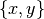 models the testimony that, either x saw y, or y saw x.
1 2 3 4 5 6 7 8 9 10 11 12 13 14 15 16 17 18 | >>> from graphs import Graph
>>> g = Graph('berge')
>>> g.showShort()
*---- short description of the graph ----*
Name : 'berge'
Vertices : ['A', 'B', 'C', 'D', 'E', 'I']
Valuation domain : {'min': -1, 'med': 0, 'max': 1}
Gamma function :
A -> ['D', 'B', 'E']
B -> ['E', 'I', 'A']
C -> ['E', 'D', 'I']
D -> ['C', 'I', 'A']
E -> ['C', 'B', 'I', 'A']
I -> ['C', 'E', 'B', 'D']
>>> g.exportGraphViz('berge1')
*---- exporting a dot file for GraphViz tools ---------*
Exporting to berge1.dot
fdp -Tpng berge1.dot -o berge1.png
|
{kind=link}
From graph theory we know that time interval intersections graphs must in fact be interval graphs, i.e. triangulated and co-comparative graphs. The testimonies graph should therefore not contain any chordless cycle of four and more vertices. Now, the presence or not of such chordless cycles in the testimonies graph may be checked as follows.
1 2 3 4 5 6 7 | >>> g.computeChordlessCycles()
Chordless cycle certificate -->>> ['D', 'C', 'E', 'A', 'D']
Chordless cycle certificate -->>> ['D', 'I', 'E', 'A', 'D']
Chordless cycle certificate -->>> ['D', 'I', 'B', 'A', 'D']
[(['D', 'C', 'E', 'A', 'D'], frozenset({'C', 'D', 'E', 'A'})),
(['D', 'I', 'E', 'A', 'D'], frozenset({'D', 'E', 'I', 'A'})),
(['D', 'I', 'B', 'A', 'D'], frozenset({'D', 'B', 'I', 'A'}))]
|
We see three intersection cycles of length 4, which is impossible to occur on the linear time line. Obviously one professor lied!
And it is D ; if we put to doubt his testimony that he saw A (see Line 1 below), we obtain indeed a triangulated graph instance whose dual is a comparability graph.
1 2 3 4 5 6 7 8 9 10 11 12 13 14 15 16 17 18 19 20 21 | >>> g.setEdgeValue( ('D','A'), 0)
>>> g.showShort()
*---- short description of the graph ----*
Name : 'berge'
Vertices : ['A', 'B', 'C', 'D', 'E', 'I']
Valuation domain : {'med': 0, 'min': -1, 'max': 1}
Gamma function :
A -> ['B', 'E']
B -> ['A', 'I', 'E']
C -> ['I', 'E', 'D']
D -> ['I', 'C']
E -> ['A', 'I', 'B', 'C']
I -> ['B', 'E', 'D', 'C']
>>> g.isIntervalGraph(Comments=True)
Graph 'berge' is triangulated.
Graph 'dual_berge' is transitively orientable.
=> Graph 'berge' is an interval graph.
>>> g.exportGraphViz('berge2')
*---- exporting a dot file for GraphViz tools ---------*
Exporting to berge2.dot
fdp -Tpng berge2.dot -o berge2.png
|

Fig. 55 The triangulated testimonies graph¶
Generating permutation graphs¶
A graph is called a permutation or inversion graph if there exists a permutation of its list of vertices such that the graph is isomorphic to the inversions operated by the permutation in this list (see [GOL-2004] Chapter 7, pp 157-170). This kind is also part of the class of perfect graphs.
1 2 3 4 5 6 7 8 9 10 11 12 13 14 15 16 17 18 | >>> from graphs import PermutationGraph
>>> g = PermutationGraph(permutation = [4, 3, 6, 1, 5, 2])
>>> g
*------- Graph instance description ------*
Instance class : PermutationGraph
Instance name : permutationGraph
Graph Order : 6
Permutation : [4, 3, 6, 1, 5, 2]
Graph Size : 9
Valuation domain : [-1.00; 1.00]
Attributes : ['name', 'vertices', 'order', 'permutation',
'valuationDomain', 'edges', 'size', 'gamma']
>>> g.isPerfectGraph()
True
>>> g.exportGraphViz()
*---- exporting a dot file for GraphViz tools ---------*
Exporting to permutationGraph.dot
fdp -Tpng permutationGraph.dot -o permutationGraph.png
|

Fig. 56 The default permutation graph¶
By using color sorting queues, the minimal vertex coloring for a permutation graph is computable in 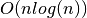 (see [GOL-2004]).
1 2 3 4 5 6 7 8 9 10 11 12 | >>> g.computeMinimalVertexColoring(Comments=True)
vertex 1: lightcoral
vertex 2: lightcoral
vertex 3: lightblue
vertex 4: gold
vertex 5: lightblue
vertex 6: gold
>>> g.exportGraphViz(fileName='coloredPermutationGraph',\
... WithVertexColoring=True)
*---- exporting a dot file for GraphViz tools ---------*
Exporting to coloredPermutationGraph.dot
fdp -Tpng coloredPermutationGraph.dot -o coloredPermutationGraph.png
|

Fig. 57 Minimal vertex coloring of the permutation graph¶
The correspondingly colored matching diagram of the nine inversions -the actual edges of the permutation graph-, which are induced by the given permutation [4, 3, 6, 1, 5, 2], may as well be drawn with the graphviz neato layout and explicitly positioned horizontal lists of vertices (see Fig. 58).
1 2 3 4 | >>> g.exportPermutationGraphViz(WithEdgeColoring=True)
*---- exporting a dot file for GraphViz tools ---------*
Exporting to perm_permutationGraph.dot
neato -n -Tpng perm_permutationGraph.dot -o perm_permutationGraph.png
|
{kind=link}
As mentioned before, a permutation graph and its dual are transitively orientable. The graphs.PermutationGraph.transitiveOrientation() method constructs from a given permutation graph a digraph where each edge of the permutation graph is converted into an arc oriented in increasing alphabetic order of the adjacent vertices’ keys (see [GOL-2004]). This orientation of the edges of a permutation graph is always transitive and delivers a transitive ordering of the vertices.
1 2 3 4 5 6 7 8 9 10 11 12 13 14 15 16 17 18 19 20 | >>> dg = g.transitiveOrientation()
>>> dg
*------- Digraph instance description ------*
Instance class : TransitiveDigraph
Instance name : oriented_permutationGraph
Digraph Order : 6
Digraph Size : 9
Valuation domain : [-1.00; 1.00]
Determinateness : 100.000
Attributes : ['name', 'order', 'actions', 'valuationdomain',
'relation', 'gamma', 'notGamma', 'size']
>>> print('Transitivity degree: %.3f' % dg.computeTransitivityDegree() )
Transitivity degree: 1.000
>>> dg.exportGraphViz()
*---- exporting a dot file for GraphViz tools ---------*
Exporting to oriented_permutationGraph.dot
0 { rank = same; 1; 2; }
1 { rank = same; 5; 3; }
2 { rank = same; 4; 6; }
dot -Grankdir=TB -Tpng oriented_permutationGraph.dot -o oriented_permutationGraph.png
|

Fig. 59 Hasse diagram of the transitive orientation of the permutation graph¶
The dual of a permutation graph is again a permutation graph and as such also transitively orientable.
1 2 3 4 | >>> dgd = (-g).transitiveOrientation()
>>> print('Dual transitivity degree: %.3f' %\
... dgd.computeTransitivityDegree() )
Dual transitivity degree: 1.000
|
Recognizing permutation graphs¶
Now, a given graph g is a permutation graph if and only if both g and -g are transitively orientable. This property gives a polynomial test procedure (in 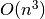 due to the transitivity check) for recognizing permutation graphs.
Let us consider, for instance, the following random graph of order 8 generated with an edge probability of 40% and a random seed equal to 4335.
1 2 3 4 5 6 7 8 9 10 11 12 13 14 15 16 17 | >>> from graphs import *
>>> g = RandomGraph(order=8,edgeProbability=0.4,seed=4335)
>>> g
*------- Graph instance description ------*
Instance class : RandomGraph
Instance name : randomGraph
Seed : 4335
Edge probability : 0.4
Graph Order : 8
Graph Size : 10
Valuation domain : [-1.00; 1.00]
Attributes : ['name', 'order', 'vertices', 'valuationDomain',
'seed', 'edges', 'size',
'gamma', 'edgeProbability']
>>> g.isPerfectGraph()
True
>>> g.exportGraphViz()
|

Fig. 60 Random graph of order 8 generated with edge probability 0.4¶
If the random perfect graph instance g (see Fig. 60) is indeed a permutation graph, g and its dual -g should be transitively orientable, i.e. comparability graphs (see [GOL-2004]). With the graphs.Graph.isComparabilityGraph() test, we may easily check this fact. This method proceeds indeed by trying to construct a transitive neighbourhood decomposition of a given graph instance and, if successful, stores the resulting edge orientations into a self.edgeOrientations attribute (see [GOL-2004] p.129-132).
1 2 3 4 5 6 7 8 9 10 11 12 13 14 15 16 17 18 | >>> if g.isComparabilityGraph():
... print(g.edgeOrientations)
{('v1', 'v1'): 0, ('v1', 'v2'): 1, ('v2', 'v1'): -1, ('v1', 'v3'): 1,
('v3', 'v1'): -1, ('v1', 'v4'): 1, ('v4', 'v1'): -1, ('v1', 'v5'): 0,
('v5', 'v1'): 0, ('v1', 'v6'): 1, ('v6', 'v1'): -1, ('v1', 'v7'): 0,
('v7', 'v1'): 0, ('v1', 'v8'): 1, ('v8', 'v1'): -1, ('v2', 'v2'): 0,
('v2', 'v3'): 0, ('v3', 'v2'): 0, ('v2', 'v4'): 0, ('v4', 'v2'): 0,
('v2', 'v5'): 0, ('v5', 'v2'): 0, ('v2', 'v6'): 0, ('v6', 'v2'): 0,
('v2', 'v7'): 0, ('v7', 'v2'): 0, ('v2', 'v8'): 0, ('v8', 'v2'): 0,
('v3', 'v3'): 0, ('v3', 'v4'): 0, ('v4', 'v3'): 0, ('v3', 'v5'): 0,
('v5', 'v3'): 0, ('v3', 'v6'): 0, ('v6', 'v3'): 0, ('v3', 'v7'): 0,
('v7', 'v3'): 0, ('v3', 'v8'): 0, ('v8', 'v3'): 0, ('v4', 'v4'): 0,
('v4', 'v5'): 0, ('v5', 'v4'): 0, ('v4', 'v6'): 0, ('v6', 'v4'): 0,
('v4', 'v7'): 0, ('v7', 'v4'): 0, ('v4', 'v8'): 0, ('v8', 'v4'): 0,
('v5', 'v5'): 0, ('v5', 'v6'): 1, ('v6', 'v5'): -1, ('v5', 'v7'): 1,
('v7', 'v5'): -1, ('v5', 'v8'): 1, ('v8', 'v5'): -1, ('v6', 'v6'): 0,
('v6', 'v7'): 0, ('v7', 'v6'): 0, ('v6', 'v8'): 1, ('v8', 'v6'): -1,
('v7', 'v7'): 0, ('v7', 'v8'): 1, ('v8', 'v7'): -1, ('v8', 'v8'): 0}
|

Fig. 61 Transitive neighbourhoods of the graph g¶
The resulting orientation of the edges of g (see Fig. 61) is indeed transitive. The same procedure applied to the dual graph gd = -g gives a transitive orientation to the edges of -g.
1 2 3 4 5 6 7 8 9 10 11 12 13 14 15 16 17 18 19 | >>> gd = -g
>>> if gd.isComparabilityGraph():
... print(gd.edgeOrientations)
{('v1', 'v1'): 0, ('v1', 'v2'): 0, ('v2', 'v1'): 0, ('v1', 'v3'): 0,
('v3', 'v1'): 0, ('v1', 'v4'): 0, ('v4', 'v1'): 0, ('v1', 'v5'): 1,
('v5', 'v1'): -1, ('v1', 'v6'): 0, ('v6', 'v1'): 0, ('v1', 'v7'): 1,
('v7', 'v1'): -1, ('v1', 'v8'): 0, ('v8', 'v1'): 0, ('v2', 'v2'): 0,
('v2', 'v3'): -2, ('v3', 'v2'): 2, ('v2', 'v4'): -3, ('v4', 'v2'): 3,
('v2', 'v5'): 1, ('v5', 'v2'): -1, ('v2', 'v6'): 1, ('v6', 'v2'): -1,
('v2', 'v7'): 1, ('v7', 'v2'): -1, ('v2', 'v8'): 1, ('v8', 'v2'): -1,
('v3', 'v3'): 0, ('v3', 'v4'): -3, ('v4', 'v3'): 3, ('v3', 'v5'): 1,
('v5', 'v3'): -1, ('v3', 'v6'): 1, ('v6', 'v3'): -1, ('v3', 'v7'): 1,
('v7', 'v3'): -1, ('v3', 'v8'): 1, ('v8', 'v3'): -1, ('v4', 'v4'): 0,
('v4', 'v5'): 1, ('v5', 'v4'): -1, ('v4', 'v6'): 1, ('v6', 'v4'): -1,
('v4', 'v7'): 1, ('v7', 'v4'): -1, ('v4', 'v8'): 1, ('v8', 'v4'): -1,
('v5', 'v5'): 0, ('v5', 'v6'): 0, ('v6', 'v5'): 0, ('v5', 'v7'): 0,
('v7', 'v5'): 0, ('v5', 'v8'): 0, ('v8', 'v5'): 0, ('v6', 'v6'): 0,
('v6', 'v7'): 1, ('v7', 'v6'): -1, ('v6', 'v8'): 0, ('v8', 'v6'): 0,
('v7', 'v7'): 0, ('v7', 'v8'): 0, ('v8', 'v7'): 0, ('v8', 'v8'): 0}
|

Fig. 62 Transitive neighbourhoods of the dual graph -g¶
It is worthwhile noticing that the orientation of g is achieved with a single neighbourhood decomposition, covering all the vertices. Whereas, the orientation of the dual -g needs a decomposition into three subsequent neighbourhoods marked in black, red and blue (see Fig. 62).
Let us recheck these facts by explicitly constructing transitively oriented digraph instances with the graphs.Graph.computeTransitivelyOrientedDigraph() method.
1 2 3 4 5 6 | >>> og = g.computeTransitivelyOrientedDigraph(PartiallyDetermined=True)
>>> print('Transitivity degree: %.3f' % (og.transitivityDegree))
Transitivity degree: 1.000
>>> ogd = (-g).computeTransitivelyOrientedDigraph(PartiallyDetermined=True)
>>> print('Transitivity degree: %.3f' % (ogd.transitivityDegree))
Transitivity degree: 1.000
|
The PartiallyDetermined=True flag (see Lines 1 and 5) is required here in order to orient only the actual edges of the graphs. Relations between vertices not linked by an edge will be put to the indeterminate characteristic value 0. This will allow us to compute, later on, convenient disjunctive digraph fusions.
As both graphs are indeed transitively orientable (see Lines 3 and 6 above), we may conclude that the given random graph g is actually a permutation graph instance. Yet, we still need to find now its corresponding permutation. We therefore implement a recipee given by Martin Golumbic [GOL-2004] p.159.
We will first fuse both og and ogd orientations above with an epistemic disjunction (see the digraphsTools.omax() operator), hence, the partially determined orientations requested above.
1 2 3 4 5 | >>> from digraphs import FusionDigraph
>>> f1 = FusionDigraph(og,ogd,operator='o-max')
>>> s1 = f1.computeCopelandRanking()
>>> print(s1)
['v5', 'v7', 'v1', 'v6', 'v8', 'v4', 'v3', 'v2']
|
We obtain by the Copeland ranking rule (see Ranking with multiple incommensurable criteria and the digraphs.Digraph.computeCopelandRanking() method) a linear ordering of the vertices (see Line 5 above).
We reverse now the orientation of the edges in og (see -og in Line 1 below) in order to generate, again by disjunctive fusion, the inversions that are produced by the permutation we are looking for. Computing again a ranking with the Copeland rule, will show the correspondingly permuted list of vertices (see Line 4 below).
1 2 3 4 | >>> f2 = FusionDigraph((-og),ogd,operator='o-max')
>>> s2 = f2.computeCopelandRanking()
>>> print(s2)
['v8', 'v7', 'v6', 'v5', 'v4', 'v3', 'v2', 'v1']
|
Vertex v8 is put from position 5 to position 1, vertex v7 is put from position 2 to position 2, vertex v6 from position 4 to position 3, ‘vertex v5 from position 1 to position 4, etc … . We generate these position swaps for all vertices and obtain thus the required permutation (see Line 5 below).
1 2 3 4 5 | >>> permutation = [0 for j in range(g.order)]
>>> for j in range(g.order):
... permutation[s2.index(s1[j])] = j+1
>>> print(permutation)
[5, 2, 4, 1, 6, 7, 8, 3]
|
It is worthwhile noticing by the way that transitive orientations of a given graph and its dual are usually not unique and, so may also be the resulting permutations. However, they all correspond to isomorphic graphs (see [GOL-2004]). In our case here, we observe two different permutations and their reverses:
1 2 3 4 | s1: ['v1', 'v4', 'v3', 'v2', 'v5', 'v6', 'v7', 'v8']
s2: ['v4', 'v3', 'v2', 'v8', 'v6', 'v1', 'v7', 'v5']
(s1 -> s2): [2, 3, 4, 8, 6, 1, 7, 5]
(s2 -> s1): [6, 1, 2, 3, 8, 5, 7, 4]
|
And:
1 2 3 4 | s3: ['v5', 'v7', 'v1', 'v6', 'v8', 'v4', 'v3', 'v2']
s4: ['v8', 'v7', 'v6', 'v5', 'v4', 'v3', 'v2', 'v1']
(s3 -> s4): [5, 2, 4, 1, 6, 7, 8, 3]
(s4 -> s3) = [4, 2, 8, 3, 1, 5, 6, 7]
|
The graphs.Graph.computePermutation() method does directly operate all these steps: - computing transitive orientations, - ranking their epistemic fusion and, - delivering a corresponding permutation.
1 2 3 4 | >>> g.computePermutation(Comments=True)
['v1', 'v2', 'v3', 'v4', 'v5', 'v6', 'v7', 'v8']
['v2', 'v3', 'v4', 'v8', 'v6', 'v1', 'v7', 'v5']
[2, 3, 4, 8, 6, 1, 7, 5]
|
We may finally check that, for instance, the two permutations [2, 3, 4, 8, 6, 1, 7, 5] and [4, 2, 8, 3, 1, 5, 6, 7] observed above, will correctly generate corresponding isomorphic permutation graphs.
1 2 3 4 | >>> gtesta = PermutationGraph(permutation=[2, 3, 4, 8, 6, 1, 7, 5])
>>> gtestb = PermutationGraph(permutation=[4, 2, 8, 3, 1, 5, 6, 7])
>>> gtesta.exportGraphViz('gtesta')
>>> gtestb.exportGraphViz('gtestb')
|
{kind=link}
And, we recover indeed two isomorphic copies of the original random graph (compare Fig. 63 with Fig. 60).
Back to Content Table
On tree graphs and graph forests¶
Generating random tree graphs¶
Using the graphs.RandomTree class, we may, for instance, generate a random tree graph with 9 vertices.
1 2 3 4 5 6 7 8 9 10 11 12 13 14 15 16 | >>> t = RandomTree(order=9,seed=100)
>>> t
*------- Graph instance description ------*
Instance class : RandomTree
Instance name : randomTree
Graph Order : 9
Graph Size : 8
Valuation domain : [-1.00; 1.00]
Attributes : ['name', 'order', 'vertices', 'valuationDomain',
'edges', 'prueferCode', 'size', 'gamma']
*---- RandomTree specific data ----*
Prüfer code : ['v3', 'v8', 'v8', 'v3', 'v7', 'v6', 'v7']
>>> t.exportGraphViz('tutRandomTree')
*---- exporting a dot file for GraphViz tools ---------*
Exporting to tutRandomTree.dot
neato -Tpng tutRandomTree.dot -o tutRandomTree.png
|

Fig. 64 Random Tree instance of order 9¶
A tree graph of order n contains n-1 edges (see Line 8 and 9) and we may distinguish vertices like v1, v2, v4, v5 or v9 of degree 1, called the leaves of the tree, and vertices like v3, v6, v7 or v8 of degree 2 or more, called the nodes of the tree.
The structure of a tree of order 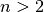 is entirely characterised by a corresponding Prüfer code -i.e. a list of vertices keys- of length n-2. See, for instance in Line 12 the code [‘v3’, ‘v8’, ‘v8’, ‘v3’, ‘v7’, ‘v6’, ‘v7’] corresponding to our sample tree graph t.
Each position of the code indicates the parent of the remaining leaf with the smallest vertex label. Vertex v3 is thus the parent of v1 and we drop leaf v1, v8 is now the parent of leaf v2 and we drop v2, vertex v8 is again the parent of leaf v4 and we drop v4, vertex v3 is the parent of leaf v5 and we drop v5, v7 is now the parent of leaf v3 and we may drop v3, v6 becomes the parent of leaf v8 and we drop v8, v7 becomes now the parent of leaf v6 and we may drop v6. The two eventually remaining vertices, v7 and v9, give the last link in the reconstructed tree (see [BAR-1991]).
It is as well possible to first, generate a random Prüfer code of length n-2 from a set of n vertices and then, construct the corresponding tree of order n by reversing the procedure illustrated above (see [BAR-1991]).
1 2 3 4 5 6 7 8 9 10 11 12 13 14 15 16 17 18 19 20 21 22 23 24 25 | >>> verticesList = ['v1','v2','v3','v4','v5','v6','v7']
>>> n = len(verticesList)
>>> from random import seed, choice
>>> seed(101)
>>> code = []
>>> for k in range(n-2):
... code.append( choice(verticesList) )
>>> print(code)
['v5', 'v7', 'v2', 'v5', 'v3']
>>> t = RandomTree(prueferCode=['v5', 'v7', 'v2', 'v5', 'v3'])
>>> t
*------- Graph instance description ------*
Instance class : RandomTree
Instance name : randomTree
Graph Order : 7
Graph Size : 6
Valuation domain : [-1.00; 1.00]
Attributes : ['name', 'order', 'vertices', 'valuationDomain',
'edges', 'prueferCode', 'size', 'gamma']
*---- RandomTree specific data ----*
Prüfer code : ['v5', 'v7', 'v2', 'v5', 'v3']
>>> t.exportGraphViz('tutPruefTree')
*---- exporting a dot file for GraphViz tools ---------*
Exporting to tutPruefTree.dot
neato -Tpng tutPruefTree.dot -o tutPruefTree.png
|

Fig. 65 Tree instance from a random Prüfer code¶
Following from the bijection between a labelled tree and its Prüfer code, we actually know that there exist 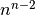 different tree graphs with the same n vertices.
Given a genuine graph, how can we recognize that it is in fact a tree instance ?
Recognizing tree graphs¶
Given a graph g of order n and size s, the following 5 assertions A1, A2, A3, A4 and A5 are all equivalent (see [BAR-1991]):
A1: g is a tree;
A2: g is without (chordless) cycles and 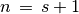;
A3: g is connected and ;
A4: Any two vertices of g are always connected by a unique path;
A5: g is connected and dropping any single edge will always disconnect g.
Assertion A3, for instance, gives a simple test for recognizing a tree graph. In case of a lazy evaluation of the test in Line 3 below, it is opportune, from a computational complexity perspective, to first, check the order and size of the graph, before checking its potential connectedness.
1 2 3 4 5 6 7 | >>> from graphs import RandomGraph
>>> g = RandomGraph(order=6,edgeProbability=0.3,seed=62)
>>> if g.order == (g.size +1) and g.isConnected():
... print('The graph is a tree ?', True)
... else:
... print('The graph is a tree ?',False)
The graph is a tree ? True
|
The random graph of order 6 and edge probability 30%, generated with seed 62, is actually a tree graph instance, as we may readily confirm from its graphviz drawing in Fig. 66 (see also the graphs.Graph.isTree() method for an implemented alternative test).
>>> g.exportGraphViz(
*---- exporting a dot file for GraphViz tools ---------*
Exporting to test62.dot
fdp -Tpng test62.dot -o test62.png

Fig. 66 Recognizing a tree instance¶
Yet, we still have to recover its corresponding Prüfer code. Therefore, we may use the graphs.RandomTree.tree2Pruefer() method.
>>> from graphs import RandomTree
>>> RandomTree.tree2Pruefer(g)
['v6', 'v1', 'v2', 'v1', 'v2', 'v5']
Let us now turn toward a major application of tree graphs, namely spanning trees and forests related to graph traversals.
Spanning trees and forests¶
With the graphs.RandomSpanningTree class we may generate, from a given connected graph g instance, uniform random instances of a spanning tree by using Wilson’s algorithm [WIL-1996]
Note
Wilson’s algorithm only works for connected graphs 4.
1 2 3 4 5 6 7 8 9 10 11 12 13 14 15 16 17 18 19 20 21 22 | >>> from graphs import *
>>> g = RandomGraph(order=9,edgeProbability=0.4,seed=100)
>>> spt = RandomSpanningTree(g)
>>> spt
*------- Graph instance description ------*
Instance class : RandomSpanningTree
Instance name : randomGraph_randomSpanningTree
Graph Order : 9
Graph Size : 8
Valuation domain : [-1.00; 1.00]
Attributes : ['name','vertices','order','valuationDomain',
'edges','size','gamma','dfs','date',
'dfsx','prueferCode']
*---- RandomTree specific data ----*
Prüfer code : ['v7', 'v9', 'v5', 'v1', 'v8', 'v4', 'v9']
>>> spt.exportGraphViz(fileName='randomSpanningTree',\
... WithSpanningTree=True)
*---- exporting a dot file for GraphViz tools ---------*
Exporting to randomSpanningTree.dot
[['v1', 'v5', 'v6', 'v5', 'v1', 'v8', 'v9', 'v3', 'v9', 'v4',
'v7', 'v2', 'v7', 'v4', 'v9', 'v8', 'v1']]
neato -Tpng randomSpanningTree.dot -o randomSpanningTree.png
|

Fig. 67 Random spanning tree¶
More general, and in case of a not connected graph, we may generate with the graphs.RandomSpanningForest class a not necessarily uniform random instance of a spanning forest -one or more random tree graphs- generated from a random depth first search of the graph components’ traversals.
1 2 3 4 5 6 7 8 9 10 11 12 13 14 15 | >>> g = RandomGraph(order=15,edgeProbability=0.1,seed=140)
>>> g.computeComponents()
[{'v12', 'v01', 'v13'}, {'v02', 'v06'},
{'v08', 'v03', 'v07'}, {'v15', 'v11', 'v10', 'v04', 'v05'},
{'v09', 'v14'}]
>>> spf = RandomSpanningForest(g,seed=100)
>>> spf.exportGraphViz(fileName='spanningForest',WithSpanningTree=True)
*---- exporting a dot file for GraphViz tools ---------*
Exporting to spanningForest.dot
[['v03', 'v07', 'v08', 'v07', 'v03'],
['v13', 'v12', 'v13', 'v01', 'v13'],
['v02', 'v06', 'v02'],
['v15', 'v11', 'v04', 'v11', 'v15', 'v10', 'v05', 'v10', 'v15'],
['v09', 'v14', 'v09']]
neato -Tpng spanningForest.dot -o spanningForest.png
|

Fig. 68 Random spanning forest instance¶
Maximum determined spanning forests¶
In case of valued graphs supporting weighted edges, we may finally construct a most determined spanning tree (or forest if not connected) using Kruskal’s greedy minimum-spanning-tree algorithm 5 on the dual valuation of the graph [KRU-1956].
We consider, for instance, a randomly valued graph with five vertices and seven edges bipolar-valued in [-1.0; 1.0].
1 2 3 4 5 6 7 8 9 10 11 | >>> from graphs import *
>>> g = RandomValuationGraph(seed=2)
>>> print(g)
*------- Graph instance description ------*
Instance class : RandomValuationGraph
Instance name : randomGraph
Graph Order : 5
Graph Size : 7
Valuation domain : [-1.00; 1.00]
Attributes : ['name', 'order', 'vertices', 'valuationDomain',
'edges', 'size', 'gamma']
|
To inspect the edges’ actual weights, we first transform the graph into a corresponding digraph (see Line 1 below) and use the digraphs.Digraph.showRelationTable() method (see Line 2 below) for printing its symmetric adjacency matrix.
1 2 3 4 5 6 7 8 9 10 11 | >>> dg = g.graph2Digraph()
>>> dg.showRelationTable()
* ---- Relation Table -----
S | 'v1' 'v2' 'v3' 'v4' 'v5'
------|-------------------------------------------
'v1' | 0.00 0.91 0.90 -0.89 -0.83
'v2' | 0.91 0.00 0.67 0.47 0.34
'v3' | 0.90 0.67 0.00 -0.38 0.21
'v4' | -0.89 0.47 -0.38 0.00 0.21
'v5' | -0.83 0.34 0.21 0.21 0.00
Valuation domain: [-1.00;1.00]
|
To compute the most determined spanning tree or forest, we may use the graphs.BestDeterminedSpanningForest class constructor.
1 2 3 4 5 6 7 8 9 10 11 12 13 14 15 | >>> mt = BestDeterminedSpanningForest(g)
>>> print(mt)
*------- Graph instance description ------*
Instance class : BestDeterminedSpanningForest
Instance name : randomGraph_randomSpanningForest
Graph Order : 5
Graph Size : 4
Valuation domain : [-1.00; 1.00]
Attributes : ['name','vertices','order','valuationDomain',
'edges','size','gamma','dfs',
'date', 'averageTreeDetermination']
*---- best determined spanning tree specific data ----*
Depth first search path(s) :
[['v1', 'v2', 'v4', 'v2', 'v5', 'v2', 'v1', 'v3', 'v1']]
Average determination(s) : [Decimal('0.655')]
|
The given graph is connected and, hence, admits a single spanning tree (see Fig. 69) of maximum mean determination = (0.47 + 0.91 + 0.90 + 0.34)/4 = 0.655 (see Lines 9, 6 and 10 in the relation table above).
1 2 3 4 5 6 | >>> mt.exportGraphViz(fileName='bestDeterminedspanningTree',\
... WithSpanningTree=True)
*---- exporting a dot file for GraphViz tools ---------*
Exporting to spanningTree.dot
[['v4', 'v2', 'v1', 'v3', 'v1', 'v2', 'v5', 'v2', 'v4']]
neato -Tpng bestDeterminedSpanningTree.dot -o bestDeterminedSpanningTree.png
|

Fig. 69 Best determined spanning tree¶
One may easily verify that all other potential spanning trees, including instead the edges {v3, v5} and/or {v4, v5} - will show a lower average determination.
Back to Content Table
Bibliography¶
- CPSTAT-L5
Bisdorff R. (2017) “Simulating from abitrary empirical random distributions”. MICS Computational Statistics course, Lecture 5. FSTC/ILIAS University of Luxembourg, Winter Semester 2017 (see http://hdl.handle.net/10993/37933).
- BIS-2016(1,2)
Bisdorff R. (2016). “Computing linear rankings from trillions of pairwise outranking situations”. In Proceedings of DA2PL’2016 From Multiple Criteria Decision Aid to Preference Learning, R. Busa-Fekete, E. Hüllermeier, V. Mousseau and K. Pfannschmidt (Eds.), University of Paderborn (Germany), Nov. 7-8 2016: 1-6 (downloadable PDF file 451.4 kB)
- BIS-2015
Bisdorff R. (2015). “The EURO 2004 Best Poster Award: Choosing the Best Poster in a Scientific Conference”. Chapter 5 in R. Bisdorff, L. Dias, P. Meyer, V. Mousseau, and M. Pirlot (Eds.), Evaluation and Decision Models with Multiple Criteria: Case Studies. Springer-Verlag Berlin Heidelberg, International Handbooks on Information Systems, DOI 10.1007/978-3-662-46816-6_1, pp. 117-166 (downloadable PDF file 754.7 kB).
- ADT-L2(1,2)
Bisdorff R. (2014) “Who wins the election?” MICS Algorithmic Decision Theory course, Lecture 2. FSTC/ILIAS University of Luxembourg, Summer Semester 2014 ( see http://hdl.handle.net/10993/37933).
- ADT-L7(1,2,3)
Bisdorff R.(2014) “Best multiple criteria choice: the Rubis outranking method”. MICS Algorithmic Decision Theory course, Lecture 7. FSTC/ILIAS University of Luxembourg, Summer Semester 2014 (see http://hdl.handle.net/10993/37933).
- BIS-2013(1,2,3,4,5,6,7,8)
Bisdorff R. (2013) “On Polarizing Outranking Relations with Large Performance Differences” Journal of Multi-Criteria Decision Analysis (Wiley) 20:3-12 (downloadable preprint PDF file 403.5 Kb).
- BIS-2012(1,2,3)
Bisdorff R. (2012). “On measuring and testing the ordinal correlation between bipolar outranking relations”. In Proceedings of DA2PL’2012 From Multiple Criteria Decision Aid to Preference Learning, University of Mons 91-100. (downloadable preliminary version PDF file 408.5 kB ).
- DIA-2010(1,2)
Dias L.C. and Lamboray C. (2010). “Extensions of the prudence principle to exploit a valued outranking relation”. European Journal of Operational Research Volume 201 Number 3 pp. 828-837.
- LAM-2009(1,2,3)
Lamboray C. (2009) “A prudent characterization of the Ranked Pairs Rule”. Social Choice and Welfare 32 pp. 129-155.
- BIS-2008(1,2)
Bisdorff R., Meyer P. and Roubens M.(2008) “RUBIS: a bipolar-valued outranking method for the choice problem”. 4OR, A Quarterly Journal of Operations Research Springer-Verlag, Volume 6, Number 2 pp. 143-165. (Online) Electronic version: DOI: 10.1007/s10288-007-0045-5 (downloadable preliminary version PDF file 271.5Kb).
- ISOMIS-08(1,2)
Bisdorff R. and Marichal J.-L. (2008). “Counting non-isomorphic maximal independent sets of the n-cycle graph”. Journal of Integer Sequences, Vol. 11 Article 08.5.7 (openly accessible here).
- NR3-2007
Press W.H., Teukolsky S.A., Vetterling W.T. and Flannery B.P. (2007) “Single-Pass Estimation of Arbitrary Quantiles” Section 5.8.2 in Numerical Recipes: The Art of Scientific Computing 3rd Ed., Cambridge University Press, pp 435-438.
- CHAM-2006
Chambers J.M., James D.A., Lambert D. and Vander Wiel S. (2006) “Monitoring Networked Applications with Incremental Quantile Estimation”. Statistical Science, Vol. 21, No.4, pp.463-475. DOI: 10 12140/088342306000000583.
- BIS-2006a
Bisdorff R., Pirlot M. and Roubens M. (2006). “Choices and kernels from bipolar valued digraphs”. European Journal of Operational Research, 175 (2006) 155-170. (Online) Electronic version: DOI:10.1016/j.ejor.2005.05.004 (downloadable preliminary version PDF file 257.3Kb).
- BIS-2006b(1,2,3,4)
Bisdorff R. (2006). “On enumerating the kernels in a bipolar-valued digraph”. Annales du Lamsade 6, Octobre 2006, pp. 1 - 38. Université Paris-Dauphine. ISSN 1762-455X (downloadable version PDF file 532.2 Kb).
- BIS-2004(1,2,3)
Bisdorff R. (2004) “On a natural fuzzification of Boolean logic”. In Erich Peter Klement and Endre Pap (editors), Proceedings of the 25th Linz Seminar on Fuzzy Set Theory, Mathematics of Fuzzy Systems. Bildungszentrum St. Magdalena, Linz (Austria), February 2004. pp. 20-26 (PDF file (133.4 Kb) for downloading)
- GOL-2004(1,2,3,4,5,6,7,8,9,10)
Golumbic M.Ch. (2004), Agorithmic Graph Theory and Perfect Graphs 2nd Ed., Annals of Discrete Mathematics 57, Elsevier.
- FMCAA
Häggström O. (2002) Finite Markov Chains and Algorithmic Applications. Cambridge University Press.
- BIS-2000
Bisdorff R. (2000), “Logical foundation of fuzzy preferential systems with application to the ELECTRE decision aid methods”, Computers and Operations Research, 27:673-687 (downloadable version PDF file 159.1Kb).
- BIS-1999(1,2)
Bisdorff R. (1999), “Bipolar ranking from pairwise fuzzy outrankings”, JORBEL Belgian Journal of Operations Research, Statistics and Computer Science, Vol. 37 (4) 97 379-387. (PDF file (351.7 Kb) for downloading)
- WIL-1996
Wilson D.B. (1996), Generating random spanning trees more quickly than the cover time, Proceedings of the Twenty-eighth Annual ACM Symposium on the Theory of Computing (Philadelphia, PA, 1996), 296-303, ACM, New York, 1996.
- BAR-1991(1,2,3)
Barthélemy J.-P. and Guenoche A. (1991), Trees and Proximities Representations, Wiley, ISBN: 978-0471922636.
- KRU-1956
Kruskal J.B. (1956), On the shortest spanning subtree of a graph and the traveling salesman problem, Proceedings of the American Mathematical Society. 7: 48–50.
Documents¶
Indices and tables¶
Footnotes¶
- 1(1,2,3,4,5,6)
The
exportGraphVizmethod is depending on drawing tools from graphviz. On Linux Ubuntu or Debian you may trysudo apt-get install graphvizto install them. There are readydmginstallers for Mac OSX.- 2
Dependency: The
digraphs.Digraph.automorphismGenerators()method uses the shelldreadnautcommand from the nauty software package. See https://www3.cs.stonybrook.edu/~algorith/implement/nauty/implement.shtml . On Mac OS there exist dmg installers and on Ubuntu Linux or Debian, one may easily install it with...$ sudo apt-get install nauty.- 3
The
perrinMISshell command may be installed system wide with the command.../Digraph3$ make installPerrinfrom the main Digraph3 directory. It is stored by default into</usr/local/bin/>. This may be changed with theINSTALLDIRflag. The command.../Digraph3$ make installPerrinUserinstalls it instead without sudo into the user’s private<$Home/.bin>directory.- 4
Wilson’s algorithm uses loop-erased random walks. See https://en.wikipedia.org/wiki/Loop-erased_random_walk .
- 5
Kruskal’s algorithm is a minimum-spanning-tree algorithm which finds an edge of the least possible weight that connects any two trees in the forest. See https://en.wikipedia.org/wiki/Kruskal%27s_algorithm .
- 6(1,2)
- 7(1,2,3)
- 8
- 13(1,2)
The class of self-codual bipolar-valued digraphs consists of all weakly asymmetric digraphs, i.e. digraphs containing only asymmetric and/or indeterminate links. Limit cases consists of, on the one side, full tournaments with indeterminate reflexive links, and, on the other side, fully indeterminate digraphs. In this class, the converse (inverse ~ ) operator is indeed identical to the dual (negation - ) one.
- 14(1,2,3,4,5)
Not to be confused with the dual graph of a plane graph g that has a vertex for each face of g. Here we mean the less than (strict converse) relation corresponding to a greater or equal relation, or the less than or equal relation corresponding to a (strict) better than relation.
- 15
The concept of Condorcet winner -a generalization of absolute majority winners- proposed by Condorcet in 1785, is an early historical example of initial digraph kernel (see the tutorial On computing digraph kernels).
- 16
Discrete random variables with a given empirical probability law (here the polls) are provided in the
randomNumbersmodule by therandomNumbers.DiscreteRandomVariableclass.